DESYCO — Demand Systems of Consumers: User Manual
The demand-system package of AURA: theory, implementation and practice
1 Introduction
The DESYCO package of AURA (Demand Systems of Consumers) is designed to estimate the popular models of consumer demand using household survey data; §1.3 lists the models of this version, a list that grows with each version. These models find their interest wherever a policy or a shock changes prices: the welfare effects of taxes, subsidies and price shocks on households, the response of demand, the revenue of a fiscal reform, and the different responses of the poor and of the rich. For a group of goods, they estimate jointly the own- and cross-price elasticities of the quantities demanded and the expenditure elasticities, under the restrictions of consumer theory — adding-up, homogeneity and Slutsky symmetry — together with the budget shares, the Engel curves and, with unit values, the quality of what is bought. DESYCO weights the households by the sampling weights of the survey and computes standard errors that follow its design: clusters, strata and finite-population correction, or a bootstrap of the whole estimation.
This manual is written for practitioners. Each chapter covers a family of related models: the model and its assumptions, the estimator and its variance, the commands of AURA, and a complete example on data shipped with AURA, whose outputs are those printed here. The examples can be run from the help pages of the commands, line by line, or opened in their dialog boxes.
1.1 Why estimate a demand system
A household that faces a change of prices changes what it buys. Its loss of well-being, to a first order, is its budget share of the good times the change of its price: no elasticity is needed for a small change. For a large one — a subsidy removed, a tax doubled, a harvest failure — the household substitutes away from the dearer good, and the loss is smaller than the first-order measure. How much smaller depends on the own- and cross-price elasticities; the effect on demand, on tax revenue and on the subsidy bill depends on them directly. Expenditure elasticities say how demand changes as households grow richer, and which goods are necessities or luxuries.
A demand system estimates these elasticities jointly, for a group of goods, in a way that respects the theory of the consumer: the budget is spent (adding-up), a doubling of all prices and of income changes nothing (homogeneity), and the substitution effects are symmetric (Slutsky symmetry). The elasticities of DESYCO can supply the simulations of SUBSIM, the subsidy package of AURA: the own-price elasticities of its items, or the matrices of price and income elasticities of its second-order welfare measures.
1.2 A short history of demand systems
This account draws on the history given by Araar (1998, chapter 5), completed with the literature that followed.
1.2.1 Engel and the budget share
- \(\alpha_i\): the intercept of the share of good \(i\), in the Working–Leser form
- \(\beta_i\): the slope of the share of good \(i\) in log expenditure, in the Working–Leser form
The empirical study of household demand begins with Engel (1857), who observed in the budgets of Belgian working families that the poorer a family, the larger the share of its budget spent on food: Engel’s law, still the most robust regularity of household surveys (Engel 1895 returned to it with new data). The curve that relates the budget share of a good, or the quantity bought, to total expenditure is its Engel curve. Working (1943) found that the budget share of food fell linearly with the logarithm of total expenditure, and Leser (1963) compared several forms on British data; the share linear in log expenditure,
\[w_i = \alpha_i + \beta_i \ln x ,\]1.1
is the Working–Leser form. It adds up across goods when the intercepts sum to one and the slopes to zero, it makes a good a necessity when \(\beta_i < 0\) and a luxury when \(\beta_i > 0\), and it reappears in most of the models below — among them the first stage of Deaton’s unit-value model (Chapter 7).
1.2.2 The first system: the linear expenditure system
- \(u\): utility
- \(\beta_i\): the marginal budget share of good \(i\): its share of the expenditure left after the subsistence quantities
- \(\gamma_i\): the subsistence quantity of good \(i\)
- \(\gamma_j\): the subsistence quantity of good \(j\)
Stone (1954) estimated the first complete system of demand equations derived from the theory of the consumer: the linear expenditure system (LES), built on the utility function proposed by Klein and Rubin (1947–48), with Samuelson (1947–48) and Geary (1950–51),
\[u = \sum_i \beta_i \ln(q_i - \gamma_i), \qquad p_i q_i = p_i \gamma_i + \beta_i \Big(x - \sum_j p_j \gamma_j\Big).\]1.2
The household first buys a subsistence quantity \(\gamma_i\) of each good and shares the rest of its budget in fixed proportions \(\beta_i\). Each expenditure is linear in prices and income, the system satisfies the theory by construction, and it needs few parameters — a virtue with the short time series of the time. Its preferences are additive, however, which ties the price elasticities to the expenditure elasticities and rules out complements (Deaton 1974). The utility function of the LES is a translation of the Cobb-Douglas function (Pollak and Wales 1992).
1.2.3 Rotterdam and the flexible functional forms
- \(d\): a differential
- \(b_i\): the coefficient of real expenditure in the Rotterdam equation of good \(i\)
- \(\bar x\): real expenditure, whose log changes as total expenditure net of the share-weighted change of the log prices, \(d\ln\bar x = d\ln x - \sum_j w_j\,d\ln p_j\)
- \(c_{ij}\): the coefficient of the log price of good \(j\) in the Rotterdam equation of good \(i\)
- \(c\): the cost function, \(c(u,p)\)
- \(u\): utility, from 0 to 1
- \(a\): the cost of the utility level 0 at the prices \(p\), \(a(p)\)
- \(b\): the cost of the utility level 1 at the prices \(p\), \(b(p)\)
The Rotterdam model of Barten (1964) and Theil (1965) took the opposite route: a demand system written in differentials, with constant coefficients,
\[w_i\, d\ln q_i = b_i\, d\ln \bar x + \sum_j c_{ij}\, d\ln p_j ,\]1.3
on which homogeneity and symmetry are linear restrictions that can be tested. The tests often rejected them, and the question of how much the data or the functional form were to blame led to the flexible functional forms: an indirect utility or cost function that approximates any other to the second order at a point, so that the elasticities are not restricted a priori. The translog of Christensen, Jorgenson and Lau (1975) is the best known. The PIGLOG class of Muellbauer (1976), whose cost function is
\[\ln c(u, p) = (1 - u)\ln a(p) + u \ln b(p),\]1.4
has another property: the budget shares are linear in log expenditure, and the demands aggregate exactly over households, so that market demand behaves as the demand of a representative household at a well-defined level of expenditure.
1.2.4 The almost ideal demand system
- \(\alpha_i\): the intercept of the share of good \(i\)
- \(\gamma_{ij}\): the coefficient of the log price of good \(j\) in the share of good \(i\)
- \(\beta_i\): the coefficient of log real expenditure in the share of good \(i\)
- \(P\): the translog price index of AIDS
- \(\alpha_0\): the constant of the price index
- \(\alpha_k\): the coefficient of the log price of good \(k\) in the price index
- \(\gamma_{kj}\): the coefficient of the product of the log prices of goods \(k\) and \(j\) in the price index
- \(P^*\): the Stone price index
- \(a\): the translog price index, \(a(p)\)
- \(b\): the Cobb-Douglas price aggregator, \(b(p)\)
Deaton and Muellbauer (1980a) chose, within PIGLOG, a translog \(a(p)\) and a Cobb-Douglas \(b(p)\). The resulting almost ideal demand system (AIDS),
\[w_i = \alpha_i + \sum_j \gamma_{ij}\ln p_j + \beta_i \ln\!\frac{x}{P}, \qquad \ln P = \alpha_0 + \sum_k \alpha_k \ln p_k + \tfrac{1}{2}\sum_k\sum_j \gamma_{kj}\ln p_k \ln p_j ,\]1.5
is a flexible form, aggregates exactly, and turns adding-up, homogeneity and symmetry into linear restrictions on its parameters: \(\sum_i\alpha_i = 1\), \(\sum_i \beta_i = \sum_i\gamma_{ij} = 0\), \(\sum_j\gamma_{ij} = 0\), \(\gamma_{ij} = \gamma_{ji}\). Replacing \(P\) by the Stone index \(\ln P^* = \sum_k w_k \ln p_k\) gives the linear approximate AIDS, estimated equation by equation. AIDS became, and remains, the reference model of applied demand analysis (Deaton and Muellbauer 1980b).
1.2.5 The shape of Engel curves and the rank of demand
- \(\alpha_i\): the intercept of the share of good \(i\)
- \(\gamma_{ij}\): the coefficient of the log price of good \(j\) in the share of good \(i\)
- \(\beta_i\): the coefficient of log real expenditure in the share of good \(i\)
- \(\lambda_i\): the coefficient of the squared log real expenditure in the share of good \(i\)
- \(a\): the translog price index, \(a(p)\)
- \(b\): the Cobb-Douglas price aggregator, \(b(p)\)
In AIDS, as in the Working–Leser form, the Engel curves are straight lines in log expenditure. Kernel regressions of the budget shares on log expenditure (Nadaraya 1964; Watson 1964; with the bandwidth rules of Silverman 1986), which impose no form, showed that this holds for some goods — food, in most data — but not for others: in British data, the shares of alcohol and of clothing rise and then fall with expenditure (Banks, Blundell and Lewbel 1997). Araar (1998, chapter 5) found the same contrast in the Polish household budget surveys of 1989 to 1991, at the start of the economic transition: the share of food linear in log real income, those of alcohol and tobacco and of clothing and footwear quadratic, before estimating a quadratic AIDS to measure the welfare effects of the 1990 reform.
The flexibility of Engel curves has a theoretical limit. The rank of a demand system is the dimension of the space spanned by its Engel curves (Lewbel 1991). Gorman (1981) showed that a system whose shares are sums of functions of prices times functions of income, and that satisfies the theory, has rank three at most; Lewbel (1991) found rank three in American and British data. Banks, Blundell and Lewbel (1997) added the third term to AIDS: the quadratic AIDS (QUAIDS),
\[w_i = \alpha_i + \sum_j \gamma_{ij}\ln p_j + \beta_i \ln\!\frac{x}{a(p)} + \frac{\lambda_i}{b(p)}\Big[\ln\!\frac{x}{a(p)}\Big]^2 ,\]1.6
a rank-three system whose Engel curves are quadratic in log expenditure and whose elasticities vary with expenditure.
1.2.6 EASI: Engel curves of any shape
- \(y\): the implicit utility, measured as log real expenditure: the log of the expenditure that would reach the household’s utility if every price were one
Lewbel and Pendakur (2009) removed the rank limit. Their exact affine Stone index (EASI) demand system writes the budget shares as functions of prices and of log real expenditure \(y\), an implicit utility level obtained from the data, rather than of nominal expenditure; the shares can then be polynomials of any order in \(y\), the error terms are unobserved preference heterogeneity, and the model, nearly linear in its parameters, is estimated by instrumental variables. Pendakur (2009) describes its estimation.
1.2.7 Surveys without prices: unit values
Every model above needs prices. Household surveys in developing countries rarely record them, but they record expenditures and quantities, whose ratio, the unit value, varies across villages with the prices the households face. Prais and Houthakker (1955) had observed that unit values rise with income, because richer households buy dearer varieties: a unit value mixes price and quality. Deaton (1987, 1988, 1990) showed how to recover price elasticities from unit values, by using the variation of prices across the clusters of a survey, purging the unit values of quality, and correcting for the measurement errors that unit values and quantities share; his book (Deaton 1997, chapter 5) gives the model in full. Crawford, Laisney and Preston (2003) made unit values compatible with flexible Engel curves, and Gibson and Kim (2019) measured the quality response to price directly, finding that ignoring it overstates the own-price elasticities of quantity. Chapter 7 is devoted to Deaton’s model.
1.2.8 Households, zeros and the survey
Three questions run through every model. Household characteristics — size, age, education — shift preferences; they usually enter the intercepts of the shares (translating), or rescale prices (scaling), in the classification of Pollak and Wales (1981). Zero purchases are frequent at the level of detail of a survey: a household buys no rice in the two weeks of the diary. A share equation can average over zeros and positive purchases, but a variable observed for the buyers only, such as a unit value, raises a selection problem, which two-step corrections address (Heckman 1979; Heien and Wessells 1990; Shonkwiler and Yen 1999). Finally, the data are a survey, with sampling weights, clusters and strata: the estimates must be weighted to describe the population, and their standard errors must follow the design.
1.3 DESYCO in AURA
DESYCO is a package of AURA, under Statistics ▸ DESYCO. Each model has its command and its chapter in this manual:
| Model | Command | Chapter |
|---|---|---|
| Single-equation demand models | sedemand |
2 |
| The linear expenditure system and the Cobb-Douglas demands | eles |
3 |
| The translog demand system | etranslog |
4 |
| AIDS and QUAIDS | equaids |
5 |
| The exact affine Stone index demand system (EASI) | easi |
6 |
| The unit-value model of Deaton | duvm |
7 |
The list grows with each version. The chapters follow the history of
§1.2: the models estimated with prices, from the oldest to the most
recent, then the surveys without prices. The first commands port modules
written by the same author for Stata — duvm,
easi and equaids — so that their results can
be reproduced in AURA, sedemand covering the
single-equation modules of WELCOM and eles and
etranslog the models of Stata’s demandsys, and
add what AURA brings: dialog boxes, examples that run from the help, and
graphs that can be edited and merged. The commands of this version:
| Command | Menu entry | Purpose |
|---|---|---|
duvm |
Unit-value model of Deaton (duvm) | estimates Deaton’s unit-value model |
duvmdiag |
— | the diagnostic of the price signal, before estimating |
estat after duvm |
— | diagnostics, elasticities, quality, Engel curves |
predict after duvm |
— | the Engel curves of each household |
easi |
EASI demand system (easi) | estimates the EASI demand system |
easidiag |
in the box of easi |
the diagnostic of a specification, before estimating |
estat engel after easi |
— | the Engel curves |
predict after easi |
— | the fitted shares, the residuals, the implicit utility and the elasticities of each household |
equaids |
AIDS and QUAIDS demand systems (equaids) | estimates AIDS or QUAIDS |
equaidsdiag |
in the box of equaids |
the diagnostic of a specification, before estimating |
estat after equaids |
— | diagnostics, Engel curves |
predict after equaids |
— | the fitted shares and the elasticities of each household |
eles |
LES and Cobb-Douglas demand systems (eles) | estimates the LES or the Cobb-Douglas demands |
etranslog |
Translog demand systems (etranslog) | estimates the translog or the generalized translog |
predict after eles,
etranslog |
— | the fitted shares and the elasticities of each household |
sedemand |
Single-equation demand models (sedemand) | estimates the demand for one good: log-log, Working–Leser, two parts, or Deaton’s unit-value model |
desycomanual |
User Manual | opens this manual |
Each command has a help page (help duvm), whose examples
run with a click (run in command window) or open the dialog box
filled with them (run in dialog box); db duvm
opens the dialog box. The help pages end with a link to this manual,
which also opens with desycomanual, or at a section with
desycomanual duvm-engel, for example.
1.4 Conventions common to the commands
Data. One observation per household. The goods are
named once, in the command, and the data hold one variable per good for
each quantity the model needs: in Chapters 3 to 6, a budget share and a
price per good, listed in the same order; in Chapter 7,
wgood (the budget share) and
luvgood (the log unit value); in Chapter 2, one
good, its demand — the quantity, the amount spent or the budget share —
and its price or unit value.
Data check. Every estimation, and its diagnostic,
begins with a table of the sample asked for: a line per variable, under
its role — the budget shares and their sum, the prices or unit values,
expenditure, the demographics, the weight, the design — with the number
of observations positive, negative, zero and missing, and the mean,
minimum and maximum. The counts that are a problem are in colour: red
for households left out of the sample, orange for households kept but
recoded, or worth a look. Notes under the table say what the command
does with them, or that all observations conform. The households left
out are not reweighted: if they are not missing at random, adjust the
weights before the estimation. nodatacheck hides the
table.
Weights. Analytic (aweight), sampling
(pweight) and importance (iweight) weights are
accepted. duvm, easi and sedemand
refuse a frequency weight: a household of a survey stands for its
sampling weight; it is not a replicated record. equaids
accepts it, as the Stata module does, and so do eles and
etranslog, as demandsys does. Under
vce(svy), the weights of the design declared with
svyset are used when the command gives none.
Household characteristics enter through
demographics(), in the notation of AURA’s factor variables:
demographics(age i.sex i.educ) adds the age, a dummy for
each level of sex and of education but the first,
c.age#c.age the square of the age, i.sex#c.age
an age slope by sex. ib3.educ chooses the base level.
Collinear terms are dropped, with a note.
Which elasticity. An elasticity evaluated at mean
budget shares depends on whose mean it is.
elasticities(households), the default, counts each
household for its weight: the elasticity of the household.
elasticities(individuals) counts each household for its
weight times its size, which requires the household size: the elasticity
of the individual. elasticities(market) takes the aggregate
shares, the share of each good in total spending: the elasticity of
market demand, the one that matters for aggregate demand, tax revenue
and prices (§5.2.4, §6.2.4, §7.3.5). equaids,
eles and etranslog add the elasticities of a
reference household and the plain mean of the household elasticities;
predict gives those of each household after
eles, etranslog, equaids and
easi.
Variance. The standard errors are linearized:
clustered at the level of the price clusters by default in
duvm and in the unit-value model of sedemand,
heteroskedasticity-robust by default in easi,
equaids, eles, etranslog and
sedemand (vce(robust), or
vce(cluster clustvar)).
vce(svy) follows the design declared with
svyset (PSUs, strata, finite population correction), a
stratum with a single PSU being taken as certain;
vce(bootstrap) resamples the clusters, the households or
the PSUs and repeats the whole estimation; vce(none), in
duvm, gives the estimates alone, and
vce(conventional), in easi,
equaids, eles and etranslog, the
homoskedastic covariance of the coefficients.
After estimation. The results are in
e(): e(b) and e(V), and every
intermediate matrix. estat redisplays and diagnoses,
predict gives household-level curves, and
estimates store keeps the results as after any
estimator.
Reporting. stars displays the tables
with significance stars (* p<0.10, ** p<0.05, *** p<0.01), each
followed by its standard errors;
saveres(file) writes the tables to
one file, whose extension chooses the format: a Word document
(.rtf), LaTeX (.tex), a web page
(.html), Markdown (.md), CSV, text, or an
Excel workbook (.xlsx) with one sheet per table.
dec(#) sets the decimals and notable estimates
without displaying.
1.5 Notation
The chapters share one notation for the objects common to all the models: a household \(h\), a good \(i\) of the \(J\) goods of the system, its price \(p_i\) and its log price \(\ell_i\), total expenditure \(x\), the budget share \(w_i\), the household characteristics \(z\) and the weight \(\omega_h\) of the household. The parameters of a model keep the letters of its source and are defined in its chapter. The symbols common to all the chapters are listed, with their meaning, at the head of the list of symbols at the end of the manual, followed by those of each chapter.
With unit values (Chapter 7), good \(J+1\) is the composite of all the other goods, and the quantity bought is \(q_i = w_i x/v_i\).
In every model of budget shares estimated with prices, the elasticities follow from the derivatives of the shares in the same way:
\[e_i = 1 + \frac{w^x_i}{w_i},\qquad e_{ij} = -\mathbf{1}\{i=j\} + \frac{w^p_{ij}}{w_i},\qquad e^*_{ij} = e_{ij} + w_j\,e_i ,\]1.7
the last being the Slutsky equation. With unit values, the quantity also depends on the quality bought, and the elasticities carry the response of quality (Chapter 7).
1.6 The example data
The data of the examples are in the data folder of
AURA’s help files. Chapter 6 uses two data sets.
hixdata.dta holds the Canadian household expenditure data
of Lewbel and Pendakur (2009), from their replication package (openICPSR
113307-V1, under the Creative Commons Attribution 4.0 licence): 4,847
households, nine goods, prices and total expenditure in logarithms
normalised around a base period.
| Variable | Content |
|---|---|
sfoodh, sfoodr, srent,
soper, sfurn, scloth,
stranop, srecr, spers |
budget shares: food at home, food out, rent, household operation, furnishings, clothing, transport operation, recreation, personal care |
pfoodh … ppers |
log prices of the nine goods, in the same order |
log_y |
log total expenditure |
age, hsex, carown,
time, tran |
the age of the respondent minus 40, dummies for its sex and car ownership, a time trend, a dummy for social assistance |
The examples name the goods FoodHome,
FoodOut, Rent, Operation,
Furnishing, Clothing, Transport,
Recreation and Personal with
snames().
mex_bench.dta is a reduced ENIGH 2014 (INEGI): 2,477
households in 703 PSUs and 28 strata, every stratum keeping all its
PSUs, with the design declared by svyset.
| Variable | Content |
|---|---|
w1, w2, w3 |
budget shares of corn, wheat and all the other goods |
lp1, lp2, lp3 |
log prices, centred; the price of the composite good is the numeraire |
lx |
log per-capita total expenditure, centred |
lp1_raw, lp2_raw, lx_raw |
the same, as observed (not centred) |
z1, z2 |
household size, urban area |
age, isMale, hhsize |
age and sex of the head of the household, number of members |
psu, strata, sweight |
primary sampling unit, stratum, sampling weight |
The examples name the goods corn, wheat and
other with snames().
Chapters 2, 5 and 7 use mexico_2014_cereals.dta: the
four cereal groups of the Mexican household survey ENIGH 2014 — corn,
wheat products, rice and other cereals — for 15,866 households in 2,622
primary sampling units, prepared as in the WELCOM manual (Araar et
al. 2018). The unit value of a group is a Laspeyres index of the unit
values of its items.
| Variable | Content |
|---|---|
wcorn, wwheat, wrice,
wother |
budget shares of the four goods |
wcomp |
budget share of all the other goods, the composite |
luvcorn, luvwheat, luvrice,
luvother |
log unit values |
hh_q_corn |
quantity of corn bought; zero for a household that does not buy, missing for 491 |
pcorn, pwheat, price,
pother, pcomp |
the unit values, missing for a household that does not buy; the price of the composite is 1 |
hh_current_inc |
household current income, the total expenditure of the model |
hhsize |
number of household members |
psu, strata, sweight |
primary sampling unit (the cluster), stratum, sampling weight |
rururb |
rural or urban area |
age, sex, isMale,
educ |
age, sex (and an indicator of a male head) and education of the head of the household |
decile, quintile |
deciles of expenditure, quintiles of income, per capita |
perc_ocupa, nocup0 |
number of income recipients employed; no income recipient |
Chapter 5 also uses two more data sets. Poi’s food data, the example
of Poi (2012) — the budget shares w1–w4 and
the prices p1–p4 of four food groups for 4,048
households, and their total food expenditure expfd — are
StataCorp’s: the help of equaids reads them from the site
of Stata Press when an example is clicked, and they are not shipped with
AURA. Their labels number the goods without naming them. They are the
households of food_consumption.dta, described below — 4,037
of the 4,048 have there the same prices, shares and expenditure — with
dairy merged into the other foods: meats and proteins, fruits and
vegetables, flours, breads and cereals, and the other foods with dairy,
whose price is the unit value of the merged group, its expenditure
divided by its quantity. The examples name them proteins,
fruitveg, cereals and other with
snames(). equaids_nonbuyers.dta holds 3,000
households simulated from the model of the correction for the households
that do not buy (§5.7): the shares w1–w3, the
prices p1–p3, missing for the non-buyers,
expenditure x, the household size hs, the
variables of each probit only q1 and q2, and
the group of 25 households grp that share a price
shock.
Chapters 3 and 4 use food_consumption.dta, the example
data of Stata’s demandsys: the budget shares of 4,160
households on five groups of foods and their prices. Like Poi’s data,
they are StataCorp’s: the helps of eles and
etranslog read them from the site of Stata Press, and they
are not shipped with AURA.
| Variable | Content |
|---|---|
w_dairy, w_proteins,
w_fruitveg, w_flours, w_misc |
budget shares: dairy; meats and proteins; fruits and vegetables; flours, breads, pasta and cereals; other foods |
p_dairy … p_misc |
their prices, in the same order |
expfd |
total expenditure on the five groups |
n_kids, n_adults |
the numbers of children and adults of the household |
A data set opens with use, as in
use "data/hixdata.dta", clear.
2 Single-equation demand models
This chapter presents the demand for one good estimated alone, by
sedemand: the double-logarithmic equation, whose
coefficients are the elasticities; the Working–Leser equation of the
budget share (§1.2); the two-part model, which separates the decision to
buy from the quantity bought; and, when the survey gives unit values and
no price, Deaton’s unit-value model on the good (Chapter 7). It is the
simplest route to the price and expenditure elasticities of one good —
an item of a SUBSIM simulation, a tax on tobacco or on a fuel — when a
whole system is not needed, or cannot be estimated for want of the
prices of the other goods. sedemand covers the models of
the Stata modules sids and tobelas of WELCOM
(Araar et al. 2018), the second being the model of Fuchs Tarlovsky and
Meneses (2017), and reproduces their results (§2.10).
The notation is that of §1.5, for the good of the chapter, \(i\): its quantity \(q_i\), its price \(p_i\) and log price \(\ell_i\), its unit value \(v_i\), its budget share \(w_i\), total expenditure \(x\), the household characteristics \(z\); \(e_i\) and \(e_{ii}\) are its expenditure and own-price elasticities, \(w^x_i\) and \(w^p_{ii}\) the derivatives of its share. The households fall into groups \(g = 1,\dots,G\), the indicator \(\mathbf{1}\{h\in g\}\) marking those of group \(g\); a superscript \(g\) marks the elasticity of a group, \(e^g_{ii}\). The weights \(\tilde\omega_h\) of a mean elasticity and the predicted shares \(f_{ih}\) are those of Chapter 5.
2.1 When to use it
The model follows from what the survey records. The demand of the household is measured by the quantity it bought, by the amount it spent, or by its budget share; the price, by a price of the market — a regional price, a price index, a tariff — or by the unit value of the household, the amount over the quantity:
| Demand measured by | Price measured by | Models |
|---|---|---|
| the quantity, the amount spent or the budget share | a market price | log-log, Working–Leser, two parts |
| the quantity, the amount spent or the budget share | the unit value of the household | the same, the unit values averaged by cluster with
pcluster(); and Deaton’s model |
The models answer different questions. The log-log
model describes the buyers: its elasticities are those of the quantity
bought by a household that buys, constant along the demand curve; it is
the model of most published studies of one good, and of
sids and tobelas. The
Working–Leser model explains the budget share of every
household, those that do not buy included, and its elasticities vary
with the share; it needs no quantity, only the amount spent. The
two-part model adds to the log-log of the buyers an
equation of the probability of buying: a price change moves both the
number of buyers and their quantities, which matters for a good that
many households do not buy, tobacco or a fuel. Deaton’s
model answers a question of the data: unit values are not
prices, they mix the price, the quality chosen and errors of
measurement, and the model draws the price effect from their variation
between clusters, corrected for both.
Groups of households — the areas, the income groups — receive their
own price elasticity (§2.2.5), and the elasticities are those of the
households, of the individuals or of the market (§2.2.6). A good billed
by blocks of consumption at increasing prices, electricity or water,
raises a question of its own, which price the household responds to, the
marginal or the average one (Ito 2014): the price is then computed from
the tariff before sedemand, which takes it as given.
2.2 The models
2.2.1 The log-log model
On the households that buy,
\[\ln q_{ih} = a_g + e^g_{ii}\,\ell_{ih} + e^g_i\ln x_h + \eta'z_h + u_h ,\qquad h\in g,\]2.1
with \(u_h\) the error and \(\eta\) the coefficients of the
characteristics. The coefficients of \(\ell_i\) and of \(\ln x\) are the price and expenditure
elasticities of the group; without incint, \(e^g_i = e_i\) is common to the groups. They
are the same for every buyer of a group, whatever its prices and
expenditure.
2.2.2 The Working–Leser model
On every household, the non-buyers with a share of zero,
\[w_{ih} = a_g + \gamma_g\,\ell_{ih} + \beta_g\ln x_h + \lambda(\ln x_h)^2 + \eta'z_h + u_h ,\qquad h\in g,\]2.2
\(w_i = p_i q_i/x\), and \(\lambda = 0\) without
quadratic; \(\beta_g =
\beta\) without incint. The derivatives of the share
are \(w^p_{ii} = \gamma_g\) and \(w^x_{ih} = \beta_g + 2\lambda\ln x_h\), and
the elasticities of a household follow as in every model of shares
(§1.5): \(e_i = 1 + w^x_i/f_i\), \(e_{ii} = -1 + w^p_{ii}/f_i\), \(f_{ih}\) the share predicted. As in
equaids (§5.2.4), sedemand reports their mean
over the households of the group, weighted by the share and by \(\tilde\omega_h\):
\[\hat e^g_i = 1 + \frac{\sum_{h\in g}\tilde\omega_h\,w^x_{ih}}{\sum_{h\in g}\tilde\omega_h f_{ih}},\qquad \hat e^g_{ii} = -1 + \frac{\gamma_g\sum_{h\in g}\tilde\omega_h}{\sum_{h\in g}\tilde\omega_h f_{ih}} ,\]2.3
each a ratio of two weighted totals: no household divides by its own share, which is zero for a non-buyer.
2.2.3 The two-part model
The first part is the probability of buying, a probit or a logit of the purchase on the regressors \(s_h\) of the log-log model — the log price by group, \(\ln x\), the characteristics and the group intercepts:
\[\Pr(q_{ih} > 0) = F(s_h'\pi),\]2.4
\(F\) the normal or the logistic distribution and \(F'\) its density; the second part is the log-log model on the buyers. The expected quantity is the probability times the quantity of a buyer, and its elasticity is the sum of an elasticity of participation and the elasticity of the buyers, the conditional elasticity:
\[\hat e^g_{ii} = \underbrace{\frac{\sum_{h\in g}\tilde\omega_h F'(s_h'\pi)\,\pi_g} {\sum_{h\in g}\tilde\omega_h F(s_h'\pi)}}_{\text{participation}} + \underbrace{e^g_{ii,\text{log-log}}}_{\text{conditional}} ,\]2.5
\(\pi_g\) the coefficient of \(\ell_i\) for group \(g\) in the first part, and the same for the
expenditure. The participation term is the elasticity of the weighted
number of buyers of the group. For the market, the weight of a household
is \(\omega_h\) times its predicted
quantity, the exponential of the log-log prediction: the smearing factor
of the retransformation (Duan 1983) is common to the households and
cancels, and the total is the elasticity of the total demand of the
group. The two-part model goes back to Cragg (1971); the tobacco
literature estimates it with prices averaged by cluster, as
pcluster() does (§2.3).
2.2.4 Deaton’s unit-value model
- \(e_{ii}\): the own-price elasticity of the quantity of good \(i\), quality excluded
model(uvm) estimates on the good the model of Chapter 7,
by the engine of duvm: the budget share and the log unit
value regressed within the clusters of cluster() (§7.3),
then the price effect from the covariance of the cluster means,
corrected for the measurement errors of the unit values and for quality.
It gives the price elasticity of the quantity, quality excluded, \(e_{ii}\); the expenditure elasticity \(e_i\); and the expenditure elasticity of
quality, \(\beta^1_i\). By group, the
model is estimated within each group, as duvm does with
hgroup(); the Population is estimated on every
household.
2.2.5 Groups and the Population
hgroup() and incpar() define the groups: a
group per value of the variable, or per cell of the two. The log price
enters by group, \(\ell_i\,\mathbf{1}\{h\in
g\}\), and so does \(\ln x\)
with incint. Each group has its intercept \(a_g\); nogroupcons removes the
intercepts, as sids and tobelas do. The
Population row is the model without groups — one price
and one expenditure coefficient — on the same households: the Model 1 of
sids and tobelas, the average elasticity of
Fuchs Tarlovsky and Meneses (2017). Its covariance with the estimates of
the groups is known, the influence functions of all the estimates being
stacked (§2.4). A Wald test of the equality of the price elasticities
across the groups closes the table, and one of the expenditure
elasticities when they differ: \(\chi^2(G-1)\), or, under the survey design,
the adjusted Wald statistic with \(G-1\) and \(d-G+2\) degrees of freedom, \(d\) those of the design.
The intercepts are not a detail. Without them, the term \(\ell_i\,\mathbf{1}\{h\in g\}\) carries the level of the demand of group \(g\), through the mean of \(\ell_i\) in the group, and the elasticities of the groups depend on the unit of the price: a change of unit adds a constant to \(\ell_i\), which the intercepts would absorb and which the slopes absorb instead. On the corn of the example data (§2.5), by income quintile:
| Group | Intercepts, pesos | Intercepts, cents | No intercepts, pesos | No intercepts, cents |
|---|---|---|---|---|
| Quintile 1 | -0.8572 | -0.8572 | -1.0603 | -1.0308 |
| Quintile 2 | -1.0198 | -1.0198 | -0.9853 | -1.0021 |
| Quintile 3 | -1.1384 | -1.1384 | -0.9773 | -0.9985 |
| Quintile 4 | -1.1291 | -1.1291 | -0.9926 | -1.0046 |
| Quintile 5 | -0.9216 | -0.9216 | -1.0414 | -1.0259 |
| Population | -1.0088 | -1.0088 | -1.0088 | -1.0088 |
With the intercepts the elasticities do not depend on the unit;
without them they do, and even their profile across the quintiles
changes. sedemand includes the intercepts by default, and a
note under the table recalls the dependence when
nogroupcons reproduces sids or
tobelas.
With income groups, the expenditure elasticity of a group is a local response, within the income range of the group, the intercepts carrying the change from one group to the next; the response of the whole population is that of the Population row. §2.9 shows the two differing.
2.2.6 Which elasticity: household, individual or market
The types of §1.4 weight the households in the ratios of the
Working–Leser and two-part elasticities: \(\tilde\omega_h = \omega_h\) for
households, the default; \(\omega_h n_h\) for
individuals, hhsize() giving \(n_h\), the whole estimation being then
weighted so; for market, \(\omega_h x_h\) in the Working–Leser model,
whose totals are then those of spending, and \(\omega_h\) times the predicted quantity in
the two-part model. The market elasticities are those of the total
demand of each group, the ones a simulation of aggregate demand or of
tax revenue needs. The log-log elasticities are coefficients, the same
for every buyer: the type changes them only through the weights of the
individuals. In Deaton’s model, the types are those of duvm
(§7.3.5).
2.3 What the survey records
The demand. sedemand takes the quantity
(the default), the amount spent (value) or the budget share
over total() (share). It computes the share of
the Working–Leser and Deaton models itself, as the amount spent over
total(), so that the share and the regressor \(\ln x\) refer to the same total, which the
formulas of the elasticities require; a share given with
share must be computed over the expenditure of
total(). The log-log and two-part models need a quantity:
from the amount spent or the share, it is the amount over the price —
the quantity itself when the price is the unit value of the household,
an index of quantity when it is a market price. A good bought without a
recorded quantity, electricity billed or goods of mixed qualities, can
thus be studied with its amount spent and a market price.
The price. price() takes a market
price, uvalue() the unit value of the household. A unit
value is not a price. It carries the quality chosen — richer households
buy dearer varieties — and the errors of measurement of the amount and
of the quantity, the quantity entering it with a minus sign: an error in
the quantity moves \(\ln q_i\) and
\(\ln v_i\) in opposite directions and
pulls a regression of the first on the second towards \(-1\), the division bias (Deaton 1997). Two
remedies are offered. pcluster() gives every household,
buyer or not, the weighted mean of the log unit values of the buyers of
its cluster,
\[\bar\ell_{ic} = \frac{\sum_{h'\in c}\omega_{h'}\,\ell_{ih'}}{\Omega_c},\qquad \Omega_c = \sum_{h'\in c}\omega_{h'} ,\]2.6
\(h'\) running over the
households of cluster \(c\) that have a
unit value: the price for the non-buyers, and less of the noise of the
households’ own unit values. model(uvm) corrects both
quality and measurement error, at the price of assuming that the
households of a cluster face the same price.
The prices of the non-buyers. A household that does
not buy has no unit value. The log-log model needs none; the
Working–Leser and two-part models do. pcluster() gives one
to every household; pimpute() fills only the missing ones,
by the weighted mean log price of the households of the same group, the
groups tried in order (a PSU, then an area); with both, the cluster
comes first. A household left without a price leaves the sample, and the
data check counts it. Deaton’s model needs no price for the
non-buyers.
2.4 Estimation and variance
The log-log and Working–Leser equations are estimated by weighted least squares, the probit by Fisher scoring and the logit by Newton’s method, each with the weights of the type. Every standard error comes from influence functions, one per household, \(\mathrm{IF}_h\):
- the coefficients: \(A^{-1}\) times the estimating equation of the household, \(A\) the weighted cross-product of the regressors (least squares) or the observed information (probit, logit);
- the elasticities of the Working–Leser and two-part models, ratios of two weighted totals \(N/M\): the sampling of the household in the two totals, \(\tilde\omega_h\) times its term of \(N\) minus the elasticity times its term of \(M\), over \(M\), plus the gradient of the ratio times the influence functions of the coefficients;
- the prices filled by
pcluster()orpimpute(): a household \(h'\) that gives its price to a group moves the mean of the group by \(\omega_{h'}(\ell_{ih'} - \bar\ell_{ic})/\Omega_c\), and so the price of every household that takes the mean; the derivatives of the estimating equations and of the elasticities in the household’s price carry this effect into the influence functions.
The influence functions of all the estimates — the elasticities of
the groups and of the Population, the coefficients of both models — are
stacked and aggregated as in the other DESYCO commands: robust, \(n/(n-1)\sum_h\mathrm{IF}_h\mathrm{IF}_h'\)
(the robust variance of regress multiplies it by \((n-1)/(n-k)\), \(k\) the number of coefficients); by
cluster, the sums within the \(n_c\)
clusters with \(n_c/(n_c-1)\); by the
survey design, the sums within the PSUs \(\mathcal P\), centred within the strata
\(\mathcal S\), with \(n_{\mathcal S}/(n_{\mathcal S}-1)\) and the
sampling fraction \(f_{\mathcal S}\), a
stratum with a single PSU taken as certain. In the log-log model, the
non-buyers stay in the survey design with an influence of zero: the
buyers are a subpopulation. Deaton’s model sums its influence functions
within the price clusters (§7.4); with groups, every cluster counts in
each group, so that the test across the groups has its joint covariance,
and the standard error of a group is that of duvm on the
group alone up to the factor \(n_c/(n_c-1)\) of the clusters counted.
vce(bootstrap) repeats the whole procedure — the prices
filled, the models, the elasticities — on resamples of the households,
of the PSUs or, for Deaton’s model, of the clusters, a cluster drawn
twice counting as two.
2.5 A first estimation
The corn of the example data (§1.6): the quantity bought by each
household, hh_q_corn, zero for 1,768 that do not buy and
missing for 491, its unit value pcorn, the household income
hh_current_inc, and the income quintiles per capita. The
help of sedemand labels the good and the groups, and adds
the log of the household size among the characteristics, with the age of
the head:
. use "data/mexico_2014_cereals.dta", clear
. gen double lnhh = ln(hhsize)
. label variable hh_q_corn "Corn"
. label define lquintile 1 "Quintile 1" 2 "Quintile 2" 3 "Quintile 3" 4 "Quintile 4" ///
5 "Quintile 5", replace
. sedemand hh_q_corn [pw=sweight], price(pcorn) total(hh_current_inc) incpar(quintile) ///
demographics(lnhh age)The data check counts the non-buyers and the missing quantities:
│ N > 0 N < 0 N = 0 N missing Mean Min Max
───────────────────┼─────────────────────────────────────────────────────────────────────────
Good (quantity) │
hh_q_corn │ 13,607 0 1,768 491 14.8765 0.0000 213.0414
───────────────────┼─────────────────────────────────────────────────────────────────────────
Price │
pcorn │ 15,375 0 0 491 18.6480 2.0588 213.5000
...
• Left out, hh_q_corn missing: 491 households.
• The log-log model is estimated on the buyers: 13,607 households of 15,375 households.
• Estimation sample: 15,375 households of 15,866. Those left out are not reweighted: if
they are not missing at random, adjust the weights before the estimation.The 1,768 non-buyers are in orange: kept in the sample, outside the log-log equation. Then the header and the table:
──────────────────────────────────────────────────────────────────────────────
Log-log demand, the buyers Number of obs = 15,375
Good = hh_q_corn Buyers = 13,607
Price = pcorn Groups = 5
Total = hh_current_inc
Groups of = quintile
Weights = pweight = sweight
Variance = robust Elasticities = households
──────────────────────────────────────────────────────────────────────────────
Table 1: Elasticities of the demand, d ln q / d ln p and d ln q / d ln x
────────────┬───────────────────────
│ Price Expenditure
────────────┼───────────────────────
Quintile 1 │ -0.8572 -0.1088
Quintile 2 │ -1.0198 -0.1088
Quintile 3 │ -1.1384 -0.1088
Quintile 4 │ -1.1291 -0.1088
Quintile 5 │ -0.9216 -0.1088
Population │ -1.0088 -0.1354
────────────┴───────────────────────
Table 1-b: Elasticities of the demand, d ln q / d ln p and d ln q / d ln x (standard errors)
────────────┬──────────────────────
│ Price Expenditure
────────────┼──────────────────────
Quintile 1 │ 0.0463 0.0271
Quintile 2 │ 0.0377 0.0271
Quintile 3 │ 0.0357 0.0271
Quintile 4 │ 0.0364 0.0271
Quintile 5 │ 0.0340 0.0271
Population │ 0.0175 0.0119
────────────┴──────────────────────
...
Equal price elasticities across the groups: chi2(4) = 40.71, Prob = 0.0000The price elasticity of the buyers is close to \(-1\) for the population, \(-1.009\), and differs across the quintiles,
\(\chi^2(4) = 40.7\): less elastic at
the bottom, \(-0.86\), most elastic in
the middle quintiles, near \(-1.14\).
The expenditure elasticity is negative, \(-0.135\): at a given household size, the
buyers of the richer households buy less corn, an inferior good, as the
market elasticities of Chapter 5 found (§5.2.4). Without
incint, the expenditure elasticity is common to the
quintiles. sedemand, graph draws the price elasticities by
quintile with their confidence band:
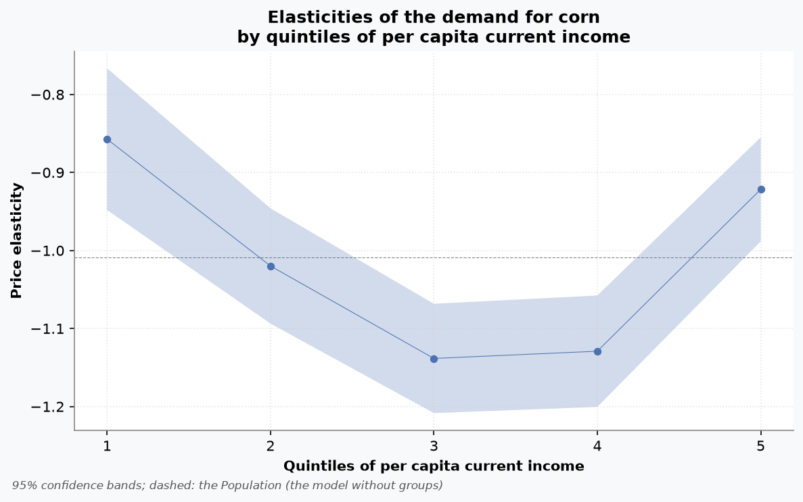
2.6 The four models on the same data
The four models answer on the same households and characteristics (the elasticities of the Population, standard errors in parentheses; the two-part model in its three terms):
| Model | Price | Expenditure |
|---|---|---|
| Log-log, buyers | -1.0088 (0.0175) | -0.1354 (0.0119) |
| Working–Leser, households | -0.9205 (0.0165) | 0.3435 (0.0116) |
| Working–Leser, market | -0.8562 (0.0303) | -0.1882 (0.0639) |
| Two parts: participation | 0.0925 (0.0092) | 0.0218 (0.0061) |
| Two parts: conditional | -1.0088 (0.0175) | -0.1354 (0.0119) |
| Two parts: total | -0.9163 (0.0192) | -0.1137 (0.0130) |
| Deaton’s unit-value model | -0.7889 (0.0237) | 0.2284 (0.0179) |
The conditional elasticity of the two parts is the log-log of the buyers, by construction. The elasticity of participation is positive: where the unit value of corn is higher, more households buy it. The model does not say why, and a behavioural reading would over-claim: a unit value higher in a place can go with a demand higher there for other reasons — rural areas, where corn grain is bought, or the quality of the corn bought — that the characteristics do not hold. The total, \(-0.916\), is less elastic than the buyers alone.
The price elasticities range from \(-0.79\) to \(-1.01\). Deaton’s model, which corrects the unit values for quality and for the errors of measurement, gives the smallest in absolute value, as the removal of the division bias, which pulls a regression on unit values towards \(-1\) (§2.3), would make it. The expenditure elasticities differ more, the households’ mean Working–Leser elasticity being positive (0.34) and the market one negative (\(-0.19\)): the share of corn is small among the richer households, whose spending dominates the market totals. The forms differ too: a share linear in \(\ln x\) in the Working–Leser model, a constant elasticity of the quantity in the log-log model.
2.7 The households that do not buy
The two-part model keeps every household; the non-buyers need a price, and the tobacco literature gives every household the average unit value of its cluster. With the survey design (help, Example 5):
. svyset psu [pweight=sweight], strata(strata)
. sedemand hh_q_corn, model(twopart) price(pcorn) total(hh_current_inc) incpar(quintile) ///
demographics(lnhh age) pcluster(psu) vce(svy)The data check says that the 15,375 households of the sample took the mean price of their PSU, and the tables give the three terms by quintile:
Table 1: Price elasticities: participation + conditional = total
────────────┬───────────────────────────────────────
│ Participation Conditional Total
────────────┼───────────────────────────────────────
Quintile 1 │ 0.3411 -0.7452 -0.4041
Quintile 2 │ 0.0616 -0.8768 -0.8152
Quintile 3 │ 0.0368 -1.0234 -0.9865
Quintile 4 │ 0.0259 -1.0127 -0.9868
Quintile 5 │ 0.0421 -0.8857 -0.8436
Population │ 0.0945 -0.9127 -0.8181
────────────┴───────────────────────────────────────
...
Equal price elasticities across the groups: F(4, 2410) = 7.62, Prob = 0.0000With the price of the cluster, the conditional elasticity of the population is \(-0.91\), against \(-1.01\) with the households’ own unit values (§2.6): the averaging removes the noise of the households’ own unit values, and with it part of the division bias, the price variation used being now that between clusters. The participation term is largest in the first quintile, 0.34, and brings the total elasticity of that quintile to \(-0.40\). The standard errors include the estimation of the cluster prices.
2.8 Deaton’s model
With the unit values of the buyers and the clusters, Deaton’s model (help, Example 9), by area:
. label define area 0 "Urban" 1 "Rural"
. label values rururb area
. sedemand wcorn [pw=sweight], share uvalue(pcorn) total(hh_current_inc) model(uvm) ///
cluster(psu) hgroup(rururb) demographics(lnhh age)──────────────────────────────────────────────────────────────────────────────
Deaton's unit-value model, one good Number of obs = 15,387
Good = wcorn (share) Buyers = 13,607
Price = pcorn (unit value) Groups = 2
Total = hh_current_inc
Groups of = rururb
Price clusters = 2,621 (psu)
Weights = pweight = sweight
Variance = cluster (psu) Elasticities = households
──────────────────────────────────────────────────────────────────────────────
Table 1: Elasticities of the demand: price (quality excluded), expenditure, quality
────────────┬─────────────────────────────────
│ Price Expenditure Quality
────────────┼─────────────────────────────────
Urban │ -0.7912 0.1422 0.0233
Rural │ -0.5735 0.4869 0.0111
Population │ -0.7828 0.2177 0.0212
────────────┴─────────────────────────────────
...
Equal price elasticities across the groups: chi2(1) = 5.19, Prob = 0.0228
Equal expenditure elasticities across the groups: chi2(1) = 51.77, Prob = 0.0000The share wcorn is zero for the households whose
quantity is missing, who enter as non-buyers; those without an area
leave the sample (15,387 households). The rural demand is less price
elastic and more expenditure elastic. The quality elasticities are
small: a richer household buys a slightly dearer corn. On corn alone,
without characteristics, sedemand gives the results of
duvm (Chapter 7):
| Elasticity | sedemand, model(uvm) | duvm corn |
|---|---|---|
| Price, quality excluded | -0.937314 (0.024537) | -0.937314 (0.024537) |
| Expenditure | 0.453987 (0.016293) | 0.453987 (0.016293) |
| Quality | -0.007096 (0.003605) | -0.007096 (0.003605) |
2.9 The graph of the elasticities by group
graph draws the elasticities by group with their
confidence bands, the Student distribution with the design degrees of
freedom under vce(svy). With incpar(), the
income groups are on the horizontal axis and each group of
hgroup() has its curve; with hgroup() alone,
each group has a point and its interval. The Population is the dashed
line. A second panel shows the expenditure elasticities when they differ
across the groups. The options of twoway go in the
parentheses, graph(scheme(daspmono)), and
gname() names the good in the title; the graph is a graph
of the session, which the graph editor opens. The market elasticities of
the Working–Leser model by area and income quintile (help, Example
4):
. sedemand hh_q_corn [pw=sweight], model(wl) price(pcorn) total(hh_current_inc) ///
hgroup(rururb) incpar(quintile) demographics(lnhh age) elasticities(market) graph
The price elasticities differ most in the fifth quintile, where the urban demand is the least elastic. The expenditure elasticities of the groups, near 0.8 up to the fourth quintile, are local responses within the income range of each group, the intercepts of the quintiles carrying the change from one to the next (§2.2.5); the Population, \(-0.19\), is the response of the whole population, whose share of corn falls from the poorest to the richest quintile.
2.10 The modules sids and tobelas
sids and tobelas estimate the log-log model
by svy: regress: Model 1 without groups, Model 2 with the
log price by income group, and, in sids, Model 3 by the
cells of a household group and the income groups. On the buyers, under
the survey design (singleunit(certainty)) and without group
intercepts, sedemand gives their estimates and standard
errors. The model of tobelas, by decile, without
expenditure:
. sedemand hh_q_corn if hh_q_corn > 0, price(pcorn) noincome incpar(decile) nogroupcons ///
demographics(age) vce(svy)| Group | sedemand | tobelas |
|---|---|---|
| Population | -1.10066 (0.02482) | -1.10066 (0.02482) |
| Decile 1 | -0.97252 (0.02573) | -0.97252 (0.02573) |
| Decile 2 | -0.90582 (0.02464) | -0.90582 (0.02464) |
| Decile 3 | -0.89861 (0.02378) | -0.89861 (0.02378) |
| Decile 4 | -0.92094 (0.02340) | -0.92094 (0.02340) |
| Decile 5 | -0.93257 (0.02473) | -0.93257 (0.02473) |
| Decile 6 | -0.94123 (0.02295) | -0.94123 (0.02295) |
| Decile 7 | -0.97796 (0.02231) | -0.97796 (0.02231) |
| Decile 8 | -1.01889 (0.02319) | -1.01889 (0.02319) |
| Decile 9 | -1.07987 (0.02242) | -1.07987 (0.02242) |
| Decile 10 | -1.16406 (0.02145) | -1.16406 (0.02145) |
The first example of sids, by quintile with the income,
is reproduced the same way, with
total(hh_current_inc) hgroup(quintile); the estimates agree
to \(2\times10^{-8}\), the modules
keeping the log price and the log quantity in single precision. The
differences are choices:
sidskeeps the non-buyers in its log-log equation with \(\ln q = 0\), as if a household that buys nothing bought one unit;sedemandestimates the log-log on the buyers and takes the non-buyers into the Working–Leser and two-part models;- without group intercepts, the elasticities of the groups depend on
the unit of the price (§2.2.5);
sedemandincludes them by default; - with
incint(1),sidsgives each group ofhgroup()its expenditure term and each cell its price term;sedemandgives both to the cells; sidsandtobelasuse the survey design by default, throughsvyset;sedemanda robust variance unlessvce(svy).
Their options are read: indcon() and
indcat() as the characteristics, inc(0) as
noincome, incint(1), dregres(1)
and dgra(1) as incint, dregres
and graph; the Excel file of xfil() becomes
saveres().
2.11 Reporting the results
The reporting options of §1.4 apply: stars,
saveres(), dec() and notable;
dregres adds the coefficients of the model by group and of
the model without groups, each equation of the two parts in its own
table. They can be given on replay, sedemand alone, with
graph too:
. sedemand, dregres
. sedemand, graph
. sedemand, stars saveres(sedemand_tables.rtf)The elasticities and their covariance are in e(elas) and
e(V_elas), a row per group and the Population.
test and lincom read e(b) and
e(V), the coefficients of the model by group: the
difference of the price elasticities of two areas of a log-log model
is
. lincom lnp:Rural - lnp:Urban2.12 The dialog box
Statistics ▸ DESYCO ▸ Single-equation demand models
(sedemand), or db sedemand, opens the box. Its
Model tab follows the main tab of the box of sids, preceded
by the data available:
- Model: what the survey records — the demand measured by the quantity, the amount spent or the budget share, the price by a market price or the unit value of the household —, then the variables, whose labels follow these choices, the characteristics, the expenditure term and the group intercepts, and the model; choosing the unit value brings Deaton’s model and the field of its clusters;
- Prices:
pcluster()andpimpute(); - if/in, Weights and SE/Robust;
- Graph: the graph of the elasticities by group, the
name of the good, the options of
twoway, the file; - Reporting: the type of elasticities and the
household size, the confidence level, the decimals, the coefficients,
the stars, the file of
saveres().
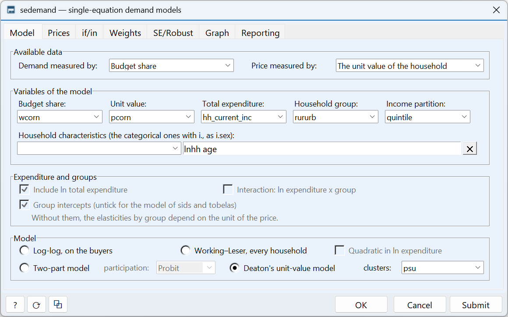
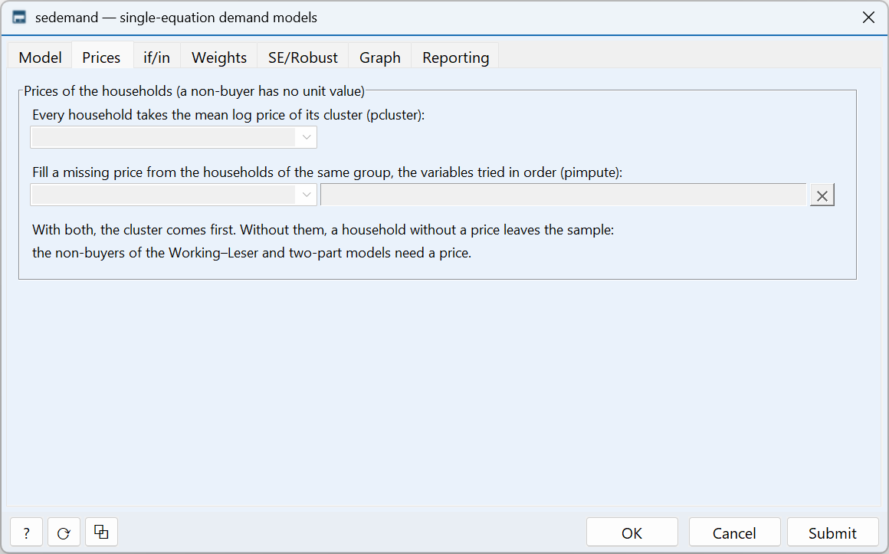
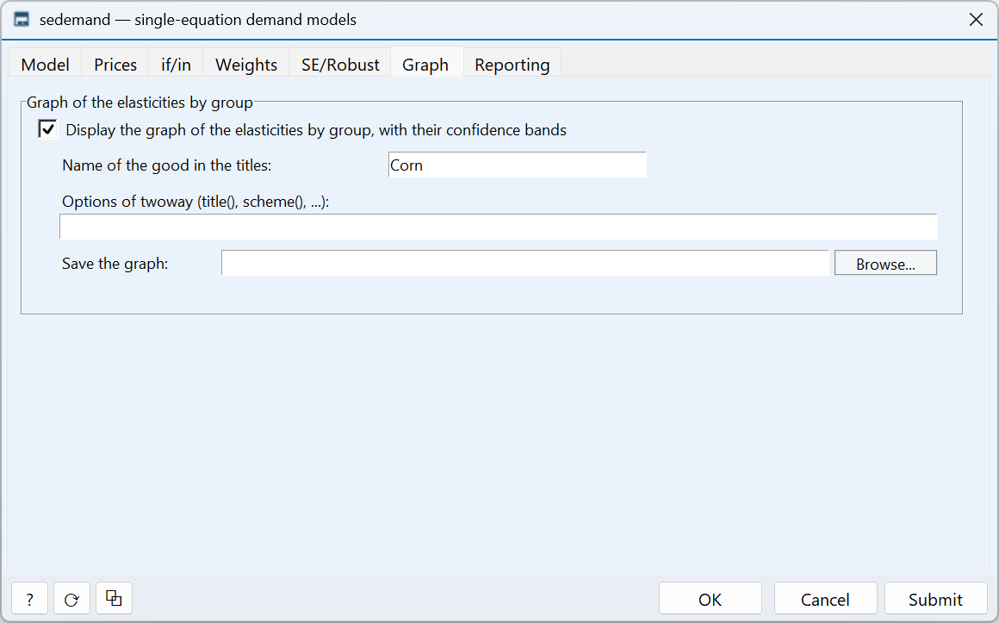
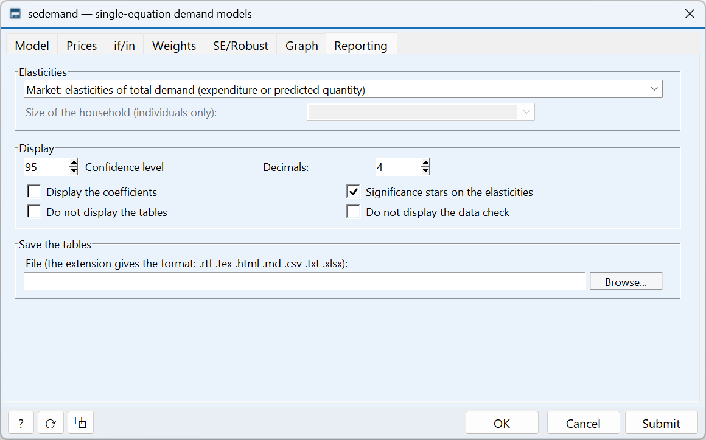
OK runs the command and closes the box;
Submit runs it and keeps the box open. From
help sedemand, run in dialog box under an example
opens the box filled with it.
2.13 Validation
The estimators were checked against Stata: the log-log model against
regress and svy: regress (with the buyers as a
subpopulation), with groups and characteristics; the Working–Leser and
two-part models, their elasticities of the three types and their
variances, against gmm on the stacked moments of the
coefficients and of the ratios, robust and by cluster — to \(10^{-11}\), \(5\times10^{-5}\) for the two parts, whose
reference takes numerical derivatives. The influence of the prices
filled by pcluster() and pimpute() was checked
by brute force, the derivative of the whole procedure in the weight of a
household by central differences, to \(1.6\times10^{-7}\). The command reproduces
tobelas and sids (§2.10) and, with
model(uvm), duvm (§2.8), to the precision of
their storage. The references are kept in AURA’s tests.
2.14 Stored results
sedemand stores in e():
| Result | Content |
|---|---|
e(N), e(N_buy),
e(N_groups) |
households, buyers, groups |
e(N_clust), e(N_strata),
e(N_psu), e(df_r) |
the clusters (or the price clusters of Deaton’s model), the design |
e(chi2_p), e(df_p),
e(p_p) |
the test of equal price elasticities across the groups
(e(F_p)… under vce(svy)); _x for
the expenditure |
e(elas), e(se_elas) |
the elasticities and their standard errors, a row per group and the Population; columns price, income (and quality for Deaton’s model) |
e(elas_part), e(elas_cond) |
in the two-part model, the participation and conditional elasticities |
e(b_elas), e(V_elas) |
every elasticity in a row, and their covariance |
e(b), e(V), e(b_pooled),
e(V_pooled) |
the coefficients of the model by group and of the model without groups |
e(model), e(depvar_type),
e(price_type), e(elasticities),
e(groups) |
the model, the measures of the demand and of the price, the type, the labels of the groups |
help sedemand lists every result.
3 The linear expenditure system and the Cobb-Douglas demands
This chapter presents the first complete demand system, the linear
expenditure system (LES) of Stone (1954), and the Cobb-Douglas demands,
of which it is the translation (§1.2), estimated by eles.
The household first buys committed quantities of the goods, then shares
what remains of its budget in fixed proportions. The models are those of
Stata’s demandsys (StataCorp 2023), demographics included,
whose estimates eles reproduces; the variances and the
elasticities follow the rules of DESYCO. eles shares its
engine with etranslog, the translog systems of the next
chapter, which add a flexible core to the same translation.
The notation is that of §1.5: goods \(i, j = 1,\dots,J\), the last one closing the budget, prices \(p_i\) and log prices \(\ell_i\), total expenditure \(x\), budget shares \(w_i\), characteristics \(z\). The parameters of the chapter are the marginal budget shares \(\beta_i\) of the LES, the budget shares \(\alpha_i\) of the Cobb-Douglas demands, the committed quantities \(q^0_i\) and the supernumerary expenditure
\[\tilde x = x - \sum_j p_j q^0_j ,\]3.1
the budget left once the committed quantities are bought. The predicted shares \(f_{ih}\) and the weights \(\tilde\omega_h\) of a mean elasticity are those of Chapter 5.
3.1 When to use it
The LES needs the data of the other systems: the budget shares of
goods that exhaust the budget, and prices that vary across households,
completed by pimpute() for the households that do not buy.
It has few parameters, \(2J-1\) without
characteristics — nine for the five foods of the examples — and they
read directly: the committed quantities are the baskets a household buys
whatever its budget, the marginal budget shares say how it spends a unit
more. It is the model of a first estimation, of a benchmark, or of a
simulation that needs few, interpretable parameters.
Its preferences are additive, and this ties its elasticities (Deaton 1974): with positive committed quantities and marginal shares between zero and one, every own-price elasticity lies between \(-1\) and 0, every cross-price elasticity is negative, every compensated cross-price elasticity positive, and the price elasticities move with the expenditure elasticities. No good is a complement of another, no demand is elastic. The generalized translog of Chapter 4 contains the LES as a special case, and the test of the one against the other (§4.6) says whether the data accept these restrictions; on the food data of the examples, they do not.
The Cobb-Douglas demands, the LES without committed quantities, go further: every budget share is a constant, every expenditure elasticity is one and every own-price elasticity \(-1\). They are a benchmark, the case of unit elasticities, rather than a model to estimate elasticities.
3.2 The models
- \(q_i\): the quantity of good \(i\) consumed
For household \(h\), the LES writes the budget shares
\[w_i = \frac{p_i q^0_i}{x} + \beta_i\,\frac{\tilde x}{x} + u_i ,\qquad \sum_i \beta_i = 1,\]3.2
\(u_i\) the error: the household spends \(p_i q^0_i\) on the committed quantity of good \(i\) and the share \(\beta_i\) of its supernumerary expenditure. It is the demand of the Stone–Geary utility \(\sum_i\beta_i\ln(q_i - q^0_i)\) (§1.2). The Cobb-Douglas demands are the case \(q^0_i = 0\), \(w_i = \alpha_i\) with \(\sum_i\alpha_i = 1\).
Characteristics. As in demandsys, the
characteristics of the LES translate the committed quantities,
\[q^0_i = \mu_i + \nu_i'z ,\]3.3
\(\mu_i\) the committed quantity of the household with \(z = 0\) and \(\nu_i\) the effect of each characteristic: a child commits a quantity of each good, and so does an adult (Pollak and Wales 1981). In the Cobb-Douglas demands, where there is nothing to translate, they shift the shares, \(w_i = \alpha_i + \tau_i'z\), the \(\tau_i\) summing to zero over the goods. The parameters of the last good follow from the restrictions, \(\beta_J = 1 - \sum_{i<J}\beta_i\) and so on; the committed quantities \(\mu_i\) and \(\nu_i\) are free for every good.
The supernumerary expenditure. A household whose
committed expenditure exceeds its total expenditure has \(\tilde x < 0\). Its shares are still
defined, and eles keeps it; a note counts such households.
The LES of the food data with the characteristics has two of them, which
demandsys keeps too.
3.2.1 The elasticities
With \(a_i = p_i q^0_i / x\) and \(s = \tilde x / x\), the share is \(w_i = a_i + \beta_i s\) and its derivatives (§1.5) are
\[w^x_i = -a_i + \beta_i(1 - s),\qquad w^p_{ij} = \mathbf{1}\{i=j\}\,a_i - \beta_i\,a_j .\]3.4
The elasticities of a household follow, \(e_i = 1 + w^x_i/f_i\), \(e_{ij} = -\mathbf{1}\{i=j\} + w^p_{ij}/f_i\) and \(e^*_{ij} = e_{ij} + f_j e_i\); in the quantities \(q_i = f_i x / p_i\) of the model,
\[e_i = \frac{\beta_i}{f_i},\qquad e_{ii} = -1 + (1 - \beta_i)\,\frac{q^0_i}{q_i},\qquad e_{ij} = -\beta_i\,\frac{p_j q^0_j}{p_i q_i}\quad (j \ne i).\]3.5
The own-price elasticity depends on the part of the consumption that is committed. A household that buys little more than its committed quantity responds little to the price, \(e_{ii}\) near \(-\beta_i\); as its budget grows, the free part dominates and \(e_{ii}\) tends to \(-1\) (§3.7). In the Cobb-Douglas demands, \(e_i = 1\), \(e_{ij} = -\mathbf{1}\{i=j\}\) and \(e^*_{ij} = -\mathbf{1}\{i=j\} + f_j\), for every household.
3.2.2 Which elasticity: household, individual or market
The types are those of equaids (§5.2.4): the ratios of
weighted totals of the households (households, the
default), of the individuals (hhsize(), the whole
estimation then weighted by \(\omega_h
n_h\)) and of the market (weights \(\omega_h x_h\)); the household at the
weighted means of \(\ell\), \(\ln x\) and \(z\) (reference); and the mean
of the household elasticities, each household counting by its weight
(hhmean). All are computed, elasticities()
chooses the one displayed, and they are stored in e(). On
the food data, with the two characteristics (standard errors in
parentheses):
| Good | Type | Expenditure | Own price |
|---|---|---|---|
| Dairy | households | 1.1137 (0.0205) | -0.9530 (0.0170) |
| market | 1.0842 (0.0180) | -0.9577 (0.0159) | |
| reference | 1.0924 (0.0213) | -0.9509 (0.0188) | |
| hhmean | 1.1337 (0.0415) | -0.9523 (0.0176) | |
| Proteins | households | 1.0432 (0.0143) | -0.9324 (0.0140) |
| market | 1.0320 (0.0125) | -0.9438 (0.0132) | |
| reference | 1.0344 (0.0146) | -0.9365 (0.0154) | |
| hhmean | 1.0472 (0.0147) | -0.9328 (0.0139) | |
| Fruitveg | households | 1.0117 (0.0177) | -0.8920 (0.0176) |
| market | 1.0334 (0.0155) | -0.9280 (0.0160) | |
| reference | 1.0360 (0.0183) | -0.9187 (0.0186) | |
| hhmean | 1.0221 (0.0186) | -0.8982 (0.0173) | |
| Cereals | households | 0.7751 (0.0186) | -0.6842 (0.0152) |
| market | 0.7958 (0.0171) | -0.7211 (0.0146) | |
| reference | 0.7793 (0.0184) | -0.6977 (0.0156) | |
| hhmean | 0.8001 (0.0172) | -0.7081 (0.0137) | |
| Other | households | 0.8718 (0.0249) | -0.7632 (0.0221) |
| market | 0.8775 (0.0229) | -0.7901 (0.0216) | |
| reference | 0.8728 (0.0246) | -0.7752 (0.0230) | |
| hhmean | 0.8911 (0.0230) | -0.7796 (0.0197) |
The types differ little on these data, the shares of the foods varying less with expenditure than the staples of the Mexican cereals do (§5.2.4). The mean of the household elasticities is estimable here: the predicted shares of the LES stay away from zero for nearly every household.
3.3 Estimation and variance
eles estimates the system by iterated feasible
generalized nonlinear least squares, the estimator of §5.3: Gauss–Newton
steps on the first \(J-1\) shares at
the inverse of the covariance \(\Sigma\) of the residuals, \(\Sigma\) updated until neither the
parameters nor it change. This is the Gaussian quasi-maximum-likelihood
estimator of demandsys, and the log likelihood is its. The
Jacobian of the shares is analytic, and so are their second derivatives.
The iterations start from the mean shares, the committed quantities at
zero, or from from(), a vector of free parameters such as
e(b_free); they stop when the relative change of the
parameters and of \(\Sigma\) falls
below tolerance() (\(10^{-10}\)), or after
iterate() steps (500). Analytic and sampling weights are
normalised to sum to the number of households, frequency and importance
weights used as they stand.
The variances follow §5.4. The influence function of each household
comes from the observed Jacobian of the stacked estimating equations of
the parameters and of \(\Sigma\), the
curvature of the shares included; that of an elasticity of the
households, the individuals or the market adds the sampling of the
household in the two totals of the ratio; that of the reference
household, the sampling of the means; that of the household mean, the
deviation of the household from the mean. With pimpute(), a
household that gives its price to a group moves the prices it fills, and
the derivatives of the estimating equations and of the elasticities in
the log prices carry this effect. The influence functions give
vce(robust) (the default), vce(cluster
clustvar) and vce(svy);
vce(conventional) is the variance of
demandsys, the inverse of the Gauss–Newton information, for
the parameters, the elasticities keeping their robust standard errors.
vce(bootstrap) repeats the whole procedure — the prices
filled, the system, the elasticities — on resamples of the households or
of the PSUs.
3.3.1 demandsys
eles gives the estimates, \(\Sigma\), the log likelihood and the
conventional standard errors of demandsys; its robust
standard errors differ. On the LES with the characteristics:
| Parameter | Estimate | demandsys | SE conv. | demandsys conv. | SE robust | demandsys robust |
|---|---|---|---|---|---|---|
| beta:Dairy | 0.1657 | 0.1657 | 0.0024 | 0.0024 | 0.0032 | 0.0034 |
| beta:Proteins | 0.4170 | 0.4170 | 0.0043 | 0.0043 | 0.0059 | 0.0057 |
| mu:Dairy | -0.3933 | -0.3933 | 0.1640 | 0.1640 | 0.3470 | 0.3458 |
| mu:Fruitveg | 1.0109 | 1.0109 | 0.3046 | 0.3046 | 0.5278 | 0.5286 |
| Nu:Dairy#n_kids | 0.4332 | 0.4332 | 0.1601 | 0.1601 | 0.3316 | 0.3304 |
| Nu:Fruitveg#n_adults | 0.8436 | 0.8436 | 0.2271 | 0.2271 | 0.4509 | 0.4489 |
| largest gap, all parameters | 6.6% |
The robust variance of demandsys, that of
nlsur, is the sandwich built on the Gauss–Newton matrix
with \(\Sigma\) held fixed: it leaves
out the curvature of the shares, which the residuals multiply, and the
estimation of \(\Sigma\). Both vanish
in expectation when the model is right, and the robust variance is there
for when it may not be. eles keeps them, as
equaids does (§5.4); the difference reaches 6.6% on the LES
and a fifth on the translog (§4.3.1). That the influence functions of
eles are the exact derivatives of the estimator was checked
by reweighting a household and estimating again.
The elasticities differ in two places. The averages of
estat elasticities are the mean of the household
elasticities, the type hhmean of eles, and its
atmeans evaluates at the means of the levels of the prices
and of expenditure, the reference household of eles at the
means of their logarithms. Their standard errors treat the predicted
shares as data — except, for the LES, those of the expenditure and
uncompensated elasticities — whereas eles differentiates
them too: for the Cobb-Douglas demands, demandsys gives the
compensated elasticities, \(-\mathbf{1}\{i=j\}
+ f_j\), a standard error of zero.
3.4 A first estimation
The examples use the food data of Stata’s demandsys,
food_consumption.dta (§1.6): the budget shares of 4,160
households on five groups of foods, their prices, the total expenditure
on food and the numbers of children and adults. The help of
eles reads them from the site of Stata Press and gives the
goods clear names with snames():
. use "https://www.stata-press.com/data/r19/food_consumption", clear
. eles w_dairy w_proteins w_fruitveg w_flours w_misc, ///
prices(p_dairy p_proteins p_fruitveg p_flours p_misc) expenditure(expfd) ///
snames(Dairy Proteins Fruitveg Cereals Other)After the data check, every observation conforming, the header and the parameters, the constrained ones written out (the last marginal budget share is one minus the others):
──────────────────────────────────────────────────────────────────────────────
Linear expenditure system, iterated FGNLS Number of obs = 4,160
Goods = 5 Demographics = 0
Parameters = 9 Log likelihood = 18948.64
Variance = robust Elasticities = households
Converged in 77 iteration(s) Execution time = 0.52 s
──────────────────────────────────────────────────────────────────────────────
Table 00: Estimated parameters
───────────────────────────────┬────────────────────────────────────────────────────────────────────
│ Coefficient Std. err. z P>|z| [95.0% lo 95.0% hi]
───────────────────────────────┼────────────────────────────────────────────────────────────────────
beta (marginal budget shares) │
Dairy │ 0.165089 0.002274 72.595 0.0000 0.160632 0.169547
Proteins │ 0.410823 0.003875 106.014 0.0000 0.403228 0.418418
Fruitveg │ 0.226241 0.002666 84.860 0.0000 0.221015 0.231466
Cereals │ 0.094908 0.001526 62.214 0.0000 0.091918 0.097898
Other │ 0.102939 0.001901 54.138 0.0000 0.099212 0.106665
mu (committed quantities) │
Dairy │ 0.179407 0.159812 1.123 0.2616 -0.133819 0.492633
Proteins │ 0.697544 0.127350 5.477 0.0000 0.447942 0.947145
Fruitveg │ 2.368492 0.218393 10.845 0.0000 1.940450 2.796534
Cereals │ 0.421574 0.034851 12.096 0.0000 0.353267 0.489882
Other │ 0.374218 0.042850 8.733 0.0000 0.290233 0.458204
───────────────────────────────┴────────────────────────────────────────────────────────────────────Of a unit more of supernumerary expenditure, the households spend 41% on proteins, 23% on fruits and vegetables and 17% on dairy. The committed quantities are in the units of the prices: at the mean prices, the committed basket costs 3.8, 8% of the mean food budget of 48. The tables of the shares and of the elasticities follow:
Table 2: Expenditure elasticities, d ln q / d ln x
────────────┬─────────────────────────────────────────────────
│ Dairy Proteins Fruitveg Cereals Other
────────────┼─────────────────────────────────────────────────
Elasticity │ 1.1109 1.0280 0.9409 0.9170 0.9549
────────────┴─────────────────────────────────────────────────
Table 3: Uncompensated price elasticities, d ln q_i / d ln p_j (rows i: goods, columns j: prices)
──────────┬───────────────────────────────────────────────────
│ Dairy Proteins Fruitveg Cereals Other
──────────┼───────────────────────────────────────────────────
Dairy │ -0.9853 -0.0403 -0.0449 -0.0217 -0.0186
Proteins │ -0.0027 -0.9465 -0.0415 -0.0201 -0.0172
Fruitveg │ -0.0025 -0.0342 -0.8700 -0.0184 -0.0158
Cereals │ -0.0024 -0.0333 -0.0370 -0.8289 -0.0154
Other │ -0.0025 -0.0347 -0.0386 -0.0187 -0.8605
──────────┴───────────────────────────────────────────────────each followed by its standard errors. The restrictions of the LES are visible: the expenditure elasticities stay near one, the own-price elasticities lie between \(-1\) and \(-0.8\), and every cross-price elasticity is negative and small — for a household, \(-\beta_i p_j q^0_j/(p_i q_i)\), the good of the column entering through its committed expenditure.
3.5 The characteristics
The numbers of children and adults translate the committed quantities (help, Example 2):
. eles w_dairy w_proteins w_fruitveg w_flours w_misc, ///
prices(p_dairy p_proteins p_fruitveg p_flours p_misc) expenditure(expfd) ///
demographics(n_kids n_adults) snames(Dairy Proteins Fruitveg Cereals Other) compensated Nu (characteristics) │
Dairy#n_kids │ 0.433220 0.331589 1.306 0.1914 -0.216683 1.083122
Proteins#n_kids │ -0.068029 0.220823 -0.308 0.7580 -0.500834 0.364777
Fruitveg#n_kids │ -0.794565 0.283814 -2.800 0.0051 -1.350829 -0.238301
Cereals#n_kids │ 0.392354 0.046185 8.495 0.0000 0.301834 0.482874
Other#n_kids │ 0.356353 0.074173 4.804 0.0000 0.210976 0.501730
Dairy#n_adults │ 0.485667 0.309990 1.567 0.1172 -0.121903 1.093237
Proteins#n_adults │ 0.866932 0.196865 4.404 0.0000 0.481083 1.252780
Fruitveg#n_adults │ 0.843552 0.450935 1.871 0.0614 -0.040264 1.727368
Cereals#n_adults │ 0.357621 0.047474 7.533 0.0000 0.264574 0.450668
Other#n_adults │ 0.263969 0.066901 3.946 0.0001 0.132846 0.395092An adult commits 0.87 units of proteins and a child none; a child commits 0.39 units of cereals, as much as an adult. The log likelihood rises from 18,948.6 to 19,231.7, a likelihood-ratio statistic of 566 for ten parameters. The compensated elasticities are positive outside the diagonal, every good a substitute of every other, as the LES imposes:
Table 4: Compensated price elasticities, at constant utility (rows i: goods, columns j: prices)
──────────┬───────────────────────────────────────────────────
│ Dairy Proteins Fruitveg Cereals Other
──────────┼───────────────────────────────────────────────────
Dairy │ -0.7873 0.3936 0.2297 0.0756 0.0885
Proteins │ 0.1465 -0.5153 0.2152 0.0708 0.0829
Fruitveg │ 0.1420 0.3575 -0.6486 0.0686 0.0804
Cereals │ 0.1088 0.2739 0.1599 -0.6042 0.0616
Other │ 0.1224 0.3081 0.1798 0.0591 -0.6694
──────────┴───────────────────────────────────────────────────3.6 The Cobb-Douglas demands
model(cd) estimates the Cobb-Douglas demands, the
characteristics shifting the shares (help, Example 4):
. eles w_dairy w_proteins w_fruitveg w_flours w_misc, ///
prices(p_dairy p_proteins p_fruitveg p_flours p_misc) expenditure(expfd) ///
model(cd) demographics(n_kids n_adults) snames(Dairy Proteins Fruitveg Cereals Other)Table 00 gives the budget shares of the household without children or
adults, alpha, and their shifts, Theta (the
name of demandsys), which sum to zero over the goods. The
elasticities need no estimation: one for the expenditure, \(-1\) for the own price, zero for the cross
prices; the compensated ones are \(-\mathbf{1}\{i=j\} + f_j\), whose standard
errors come from those of the shares. The model is a benchmark: a
simulation with unit elasticities treats every good alike.
3.7 The elasticities of each household
predict gives the fitted shares and the elasticities of
each household, at its own prices, expenditure and characteristics, with
stdp their standard errors, the uncertainty of the
parameters alone. After the estimation with the characteristics, the
own-price elasticity of dairy, then its average by level of expenditure
with cnpe, the nonparametric regression of DAAP:
. predict e_les, uncompensated good(Dairy) price(Dairy)
. label variable e_les "LES"
. cnpe e_les, xvar(expfd) min(5) max(100) ///
ytitle("Own-price elasticity of dairy (uncompensated)") xtitle("Total expenditure on food")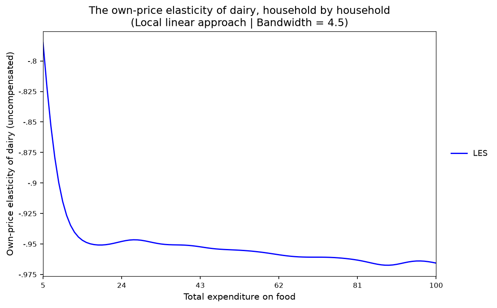
The curve is the formula of §3.2.1, \(e_{ii} = -1 + (1 - \beta_i)\,q^0_i/q_i\):
at a food budget of 5, the committed quantity of dairy is a large part
of what the household buys and the elasticity is near \(-0.8\); from a budget of 20, it is close to
\(-0.95\), and it tends to \(-1\) as the budget grows. The LES cannot
let the richer households respond less than the poorer ones; the
translog of Chapter 4 can, and on these data it does (§4.7). The mean of
the household elasticities, weighted by \(\omega_h\), is the type
hhmean.
3.8 Reporting the results
The reporting options of §1.4 apply — stars,
saveres(), dec(), notable — with
compensated for Table 4, dislas(0) to leave
out the last good, and dregres(0) to hide Table 00,
displayed by default. They can be given on replay, eles
alone, with elasticities() to display another type without
estimating again:
. eles, elasticities(market) dregres(0)
. eles, compensated stars saveres(eles_tables.rtf)test and lincom read e(b) and
e(V), the parameters written out, named
beta:good, mu:good and
Nu:good#characteristic
(alpha: and Theta: for the Cobb-Douglas
demands): the difference of two marginal budget shares is
. lincom beta:Dairy - beta:Cereals3.9 The dialog box
Statistics ▸ DESYCO ▸ LES and Cobb-Douglas demand systems
(eles), or db eles, opens the box of
eles and etranslog, laid out as the box of
equaids (§5.10); the model chosen writes eles
or etranslog, and db etranslog opens it on the
translog:
- Model: the budget shares, the prices and
expenditure, in levels or logarithms, the short names, the model —
Cobb-Douglas, LES, translog or generalized translog —, the
characteristics, whose label follows the model, and the variables of
pimpute(); - if/in and Weights;
- SE/Robust: robust, by cluster, the survey design, conventional, or the bootstrap;
- Estimation: the tolerance and the number of iterations;
- Reporting: the type of elasticities and the
household size, the confidence level, the decimals, the compensated
elasticities, the stars, the tables shown, the file of
saveres().
OK runs the command and closes the box;
Submit runs it and keeps the box open. From
help eles, run in dialog box under an example
opens the box filled with it.
3.10 Validation
eles and etranslog were checked against
demandsys (StataNow 19.5) on its own data, the eight cases
of its four models without and with the characteristics, and its
examples: the estimates to \(5\times10^{-7}\), the precision of its
convergence, the log likelihood, \(\Sigma\) and the conventional standard
errors to \(10^{-6}\); the elasticities
averaged over the households, at the means and on a subsample, and those
of each household (estat elasticities, generate()). Its
standard errors of the elasticities and its robust variance were
reproduced to \(10^{-6}\) with the
simplifications it makes (§3.3.1). The derivatives of the shares in the
parameters and in the data were checked by central differences, and the
influence functions of the parameters, of the elasticities of the four
types and of the prices filled by pimpute() by reweighting
a household — a donor or a recipient — and running the whole procedure
again, to \(10^{-10}\). The references
are kept in AURA’s tests.
3.11 Stored results
eles stores in e():
| Result | Content |
|---|---|
e(N), e(N_w), e(ll),
e(k) |
households, sum of the weights, log likelihood, free parameters |
e(iter), e(converged) |
iterations, convergence |
e(n_neg_xtilde), e(n_shout) |
households with \(\tilde x \le 0\); with a predicted share outside \([0, 1]\) |
e(N_clust), e(N_strata),
e(N_psu), e(df_r) |
the clusters, the design |
e(b), e(V) |
the parameters written out and their variance |
e(b_free), e(V_free),
e(V_model), e(Sigma) |
the free parameters, their variance, their conventional variance, the covariance of the residuals |
e(elas_x), e(elas_u),
e(elas_c) |
the market elasticities; suffixes w (households or
individuals), m (reference), h (household
mean) |
e(V_elas_x)… |
their covariances, with the same suffixes |
e(shares)… |
the predicted shares of each type |
e(model), e(vce),
e(elasticities) |
the model, the variance, the type displayed |
help eles lists every result.
4 The translog demand system
This chapter presents the translog demand system of Christensen,
Jorgenson and Lau (1975), a flexible functional form (§1.2), and its
generalized version with committed quantities, estimated by
etranslog. The models are those of Stata’s
demandsys (translog and
gtranslog), whose estimates etranslog
reproduces; the command shares its engine, its options, its elasticities
and its variances with eles (Chapter 3), and the sections
below give what differs. The notation is that of Chapter 3: committed
quantities \(q^0_i\), supernumerary
expenditure \(\tilde x\), \(a_i = p_i q^0_i/x\) and \(s = \tilde x/x\); the parameters of the
translog are \(\alpha_i\) and the
symmetric matrix of the \(\gamma_{ij}\), and \(\tilde\ell_j = \ell_j - \ln\tilde x\) is
the log price relative to the supernumerary expenditure.
4.1 When to use it
The translog takes the data of the LES and lets its elasticities vary: from one household to another with the prices and the budget, and across goods without the ties of additive preferences — a good can be a complement of another, a demand can be elastic. It has \((J-1) + J(J+1)/2\) parameters without characteristics, 19 for the five foods, and the generalized translog \(J\) more, the committed quantities. The generalized translog contains the basic translog (\(\mu_i = 0\)) and the LES (\(\gamma_{ij} = 0\)), and the likelihood-ratio tests say which the data accept (§4.6).
The translog of demandsys restricts the matrix of the
\(\gamma_{ij}\) to be symmetric, not
its rows to sum to zero: the budget shares then depend on the level of
expenditure, the Engel curves are not those of homothetic preferences.
It differs from AIDS (Chapter 5), whose price index is a translog but
whose shares are linear in log real expenditure.
4.2 The models
The indirect utility of Christensen, Jorgenson and Lau (1975), written in the prices relative to the supernumerary expenditure,
\[\ln V = -\sum_i\alpha_i\,\tilde\ell_i - \tfrac12\sum_i\sum_j\gamma_{ij}\,\tilde\ell_i\tilde\ell_j ,\]4.1
gives by Roy’s identity the budget shares
\[w_i = a_i + s\,\phi_i + u_i,\qquad \phi_i = \frac{\alpha_i + \sum_j\gamma_{ij}\tilde\ell_j}{1 + \sum_j b_j\tilde\ell_j},\qquad b_j = \sum_k\gamma_{kj},\]4.2
with \(\sum_i\alpha_i = 1\) and \(\gamma_{ij} = \gamma_{ji}\): the share of the committed expenditure, plus the share \(\phi_i\) of the supernumerary expenditure. In the basic translog, \(q^0_i = \nu_i'z\), zero without characteristics, so that \(s = 1\) and \(w_i = \phi_i\) in the prices relative to \(x\); in the generalized translog, \(q^0_i = \mu_i + \nu_i'z\). The characteristics translate the committed quantities, as in the LES. The model needs \(\tilde x > 0\) for every household, \(\ln\tilde x\) entering the shares: the iterations reject a step that would make the committed expenditure of a household exceed its total expenditure.
The form covers the LES: with \(\gamma_{ij}
= 0\), \(\phi_i = \alpha_i\),
the marginal budget share. It is the core that eles and
etranslog share, \(\phi_i =
\beta_i\) for the LES and the ratio above for the translog.
4.2.1 The elasticities
With \(\phi_{ij} = \partial\phi_i/\partial\tilde\ell_j = (\gamma_{ij} - \phi_i b_j)/(1 + \sum_k b_k\tilde\ell_k)\) and \(\psi_i = \phi_i - \sum_j\phi_{ij} = \partial(\tilde x\phi_i)/\partial\tilde x\), the share of an additional unit of supernumerary expenditure spent on good \(i\), the derivatives of the share are
\[w^x_i = -a_i - s\,\phi_i + \psi_i,\qquad w^p_{ij} = \mathbf{1}\{i=j\}\,a_i - a_j\,\psi_i + s\,\phi_{ij} ,\]4.3
and the elasticities of a household follow as in every model of shares (§1.5). They reduce to those of the LES when \(\gamma_{ij} = 0\). The types — households, individuals, market, reference, household mean — are those of §3.2.2. On the food data, with the two characteristics:
| Good | Type | Expenditure | Own price |
|---|---|---|---|
| Dairy | households | 0.9081 (0.0192) | -0.7918 (0.0247) |
| market | 0.9069 (0.0189) | -0.7761 (0.0270) | |
| reference | 0.8953 (0.0197) | -0.7935 (0.0253) | |
| hhmean | 0.9055 (0.0191) | -0.7857 (0.0253) | |
| Proteins | households | 1.0909 (0.0115) | -0.6785 (0.0175) |
| market | 1.0854 (0.0100) | -0.6679 (0.0203) | |
| reference | 1.0972 (0.0122) | -0.6856 (0.0178) | |
| hhmean | 1.0935 (0.0160) | -0.6745 (0.0197) | |
| Fruitveg | households | 0.9718 (0.0167) | -0.7041 (0.0209) |
| market | 0.9552 (0.0171) | -0.6625 (0.0234) | |
| reference | 0.9759 (0.0168) | -0.7169 (0.0209) | |
| hhmean | 0.9625 (0.0319) | -0.6886 (0.0325) | |
| Cereals | households | 0.8492 (0.0209) | -0.5215 (0.0186) |
| market | 0.8842 (0.0209) | -0.5342 (0.0193) | |
| reference | 0.8512 (0.0211) | -0.5289 (0.0187) | |
| hhmean | 0.8632 (0.0197) | -0.5040 (0.0233) | |
| Other | households | 0.9993 (0.0245) | -0.4858 (0.0240) |
| market | 1.0097 (0.0242) | -0.4895 (0.0265) | |
| reference | 0.9871 (0.0248) | -0.4884 (0.0246) | |
| hhmean | 0.9990 (0.0238) | -0.4261 (0.1292) |
The own-price elasticities are smaller in absolute value than those of the LES (§3.2.2), from \(-0.79\) for dairy to \(-0.49\) for the other foods; the data prefer the translog (§4.6), which lifts the restrictions of additive preferences.
4.3 Estimation and variance
The estimator, the convergence, the weights, pimpute()
and the variances are those of eles (§3.3). The second
derivatives of the translog enter the curvature of the observed
Jacobian, and its robust standard errors differ more from those of
demandsys.
4.3.1 demandsys
The estimates, \(\Sigma\), the log
likelihood and the conventional standard errors are those of
demandsys; on the translog with the characteristics, the
robust standard errors:
| Parameter | Estimate | demandsys | SE conv. | demandsys conv. | SE robust | demandsys robust |
|---|---|---|---|---|---|---|
| alpha:Dairy | 0.1770 | 0.1770 | 0.0092 | 0.0092 | 0.0119 | 0.0117 |
| Gamma:Dairy#Dairy | 0.0255 | 0.0255 | 0.0027 | 0.0027 | 0.0042 | 0.0038 |
| Gamma:Proteins#Proteins | 0.1167 | 0.1167 | 0.0080 | 0.0080 | 0.0100 | 0.0097 |
| Gamma:Dairy#Proteins | -0.0170 | -0.0170 | 0.0034 | 0.0034 | 0.0049 | 0.0043 |
| Nu:Fruitveg#n_kids | -2.8155 | -2.8155 | 0.3166 | 0.3166 | 0.5015 | 0.5034 |
| Nu:Fruitveg#n_adults | -1.1175 | -1.1175 | 0.2331 | 0.2331 | 0.3417 | 0.3363 |
| largest gap, all parameters | 22.6% |
The gap reaches 22.6%. It comes from the curvature of the shares,
which the Gauss–Newton matrix of nlsur leaves out; the
estimation of \(\Sigma\) moves the
standard errors by up to 3% more. The influence functions of
etranslog are the derivatives of the estimator itself: when
the weight of a household changes by a small amount and the system is
estimated again, the estimates move by its influence function to \(10^{-11}\), whereas the Gauss–Newton
version misses the move by up to 14% of its size. The standard errors of
the elasticities differ as for the LES: demandsys treats
the predicted shares as data in all of them.
4.4 A first estimation
The translog of the food data (help, Example 1):
. etranslog w_dairy w_proteins w_fruitveg w_flours w_misc, ///
prices(p_dairy p_proteins p_fruitveg p_flours p_misc) expenditure(expfd) ///
snames(Dairy Proteins Fruitveg Cereals Other)──────────────────────────────────────────────────────────────────────────────
Translog demand system, iterated FGNLS Number of obs = 4,160
Goods = 5 Demographics = 0
Parameters = 19 Log likelihood = 19621.72
Variance = robust Elasticities = households
Converged in 53 iteration(s) Execution time = 1.69 s
──────────────────────────────────────────────────────────────────────────────
...
Table 3: Uncompensated price elasticities, d ln q_i / d ln p_j (rows i: goods, columns j: prices)
──────────┬───────────────────────────────────────────────────
│ Dairy Proteins Fruitveg Cereals Other
──────────┼───────────────────────────────────────────────────
Dairy │ -0.8291 -0.1517 -0.0083 0.0044 0.0243
Proteins │ -0.0717 -0.6684 -0.1349 -0.0896 -0.0916
Fruitveg │ 0.0041 -0.1605 -0.7157 0.0077 -0.0341
Cereals │ 0.0010 -0.3227 -0.0057 -0.5322 -0.1371
Other │ 0.0166 -0.3498 -0.1197 -0.1404 -0.4843
──────────┴───────────────────────────────────────────────────Table 00 lists the five \(\alpha_i\)
and the fifteen \(\gamma_{ij}\) of the
upper triangle, named
Gamma:good#good. With as
many parameters as the LES with the characteristics, 19, the translog
without them reaches a log likelihood of 19,621.7 against 19,231.7. The
price elasticities are no longer tied: the price of proteins lowers the
demand of every other food, by a quarter to a half of its effect on
proteins, and the price of dairy barely moves the other demands.
4.5 The generalized translog and the characteristics
With the committed quantities and the characteristics, the elasticities of the market (help, Example 2):
. etranslog w_dairy w_proteins w_fruitveg w_flours w_misc, ///
prices(p_dairy p_proteins p_fruitveg p_flours p_misc) expenditure(expfd) ///
model(gtranslog) demographics(n_kids n_adults) snames(Dairy Proteins Fruitveg Cereals Other) ///
elasticities(market) compensatedTable 4: Compensated price elasticities, at constant utility (rows i: goods, columns j: prices)
──────────┬───────────────────────────────────────────────────
│ Dairy Proteins Fruitveg Cereals Other
──────────┼───────────────────────────────────────────────────
Dairy │ -0.6193 0.1983 0.1815 0.1039 0.1356
Proteins │ 0.0720 -0.2122 0.0909 0.0241 0.0251
Fruitveg │ 0.1167 0.1610 -0.4333 0.0975 0.0581
Cereals │ 0.1503 0.0961 0.2193 -0.4490 -0.0167
Other │ 0.1814 0.0926 0.1209 -0.0155 -0.3793
──────────┴───────────────────────────────────────────────────The compensated demand of proteins responds little to its own price, \(-0.21\). The compensated cross elasticity of cereals in the price of the other foods is negative, \(-0.017\), which the LES cannot produce; here it is within its standard error, 0.017, and the data do not tell it from zero.
4.6 Testing the models
The generalized translog nests the basic translog and the LES, each with the characteristics translating the committed quantities, and the likelihood-ratio statistic compares them:
| Model | Log likelihood | Parameters | LR | df | p-value |
|---|---|---|---|---|---|
| Generalized translog | 19,840.03 | 34 | |||
| Translog (mu = 0) | 19,810.53 | 29 | 59.0 | 5 | 0.0000 |
| LES (Gamma = 0) | 19,231.66 | 19 | 1,216.7 | 15 | 0.0000 |
Both restrictions are rejected, the LES by far. The likelihood-ratio
statistic rests on the Gaussian likelihood being the right one; a Wald
test on the robust variance does not, and test gives it
after the generalized translog:
. test mu:Dairy mu:Proteins mu:Fruitveg mu:Cereals mu:Other
chi2(5) = 31.9113
Prob > chi2 = 0.0000The committed quantities \(\mu_i\) are jointly significant: the generalized translog is the model of these data.
4.7 The elasticities of each household
As after eles (§3.7), predict gives the
elasticities of each household; the own-price elasticity of dairy under
the two translogs, averaged by level of expenditure:
. predict e_tl, uncompensated good(Dairy) price(Dairy)
. label variable e_tl "Translog"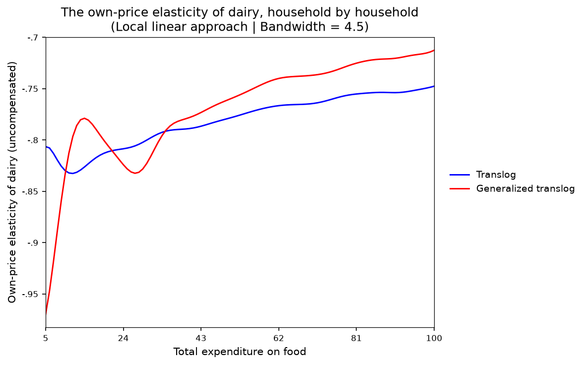
The translog lets the richer households respond less to the price of dairy than the poorer ones: from about \(-0.83\) at a food budget of 10 to \(-0.75\) at 100, the opposite of the LES, whose elasticity falls towards \(-1\) (§3.7). The curve of the generalized translog moves more at small budgets. There, for a few households, the supernumerary expenditure \(\tilde x\) is close to zero, and their elasticities, which divide by small quantities, run from \(-12.5\) to 10.1 against a mean of \(-0.77\); the local regression follows them. The ratios of totals of §3.2.2 are not affected.
4.8 Reporting, the dialog box and the stored results
The reporting options, the replay, test,
lincom and predict are those of
eles (§3.8), the parameters named
alpha:good,
Gamma:good#good,
mu:good (generalized translog) and
Nu:good#characteristic.
Statistics ▸ DESYCO ▸ Translog demand systems
(etranslog), or db etranslog, opens the box of
§3.9 on the translog. etranslog stores the results of
eles (§3.11), with e(cmd)
etranslog and e(model) translog
or gtranslog. The validation is that of §3.10.
5 AIDS and QUAIDS
This chapter presents the almost ideal demand system (AIDS) of Deaton
and Muellbauer (1980a) and its quadratic extension (QUAIDS) by Banks,
Blundell and Lewbel (1997), their estimation by equaids,
and the diagnostic equaidsdiag. It follows the technical
note of the Stata module equaids (Araar 2026c), whose
results the command reproduces. The notation is that of §1.5: goods
\(i, j = 1,\dots,J\), the last one
closing the budget, log prices \(\ell_i\), total expenditure \(x\), budget shares \(w_i\) and demographics \(z_t\), \(t =
1,\dots,T\), gathered in the vector \(z\). The parameters keep the letters of Poi
(2012), who wrote the model with the demographic scaling that
equaids estimates, but two: the log of deflated
expenditure, which Banks, Blundell and Lewbel (1997) and Poi write \(\ell\), is written \(r\) here, \(\ell\) being the log price; and the
function of the scaling that Poi writes \(c(p,
z)\) is written \(\kappa(p,
z)\), \(c\) being the
cluster.
5.1 When to use it
AIDS and QUAIDS need the data of EASI (Chapter 6): the budget shares
of goods that exhaust the budget — a group of goods and the rest of the
budget as the last good will do — and prices that vary across
households: regional or seasonal price indexes, or unit values,
completed by pimpute() for the households that do not buy.
They differ in the Engel curves they allow: straight lines in log
expenditure for AIDS, parabolas for QUAIDS, the most that a system of
rank three allows (§1.2.5). They have few parameters — 32 for the five
goods and two demographics of the examples, against 120 for the EASI
model of §6.5 — and they are the models of most of the applied
literature, whose elasticities a reader expects to compare.
QUAIDS is the default: the quadratic term costs \(J-1\) parameters and lets the share of a
good fall faster among the rich, or rise and then fall.
noquadratic estimates AIDS when the curves are straight,
which estat engel, asobserved observed shows (§5.8); EASI
suits the curves that need more than a parabola. The demographics enter
by scaling only (§5.2); the translation of expenditure by committed
quantities is that of the systems of Chapters 3 and 4.
5.2 The model
Banks, Blundell and Lewbel (1997) start from the indirect utility function of a rank-three system; with the demographic scaling of Ray (1983), as Poi (2012) writes it,
\[\ln V(p, x, z) = \left[\left(\frac{\ln x - \ln m_0(z) - \ln a(p)}{b(p)\,\kappa(p,z)}\right)^{-1} + \sum_i\lambda_i\ell_i\right]^{-1},\]5.1
with the translog price index, the Cobb-Douglas price aggregator and the two functions of the scaling,
\[\ln a(p) = \alpha_0 + \sum_k\alpha_k\ell_k + \tfrac12\sum_k\sum_l\gamma_{kl}\ell_k\ell_l,\qquad b(p) = \prod_k p_k^{\beta_k},\qquad m_0(z) = 1 + \rho'z,\qquad \kappa(p,z) = \prod_k p_k^{\eta_k'z},\]5.2
\(\eta_k\) the vector of the \(T\) coefficients of good \(k\) on the demographics and \(\rho\) that of the scale. Roy’s identity gives the budget shares,
\[w_i = \alpha_i + \sum_j\gamma_{ij}\ell_j + (\beta_i + \eta_i'z)\,r + \frac{\lambda_i}{b(p)\,\kappa(p,z)}\,r^2 + u_i, \qquad r = \ln x - \ln m_0(z) - \ln a(p),\]5.3
\(u_i\) the error. \(r\) is the logarithm of expenditure deflated by the price index and by the scale of the household. AIDS is the case \(\lambda_i = 0\), whose shares are linear in \(r\); without demographics, \(m_0 = \kappa = 1\) and the model is that of §1.2.
Ray’s scaling has a reading. \(m_0(z)\) is an equivalence scale: a household with the characteristics \(z\) needs \(m_0(z)\) times the expenditure of the reference household, \(z = 0\), to reach the same utility at the base prices, and \(\kappa(p, z)\), equal to one at those prices, changes the composition of its spending without changing that cost. A demographic moves the shares through \(\rho\), which deflates expenditure, and through \(\eta_i\), which tilts the Engel curve of good \(i\).
5.2.1 Restrictions
Adding-up, homogeneity and Slutsky symmetry require
\[\textstyle\sum_i\alpha_i = 1,\quad \sum_i\beta_i = \sum_i\lambda_i = 0,\quad \sum_i\eta_i = 0,\quad \sum_i\gamma_{ij} = 0,\quad \sum_j\gamma_{ij} = 0,\quad \gamma_{ij} = \gamma_{ji}.\]5.4
They are imposed by construction: the parameters are an affine function of a vector \(\theta\) of free parameters (Poi 2012) — \(\alpha_i\), \(\beta_i\), \(\lambda_i\) and \(\eta_i\) of the first \(J-1\) goods, the \(\gamma_{ij}\) with \(i\le j\le J-1\), and \(\rho\) — and those of the last good follow from the restrictions. The residuals of the \(J\) equations sum to zero, and the system is estimated on \(J-1\) of them. Curvature, the negativity of the Slutsky matrix, is not imposed.
5.2.2 The constant \(\alpha_0\)
\(\alpha_0\) is not identified with
the other parameters and is fixed. Banks, Blundell and Lewbel (1997) and
Araar (1998, chapter 5) set it just below the smallest log expenditure,
so that \(r\) is positive; Poi (2012)
leaves it to the user, and his example takes \(\alpha_0 = 10\), above the log expenditure
of every household of his data. equaids sets by default
\[\alpha_0 = \min_h \ln x_h - 0.1\]5.5
on the estimation sample — 6.313 on the Mexican cereals — and
anot(#) imposes a value. The default is a rule of the data,
which the bootstrap applies again on each replication.
The choice matters for inference more than for the fit. When \(\alpha_0\) lies far from the log expenditures, \(r\) varies little relative to its level, \(r^2\) is almost a linear function of \(r\), and the quadratic block is weakly identified whatever the fit: on Poi’s data, the condition index of \((1, r, r^2)\) is 23 with the default and 331 with \(\alpha_0 = 10\) (§5.6), and at \(\alpha_0 = 10\) the bootstrap standard deviations of the coefficients are up to three times their sandwich standard errors (Araar 2026c).
5.2.3 The elasticities
With \(f_i\) the share of the model, without its error, the derivatives of the share (§1.5) are
\[w^x_i = \beta_i + \eta_i'z + \frac{2\lambda_i\,r}{b\,\kappa},\qquad w^p_{ij} = \gamma_{ij} - w^x_i\,\frac{\partial\ln a}{\partial\ell_j} - \frac{\lambda_i\,(\beta_j + \eta_j'z)\,r^2}{b\,\kappa},\qquad \frac{\partial\ln a}{\partial\ell_j} = \alpha_j + \sum_k\gamma_{jk}\ell_k ,\]5.6
and the elasticities of a household, as in every model of shares, \(e_i = 1 + w^x_i/f_i\), \(e_{ij} = -\mathbf{1}\{i=j\} + w^p_{ij}/f_i\) and \(e^*_{ij} = e_{ij} + f_j e_i\). In QUAIDS the derivative \(w^x_i\) itself varies with expenditure, through \(2\lambda_i r/(b\kappa)\); in AIDS the elasticities vary with expenditure through the share only.
5.2.4 Which elasticity: household, individual or market
Each household has its own elasticities, at its own prices,
expenditure and demographics. As easi (§6.2.4),
equaids reports their mean over the households, each
weighted by the share of the good and by a weight \(\tilde\omega_h\) that sets the type: \(\omega_h\) for households, the
default; \(\omega_h n_h\) for
individuals, the default when hhsize() gives
the size \(n_h\); \(\omega_h x_h\) for market.
With \(f_{ih}\), \(w^x_{ih}\) and \(w^p_{ijh}\) those of household \(h\),
\[\hat e_i = 1 + \frac{\sum_h\tilde\omega_h w^x_{ih}}{\sum_h\tilde\omega_h f_{ih}},\qquad \hat e_{ij} = -\mathbf{1}\{i=j\} + \frac{\sum_h\tilde\omega_h w^p_{ijh}}{\sum_h\tilde\omega_h f_{ih}},\qquad \hat e^*_{ij} = \hat e_{ij} + \frac{\sum_h\tilde\omega_h (f_{ih} + w^x_{ih})\,f_{jh}}{\sum_h\tilde\omega_h f_{ih}} .\]5.7
None divides by the share of a single household, and each is a ratio of two weighted totals. With the weights \(\omega_h x_h\) the totals are those of spending, and \(\hat e_i\) is the elasticity of the total demand of the population: what a simulation of a price change on aggregate demand, or on tax revenue, needs. Engel and Cournot aggregation, homogeneity and the symmetry of the compensated matrix hold exactly for every type, since they hold for every household.
Two other types are available. reference gives the
elasticities of a household at the weighted means of \(\ell\), \(\ln
x\) and \(z\), those of Poi
(2012); they depend on the point chosen and, the model being nonlinear,
differ from the mean of the households. hhmean gives the
mean of the household elasticities weighted by \(\omega_h\) alone, which divides, for every
household, by its predicted share. households,
market, reference and hhmean come
from the same estimation, and equaids, elasticities(market)
displays the second after the first; individuals weights
the whole estimation by \(\omega_h
n_h\). On the Mexican cereals of §5.5, with the survey design
(standard errors in parentheses):
| Good | Type | Expenditure | Own price |
|---|---|---|---|
| corn | households | 0.4131 (0.0227) | -0.9161 (0.0353) |
| individuals | 0.4619 (0.0248) | -0.9042 (0.0410) | |
| market | -0.1300 (0.0644) | -0.8480 (0.0653) | |
| reference | 0.4484 (0.0280) | -0.9205 (0.0333) | |
| hhmean | 0.3563 (2.4422) | -0.9091 (0.3120) | |
| wheat | households | 0.5728 (0.0163) | -0.8623 (0.0406) |
| individuals | 0.5754 (0.0182) | -0.8818 (0.0458) | |
| market | 0.4106 (0.0256) | -0.8086 (0.0573) | |
| reference | 0.5841 (0.0191) | -0.8660 (0.0394) | |
| hhmean | 0.5543 (0.9903) | -0.8563 (0.3312) | |
| rice | households | 0.6594 (0.0368) | -1.1994 (0.0694) |
| individuals | 0.6324 (0.0407) | -1.1479 (0.0740) | |
| market | 0.4408 (0.0451) | -1.2866 (0.1015) | |
| reference | 0.6814 (0.0396) | -1.1896 (0.0660) | |
| hhmean | 1.4930 (292.5218) | -0.8821 (110.5455) | |
| other | households | 1.3769 (0.0415) | -0.8335 (0.0506) |
| individuals | 1.3208 (0.0437) | -0.8026 (0.0540) | |
| market | 1.2251 (0.0537) | -0.8595 (0.0426) | |
| reference | 1.3777 (0.0408) | -0.8387 (0.0493) | |
| hhmean | 1.2977 (20.3891) | -0.8475 (4.5658) |
The market elasticities differ most. Total spending on the staples comes mostly from the richer households, whose shares of them are small, and corn becomes an inferior good in the aggregate: \(-0.13\), against 0.41 for the households. The households and the individuals differ little on these data, and the reference household is close to the households (corn 0.448 against 0.413) without being them. The mean of the household elasticities is not estimable with any precision — standard errors of 2.4 for corn and 293 for rice: some households have predicted shares near zero, or below — 264 outside \([0, 1]\) — and their elasticities, which divide by these shares, drive the mean.
5.3 Estimation
5.3.1 Iterated FGNLS
With \(f_h(\theta)\) the \(J-1\) shares of the model of household \(h\), \(u_h = w_h - f_h\) its residuals, \(G_h = \partial f_h/\partial\theta'\) their Jacobian and \(\Sigma\) the covariance of the residuals, iterated feasible generalized nonlinear least squares solve
\[\sum_h\omega_h\,G_h'\Sigma^{-1}u_h(\theta) = 0,\qquad \Sigma = \frac{\sum_h\omega_h u_h u_h'}{\sum_h\omega_h},\]5.8
the Gaussian quasi-maximum-likelihood estimator of the system:
consistent whenever \(\mathrm{E}[u_h\mid
\ell_h, x_h, z_h] = 0\), and invariant to the equation left out
(Barten 1969). It is the estimator of Poi (2012) and of Stata’s
demandsys (StataCorp 2023), whose estimates
equaids reproduces. equaids solves it by
Gauss–Newton steps \(\theta \leftarrow \theta
+ A^{-1}g\), with \(A = \sum_h\omega_h
G_h'\Sigma^{-1}G_h\) and \(g\) the left-hand side above, the step
halved until the objective falls: first with \(\Sigma = I\), until the step is small, then
with \(\Sigma\) updated at every step.
The Jacobian is analytic — every parameter enters \(f\) directly, through \(r\) or through \(\ln(b\kappa)\), and the restrictions are
linear — where nlsur, on which Poi’s command and
demandsys rest, differentiates the system numerically, one
evaluation of the whole system per parameter and per iteration. AURA
fills it in one pass over the households: the Mexican cereals of §5.5,
10,804 households and 32 parameters, converge in 19 iterations and about
one second.
5.3.2 Convergence
equaids stops when the Newton decrement \(g'A^{-1}g\) falls below
tolerance() (\(10^{-6}\)
by default) and \(\Sigma\) is stable to
the same relative order. The criterion has a statistical meaning: \(g'A^{-1}g\) is the squared distance to
the optimum in the metric of the information, so the estimate is then
within \(\sqrt{10^{-6}} = 0.001\)
standard errors of the optimum, in all directions jointly. The
iterations stop without convergence after iterate() steps
(300), or when neither the log likelihood nor the scaled gradient has
progressed over 20 iterations, and equaids says why: the
limit, steps cut at the boundary \(m_0(z) >
0\), a nearly singular information matrix, or \(\alpha_0\) above the deflated expenditure
of most households. The iterations start from the mean shares, or from
from(), a vector of free parameters such as
e(b_free).
5.3.3 Weights and the sample
The weights enter every moment. Analytic and sampling weights are
normalised to sum to the number of households; importance and frequency
weights are used as they stand, equaids accepting frequency
weights as the Stata module does. A household with a missing share,
price, expenditure or demographic, or a nonpositive weight, leaves the
sample, and the data check at the head of the output says how many each
rule removes (§1.4).
5.3.4 Missing prices
pimpute() works as in easi (§6.3.4): a
missing log price is replaced by the weighted mean of the log prices of
the households of the same group of the first variable — the PSU,
typically — and, where nobody in the group has a price, of the next
variable — the urban or rural area — the means being computed again
until the sample no longer changes. The analytic standard errors include
the imputation, and vce(bootstrap) fills the prices again
on every replication.
5.3.5 Households that do not buy
Option selection corrects the system by the two-step
method of Shonkwiler and Yen (1999), as in easi (§6.3.5).
For each corrected good \(i\) — by
default every good with zero shares but the last, or those of
selgoods() — the household buys when \(s_i'\pi_i + \upsilon_i > 0\),
with
\[s_i = (1,\ \ell_1 - \ln x,\ \dots,\ \ell_J - \ln x,\ z,\ z^e_i),\]5.9
\(z^e_i\) the variables of the
probit only (selvars()), and the expected share of every
household, buyer or not, is
\[\mathrm{E}[w_i] = \Phi(s_i'\pi_i)\,f_i + \delta_i\,\phi(s_i'\pi_i),\]5.10
\(\delta_i = \operatorname{Cov}(u_i, \upsilon_i)\) the covariance of the error of the share with that of the probit: \(\delta_i = 0\) is the absence of selection. The probits are estimated first, good by good, with the weights of the estimation; the system is then estimated by the same iterated FGNLS on all the households, the \(\delta_i\) joining \(\theta\). The last good closes the system, \(\mathrm{E}[w_J] = 1 - \sum_{i<J}\mathrm{E}[w_i]\): every household must buy it.
Written in prices relative to expenditure, the probit keeps the expected shares homogeneous of degree zero. The elasticities are those of the expected demand of all the households,
\[\frac{\partial\,\mathrm{E}[w_i]}{\partial\ell_j} = \Phi_i\,w^p_{ij} + \pi_{ij}\,\phi_i\,(f_i - \delta_i s_i'\pi_i),\qquad \frac{\partial\,\mathrm{E}[w_i]}{\partial\ln x} = \Phi_i\,w^x_i - \Big(\sum_j\pi_{ij}\Big)\phi_i\,(f_i - \delta_i s_i'\pi_i),\]5.11
\(\pi_{ij}\) the coefficient of \(\ell_j - \ln x\) in the probit of good \(i\): the first term is the response of the share of the buyers, the intensive margin, the second that of the probability of buying, the extensive margin. The aggregate elasticities keep Engel and Cournot aggregation and homogeneity exactly; symmetry holds for the shares of the model, not for the expected shares.
A table under the header reports for each corrected good the percentage of buyers, the pseudo-\(R^2\) of its probit, the households predicted with probability 0 or 1, \(\delta_i\) with its \(z\), and the variance inflation of the expenditure coefficient \(\beta_i\) due to the selection term, \(1/(1 - \varrho_i^2)\), \(\varrho_i\) the correlation of \(\phi_i\) with the column of \(\beta_i\) in the Jacobian of the share, given its other columns. Above 10, \(\phi_i\) is almost collinear with \(\ln x\) and the correction rests on the curvature of the probit: leave the good uncorrected, or add a variable of the probit only.
5.4 Variance
5.4.1 The coefficients
Every variance of equaids is built from influence
functions, one row per household: the derivative of the whole procedure
with respect to the weight of that household. The estimate is the joint
solution in \((\theta, \Sigma)\) of
\(\sum_h\omega_h\chi_h = 0\), with
\[\chi_h = \begin{pmatrix} G_h'\Sigma^{-1}u_h\\ \operatorname{vech}(u_h u_h' - \Sigma)\end{pmatrix},\qquad \mathrm{IF}_h(\hat\theta, \hat\Sigma) = -H^{-1}\omega_h\chi_h,\qquad H = \frac{\partial\sum_h\omega_h\chi_h}{\partial(\theta', \operatorname{vech}'\Sigma)},\]5.12
\(H\) the observed Jacobian. Its
block in \(\theta\) is \(R - A\), \(R =
\sum_h\omega_h\sum_i(\Sigma^{-1}u_h)_i\,
\partial^2 f_{ih}/\partial\theta\partial\theta'\) the
residuals times the second derivatives of the shares; its blocks in
\(\Sigma\) carry the estimation of
\(\Sigma\). Both vanish in expectation
when the model is right, and the usual sandwich, built on \(A\) alone, leaves them out; they are not
zero in a sample, and the Gauss–Newton standard errors — those of Poi
(2012) and demandsys — were up to 7.6% too small on Poi’s
data against the influence function computed by brute force (Araar
2026c). Under selection, the influence functions of the
probits, with their observed Hessian, are stacked into those of the
system through the derivative of \(\chi_h\) with respect to the probit
coefficients; under pimpute(), the influence of a donor on
the prices it fills enters through the derivative with respect to the
filled prices.
5.4.2 The elasticities
An elasticity of the households, the individuals or the market is a ratio of two weighted totals. For the expenditure elasticity, \(\hat e_i - 1 = N_i/M_i\), with \(N_i = \sum_h\tilde\omega_h w^x_{ih}\) and \(M_i = \sum_h\tilde\omega_h f_{ih}\), and its influence function has two terms,
\[\mathrm{IF}_h(\hat e_i) = \frac{\tilde\omega_h\,\big(w^x_{ih} - (\hat e_i - 1)\,f_{ih}\big)}{M_i} + \frac{\partial\hat e_i}{\partial\theta'}\,\mathrm{IF}_h(\hat\theta),\qquad \frac{\partial\hat e_i}{\partial\theta'} = \frac{1}{M_i}\Big(\frac{\partial N_i}{\partial\theta'} - (\hat e_i - 1)\frac{\partial M_i}{\partial\theta'}\Big),\]5.13
the first for the sampling of the households — the population over which the elasticity is summarised is itself a sample — and the second for the estimation of \(\theta\). For the reference household, the sampling term is that of the means of \(\ell\), \(\ln x\) and \(z\), times the derivative of the elasticity with respect to them; for the household mean, \(\omega_h(e_{ih} - \hat e_i)/\sum_h\omega_h\).
AURA computes all these Jacobians exactly: the derivatives of the
shares with respect to the parameters and to the data are closed forms.
The Stata module takes those of the reference household, of the
household mean and of every elasticity under selection, and
the effect of the prices filled by pimpute(), by central
differences. They are accurate on regular data, Poi’s or the simulated
non-buyers, but not where predicted shares come near zero: on the
Mexican cereals, the Jacobian of the market elasticities under
selection is off by up to 0.2%, and that of the household
mean is meaningless, while differences of smaller steps converge to the
exact values. The standard errors of AURA are those of the exact
derivative.
5.4.3 The variance estimators
The influence functions give every variance:
vce(robust), the default, \(\frac{n}{n-1}\sum_h
\mathrm{IF}_h\mathrm{IF}_h'\); vce(cluster
clustvar), the same on the sums within clusters,
with \(n_c/(n_c-1)\);
vce(svy), the design declared with svyset —
the sums within PSUs centred on their stratum mean, stratum \(\mathcal S\) weighted by \((1-f_{\mathcal S})\,n_{\mathcal S}/(n_{\mathcal
S}-1)\), \(n_{\mathcal S}\) its
PSUs and \(f_{\mathcal S}\) its
sampling fraction — with the design degrees of freedom;
vce(conventional), \(A^{-1}\) for the coefficients. A stratum
with a single PSU is taken as certain: it contributes nothing to the
variance, and a note counts them. The Stata module follows the
singleunit() option of its svyset; certainty
is the rule of DESYCO.
These standard errors were validated in the Stata module: against the influence function computed by brute force — the whole procedure run again with the weight of each household perturbed in turn — to \(2\times10^{-4}\), the precision of the brute force; against bootstraps of 500 and 1,000 replications of the whole procedure, under simple random sampling, sampling weights and the survey design, with ratios of 0.93 to 1.06; and by Monte Carlo experiments on populations generated by the model, where the 95% intervals cover 93% to 96% of the time (Araar 2026c).
5.4.4 Bootstrap
vce(bootstrap, reps(#) seed(#) strata() psu() svy)
estimates the full sample, then draws the households with replacement —
or the PSUs within the strata; svy takes the strata, the
PSUs and the weight from svyset — and runs the whole
procedure again on each replication: \(\alpha_0\) by its rule, the prices filled
by pimpute(), the probits and the system. The households
keep their weights. The point estimates are those of the full sample,
the standard errors those of the replications, 200 by default; a
replication that does not converge is dropped and counted
(e(N_reps_ok)). The standard errors carry the noise of a
finite number of draws, about \(1/\sqrt{2B}\) of their value: 10% at 50
replications. The analytic standard errors rest on a linearization,
every parameter well identified and the estimate inside its domain; §5.7
shows a case where the bootstrap is the safer choice.
5.5 A first estimation
The Mexican cereals have four groups — corn, wheat products, rice and
other cereals — and the composite of all the other goods, which every
household buys and which closes the budget. The prices are unit values,
the composite’s set to 1, and the design is declared with
svyset. The model has the size of the household and the sex
of its head as demographics:
. use "data/mexico_2014_cereals.dta", clear
. svyset psu [pweight=sweight], strata(strata)
. equaids wcorn wwheat wrice wother wcomp, prices(pcorn pwheat price pother pcomp) ///
expenditure(hh_current_inc) demographics(hhsize isMale) ///
snames(corn wheat rice other composite) vce(svy)The data check shows the zero shares and the missing prices. A
household that buys no rice has no unit value for it, and without
pimpute() it leaves the sample:
│ N > 0 N < 0 N = 0 N missing Mean Min Max
────────────────────────────┼────────────────────────────────────────────────────────────────────────────
Budget shares │
wcorn │ 13,607 0 2,259 0 0.0239 0.0000 0.1101
wwheat │ 12,584 0 3,282 0 0.0148 0.0000 0.0668
wrice │ 4,481 0 11,385 0 0.0015 0.0000 0.0131
wother │ 2,600 0 13,266 0 0.0011 0.0000 0.0148
wcomp │ 15,866 0 0 0 0.9587 0.8264 1.0000
...
Prices │
pcorn │ 15,375 0 0 491 18.6480 2.0588 213.5000
pwheat │ 15,340 0 0 526 52.2058 4.3636 1352.3698
price │ 13,172 0 0 2,694 15.6060 1.0000 124.5714
pother │ 12,166 0 0 3,700 62.0643 0.5000 352.9412
pcomp │ 15,866 0 0 0 1.0000 1.0000 1.0000
...
• Left out, a price missing: 5,062 households.
• Estimation sample: 10,804 households of 15,866. Those left out are not reweighted: if they are not
missing at random, adjust the weights before the estimation.The header follows:
note: 10 stratum(s) with a single PSU, taken as certain: they contribute nothing to the variance
──────────────────────────────────────────────────────────────────────────────
QUAIDS demand system, iterated FGNLS Number of obs = 10,804
Goods = 5 Demographics = 2
alpha_0 = 6.313 (min ln x - 0.1) Log likelihood = 150719.13
Weights = pweight = sweight
Variance = svy Elasticities = households
Strata = 197 PSUs = 1,464
Design df = 1,267 Single-PSU str.= 10
Converged in 19 iteration(s) Execution time = 1.18 s
──────────────────────────────────────────────────────────────────────────────The weight comes from the design. Ten strata keep a single PSU once the households without prices have left, and are taken as certain. \(\alpha_0\) is set by its rule. The tables follow, each with its standard errors:
Table 1: Mean of the predicted budget shares (in %)
───────┬───────────────────────────────────────────────
│ corn wheat rice other composite
───────┼───────────────────────────────────────────────
Share │ 2.5412 1.6377 0.1720 0.1375 95.5116
───────┴───────────────────────────────────────────────
Table 2: Expenditure elasticities, d ln q / d ln x
────────────┬───────────────────────────────────────────────
│ corn wheat rice other composite
────────────┼───────────────────────────────────────────────
Elasticity │ 0.4131 0.5728 0.6594 1.3769 1.0230
────────────┴───────────────────────────────────────────────
Table 3: Uncompensated price elasticities, d ln q_i / d ln p_j (rows i: goods, columns j: prices)
───────────┬───────────────────────────────────────────────────
│ corn wheat rice other composite
───────────┼───────────────────────────────────────────────────
corn │ -0.9161 0.0736 -0.0096 -0.0009 0.4400
wheat │ 0.1105 -0.8623 0.0150 0.0027 0.1614
rice │ -0.1484 0.1406 -1.1994 -0.1382 0.6859
other │ -0.0435 0.0185 -0.1742 -0.8335 -0.3441
composite │ -0.0038 -0.0046 0.0006 -0.0000 -1.0152
───────────┴───────────────────────────────────────────────────Corn, wheat and rice are necessities, with expenditure elasticities of 0.41, 0.57 and 0.66; the other cereals are a luxury (1.38). A row of Table 3 is a quantity, a column a price: a 1% rise of the price of corn lowers the quantity of corn bought by 0.92% and raises that of wheat by 0.11%. The own-price elasticities run from \(-0.83\) for the other cereals to \(-1.20\) for rice. For the cereals, the standard errors of Table 2-b run from 0.016 for wheat to 0.042 for the other cereals, those of the own-price elasticities, in Table 3-b, from 0.035 for corn to 0.069 for rice. Notes close the output:
note: ln(x/(m0 a(p))) <= 0 for 101 households: their expenditure is below the estimated cost a(p) (alpha_0 = 6.313186)
a(p) is read as a subsistence cost (Deaton and Muellbauer 1980)
note: predicted shares outside [0, 1] for 264 households
note: corn: 13.5% of the shares are zero; FGNLS does not model censored demand (see selection)
...
note: 241 log prices lie more than 5 robust standard deviations from their medianFor 101 households, \(r \le 0\):
expenditure below the estimated cost \(a(p)\), which Deaton and Muellbauer (1980a)
read as a subsistence cost. The predicted shares of 264 households fall
outside \([0, 1]\), those of the small
goods at the top of the distribution (§5.8). The zero shares are not
modelled without selection (§5.7).
The other tables come on request, and the replay needs no new estimation:
. equaids, compensated checks starscompensated adds Table 4, the compensated price
elasticities, and checks the aggregation identities;
detail gives the two:
Table 4: Compensated price elasticities, at constant utility (rows i: goods, columns j: prices)
───────────┬──────────────────────────────────────────────────────────────────
│ corn wheat rice other composite
───────────┼──────────────────────────────────────────────────────────────────
corn │ -0.9003*** 0.0827*** -0.0086** -0.0005 0.8268***
wheat │ 0.1284*** -0.8514*** 0.0161** 0.0034 0.7035***
rice │ -0.1276** 0.1532** -1.1980*** -0.1374*** 1.3097***
other │ -0.0095 0.0406 -0.1719*** -0.8316*** 0.9723***
composite │ 0.0220*** 0.0121*** 0.0024*** 0.0014*** -0.0378***
───────────┴──────────────────────────────────────────────────────────────────
* p<0.10, ** p<0.05, *** p<0.01
Aggregation identities of the aggregate elasticities (exact by construction)
Engel |sum_i S_i E_i - 1| 2.220e-16
Cournot max_j |sum_i S_i E_ij + S_j| 1.110e-16
Homogeneity max_i |sum_j E_ij + E_i| 1.554e-15
Symmetry max |S_i E*_ij - S_j E*_ji| 3.123e-17At constant utility, corn and wheat are substitutes, as are wheat and
rice; rice is a complement of corn and of the other cereals; every
cereal is a substitute for the composite. The identities hold to
rounding: a residual above it would mean that the formulas are wrong on
the data at hand, and equaids reports it whether or not
checks is given.
5.5.1 With and without the survey design
The same model with the sampling weight only,
[pw=sweight] and the default vce(robust),
gives the same estimates and other standard errors. Those of the
elasticities of the households:
| Good | Expenditure, robust | Expenditure, svy | Own price, robust | Own price, svy |
|---|---|---|---|---|
| corn | 0.0171 | 0.0227 | 0.0207 | 0.0353 |
| wheat | 0.0162 | 0.0163 | 0.0287 | 0.0406 |
| rice | 0.0328 | 0.0368 | 0.0674 | 0.0694 |
| other | 0.0403 | 0.0415 | 0.0557 | 0.0506 |
| composite | 0.0006 | 0.0008 | 0.0011 | 0.0017 |
The design matters most for the price elasticities: the design standard error of the own-price elasticity of corn is 1.7 times the robust one, of wheat 1.4 times; for the expenditure elasticities the two are close, but for corn (1.3 times).
5.6 Diagnostics
A diagnostic that needs the model to converge is silent exactly when
it does not. equaidsdiag, with the syntax of
equaids, reports on the data and on the regressors at the
starting point — the mean shares, the Stone index plus \(\alpha_0\) — without estimating, in
sections D0 to D5: the budget shares (D0), the relative prices (D1),
expenditure and \(\alpha_0\) (D2), the
demographics (D3), the conditioning of the regressors, with the
condition indexes of Belsley, Kuh and Welsch (1980) (D4), and the small
goods (D5). On the Mexican cereals:
. equaidsdiag wcorn wwheat wrice wother wcomp [pw=sweight], prices(pcorn pwheat price pother pcomp) ///
expenditure(hh_current_inc) demographics(hhsize isMale) ///
snames(corn wheat rice other composite)
D2. Expenditure and alpha_0
──────────────────────────────────────────────────────────────────────────────
ln x: min 6.413, median 9.147, max 14.141; alpha_0 6.3132
deflated expenditure at the start, l = ln x - alpha_0 - sum wbar_k ln p_k:
min -0.049, max 7.692; households with l <= 0: 1 ( 0.0%)
D3. Demographic variables (Ray scaling m0 = 1 + rho'z)
──────────────────────────────────────────────────────────────────────────────
variable distinct min max mean s.d. p rare Np(1-p)
hhsize 17 1 17 3.88 1.89 . .
isMale 2 0 1 .749 .434 0.251 2033.6
hhsize largest |corr.| with a relative log price 0.098; corr. with ln x 0.222
isMale largest |corr.| with a relative log price 0.035; corr. with ln x 0.064
D4. Conditioning of the regressors at the starting point (Belsley, Kuh, Welsch)
──────────────────────────────────────────────────────────────────────────────
largest condition index: 77.1 (30-100: moderate, above 100: strong)
...
condition index of (1, l, l^2) alone: 35.9
D5. Small goods
──────────────────────────────────────────────────────────────────────────────
warning: goods with less than 1% of total expenditure: rice (0.128%) other (0.154%).
...
Warnings: 7The report writes \(\ell\) for \(r\), as the Stata module does. D0 counts
the zero shares — 68% of the households for rice, 80% for the other
cereals — and D5 the goods below 1% of total expenditure, those whose
predicted shares QUAIDS can bring near zero. The demographics hardly
move with the prices (largest correlation 0.10), and the size of the
household moves with expenditure (0.22). The condition index of \((1, r, r^2)\), with the columns uncentred
so that the level of \(r\) counts, is
36: moderate. estat diagnostics repeats the sections after
an estimation.
The constant \(\alpha_0\). On Poi’s food data
(four food groups, 4,048 households), the condition index of \((1, r, r^2)\) is 23.4 with the default
\(\alpha_0 = 2.2026\), and 330.8 with
Poi’s \(\alpha_0 = 10\)
(anot(10)). sensitivity estimates the model at
several values of \(\alpha_0\), by
default the rule and 1, 2 and 4 below it:
. equaidsdiag w1 w2 w3 w4, prices(p1 p2 p3 p4) expenditure(expfd) ///
snames(proteins fruitveg cereals other) sensitivity
D6. Sensitivity to alpha_0 (each row estimates the model)
──────────────────────────────────────────────────────────────────────────────
aggregate expenditure elasticities
alpha_0 conv iter log lik. rcond proteins fruitveg cereals other
2.2026 1 7 13093.49 2.27e-04 1.035 0.887 1.022 1.037
1.2026 1 8 13093.52 3.63e-05 1.034 0.887 1.023 1.038
0.2026 1 13 13093.60 9.99e-06 1.032 0.887 1.024 1.040
-1.7974 1 23 13096.09 2.49e-06 1.019 0.879 1.034 1.064
──────────────────────────────────────────────────────────────────────────────The fit and the elasticities hardly move, while the reciprocal condition number of the information matrix falls a hundredfold: below about \(10^{-5}\), the sandwich standard errors of the coefficients are no longer reliable. Keep the default.
Stability to the demographics.
stability estimates the model again without each
demographic in turn, on the same households and at the same \(\alpha_0\), and reports the change of the
aggregate expenditure and own-price elasticities. Both estimates are
computed on the same sample, so that the difference of their influence
functions is the influence function of the change, and gives its
standard error without assuming either estimator efficient. A change is
marked when \(|z|\) exceeds the
Bonferroni critical value for the \(2J\) changes of a demographic:
. equaidsdiag wcorn wwheat wrice wother wcomp [pw=sweight], prices(pcorn pwheat price pother pcomp) ///
expenditure(hh_current_inc) demographics(hhsize isMale) stability ///
snames(corn wheat rice other composite)
D7. Stability: each demographic left out in turn (the model estimated again)
──────────────────────────────────────────────────────────────────────────────
Without hhsize:
good dE_x s.e. z dE_ii s.e. z
corn 0.0876 0.0229 3.82* -0.0994 0.0143 -6.95*
wheat 0.0114 0.0182 0.63 -0.0495 0.0073 -6.77*
rice -0.1216 0.0395 -3.08* -0.0186 0.0216 -0.86
other -0.0617 0.0101 -6.09* 0.0146 0.0050 2.90*
composite -0.0013 0.0003 -4.79* -0.0030 0.0004 -6.77*
Without isMale:
good dE_x s.e. z dE_ii s.e. z
corn 0.0040 0.0060 0.67 -0.0005 0.0016 -0.34
...Leaving the size of the household out moves eight of the ten
elasticities beyond sampling noise; leaving the sex of the head out
moves none. The size of the household affects the shares and moves with
expenditure (D3): it belongs in the model. A marked change says that the
elasticities depend on the variable; the estimate of \(\rho\) and the smallest \(m_0(z)\), in e(m0_min), say
whether it is the variable or the scaling that is at work. What to do
with each finding:
| The report says | What it means | What to do |
|---|---|---|
| D0: many zero shares | the households that do not buy, whose zeros the model does not describe | selection (§5.3.5), with pimpute() when
the prices are unit values |
| D1: a relative price with a standard deviation below 0.05 | its coefficients rest on little variation | aggregate the good, or expect wide intervals |
| D2: households with \(r \le 0\) at the start | \(\alpha_0\) above their log expenditure | keep the default \(\alpha_0\) |
| D3: a rare modality, few integer values | a demographic that rests on a few households, or a categorical variable entered as a number | merge the category; enter a categorical variable as indicators (the scaling is linear in \(z\)) |
| D4: condition index of \((1, r, r^2)\) above 100 | the quadratic block weakly identified | keep the default \(\alpha_0\), or estimate AIDS |
| D5: small goods | predicted shares near zero, the mean of the household elasticities unstable | report the households or market types; group the small goods |
| D6: rcond below \(10^{-5}\) | a nearly singular information matrix at that \(\alpha_0\) | keep the default \(\alpha_0\) |
| D7: a demographic marked | the elasticities depend on it | keep it in the model, unless its \(\rho\) brings \(m_0(z)\) near zero |
equaidsdiag accepts the weights, hhsize(),
pimpute() and the selection options of
equaids, and stores its counts and matrices in
r(); help equaidsdiag lists them.
5.7 The households that do not buy, in practice
In the Mexican cereals, 14% of the households buy no corn, 18% no
wheat, 71% no rice and 85% no other cereal, and the non-buyers have no
unit value. pimpute(psu rururb) fills their prices from the
PSU, else from the urban or rural area, and selection
corrects the four cereals, with the number of employed members of the
household in the probits only:
. equaids wcorn wwheat wrice wother wcomp [pw=sweight], prices(pcorn pwheat price pother pcomp) ///
expenditure(hh_current_inc) demographics(hhsize isMale) ///
snames(corn wheat rice other composite) pimpute(psu rururb) ///
selection selvars(perc_ocupa) elasticities(market)The data check says how the prices were filled:
• Missing price of corn filled by pimpute(): 287 from psu, 12 from rururb.
• Missing price of wheat filled by pimpute(): 287 from psu, 47 from rururb.
• Missing price of rice filled by pimpute(): 287 from psu, 2,215 from rururb.
• Missing price of other filled by pimpute(): 287 from psu, 3,221 from rururb.
• Left out, a price missing in every pimpute() group: 192 households.The sample keeps 15,674 households instead of 10,804. The 287 households filled from their PSU for every good buy no cereal at all; for rice and the other cereals, most prices come from the area, nobody in the PSU buying them. Under the header, the probits:
Selection of the buyers (Shonkwiler and Yen 1999)
E[w_i] = Phi_i f_i + delta_i phi_i, one probit per corrected good
─────────────┬────────────────────────────────────────────────────────────────
│ Buyers % Pseudo R2 Perfect VIF(beta) delta z
─────────────┼────────────────────────────────────────────────────────────────
corn │ 86.3 0.042 0 1.1 -0.0795 -1.63
wheat │ 81.7 0.016 0 1.2 -0.0576 -1.64
rice │ 29.0 0.030 0 1.3 -0.0018 -0.46
other │ 15.3 0.040 0 3.3 -0.0020 -0.49
─────────────┴────────────────────────────────────────────────────────────────
Probit-only variables: corn: perc_ocupa; wheat: perc_ocupa; rice: perc_ocupa; other: perc_ocupa;The probits barely separate the buyers from the others (pseudo-\(R^2\) of 0.016 to 0.042), but the variance
inflations of \(\beta_i\) stay below
10. The correction brings another difficulty: it moves part of the
effect of the size of the household from the share to the probability of
buying, and \(\hat\rho\) approaches the
value at which \(m_0(z) = 1 +
\rho'z\) reaches zero for the largest households.
equaids measures that distance in standard errors, \(\min_h m_0(z_h)/\mathrm{se}(m_0(z_h))\),
stored in e(m0_t) — 5.1 without the correction — and warns
below 3. With the linearized standard errors:
warning: the estimate lies within 0.50 standard errors of the boundary of
Ray's scaling, m0(z) = 1 + rho'z > 0: the estimator is not regular there and
the linearized standard errors understate the uncertainty; use vce(bootstrap),
or demographics that keep m0(z) away from 0Near the boundary the estimator is not regular, and the linearization
fails. The \(z\) of the table above are
those of a bootstrap of the whole procedure,
vce(bootstrap, reps(50) seed(1)): \(-1.63\) and \(-1.64\) for corn and wheat, where the
linearized standard errors give \(-2.37\) and \(-3.91\), the bootstrap standard errors
being 1.5 and 2.4 times larger. The market elasticities, without the
correction (robust analytic standard errors) and with it
(bootstrap):
| Good | Expenditure | Expenditure, corrected | Own price | Own price, corrected |
|---|---|---|---|---|
| corn | -0.168 (0.039) | -0.057 (0.035) | -0.873 (0.030) | -0.993 (0.031) |
| wheat | 0.341 (0.022) | 0.327 (0.041) | -0.718 (0.034) | -0.760 (0.029) |
| rice | 0.270 (0.043) | 0.041 (0.060) | -1.292 (0.109) | -1.358 (0.112) |
| other | 1.148 (0.036) | 0.985 (0.053) | -0.794 (0.058) | -0.448 (0.097) |
- \(\delta\): the coefficient of the selection term of a good
The effect of the correction is not read from \(\delta\) alone. For rice and the other cereals, bought by 29% and 15% of the households, \(\delta\) is close to zero, yet the expenditure elasticity of rice falls from 0.27 to 0.04 and the own-price elasticity of the other cereals from \(-0.79\) to \(-0.45\). Without the correction, one functional form must describe both whether the households buy and how much, and the zeros bend its coefficients; with it, the probit describes the purchase, the extensive margin, and the share of the model the buyers. Fifty replications leave about 10% of noise on the standard errors; take several hundred in an application.
A regular case. The help of equaids
simulates 3,000 households from the model of the correction: three
goods, the first two bought by about 73% and 53% of the households, a
variable of each probit only, no price for the non-buyers — filled from
their group of 25 households, which share a price shock — and the size
of the household in Ray’s scaling, far from the boundary:
. use "data/equaids_nonbuyers.dta", clear
. equaids w1 w2 w3, prices(p1 p2 p3) expenditure(x) noquadratic demographics(hs) anot(0) ///
pimpute(grp) selection selvars(w1: q1 ; w2: q2) vce(cluster grp)
Selection of the buyers (Shonkwiler and Yen 1999)
E[w_i] = Phi_i f_i + delta_i phi_i, one probit per corrected good
─────────────┬────────────────────────────────────────────────────────────────
│ Buyers % Pseudo R2 Perfect VIF(beta) delta z
─────────────┼────────────────────────────────────────────────────────────────
w1 │ 74.4 0.289 0 1.0 -0.0136 -3.88
w2 │ 54.5 0.301 0 1.0 0.0102 2.17
─────────────┴────────────────────────────────────────────────────────────────
Probit-only variables: w1: q1; w2: q2;Every parameter is strongly identified: the probits separate the
buyers (pseudo-\(R^2\) about 0.3), and
e(m0_t) is 23. The analytic standard errors, clustered by
the groups of the imputation, are valid: on 700 samples of this
population, they are 0.95 to 1.02 times the standard deviations of the
estimates (Araar 2026c). selvars(w1: q1 ; w2: q2) gives
each probit its own variable.
5.8 Engel curves
The Engel curve of a good is its budget share as a function of total expenditure; in AIDS and QUAIDS it is the model’s own function, linear or quadratic in \(r\).
. equaids wcorn wwheat wrice wother wcomp, prices(pcorn pwheat price pother pcomp) ///
expenditure(hh_current_inc) demographics(hhsize isMale) ///
snames(corn wheat rice other composite) vce(svy) notable
. estat engel
. estat engel, asobserved addobservedestat engel draws the curves of all the goods, one panel
per good, against the percentiles of total expenditure, tails trimmed by
trim() (1%). By default, atmeans, the log
prices and the demographics are held at their weighted means, the point
of elasticities(reference), and the curve is the exact
function of the estimate. The band is the delta-method confidence
interval of the share, with the variance of the estimate: here that of
the survey design, with its degrees of freedom. For QUAIDS, the turning
point of each curve, where \(w^x_i =
0\), is marked when it falls inside the grid, and returned in
r(turn).

The quadratic term appears as curvature rather than as a turning
point: no curve turns inside the plotted range. The turning points, in
r(turn), lie below the poorest household for corn, rice and
the composite, at the 99.5th percentile for the other cereals, and above
the richest household for wheat. The curvature bends the share of corn
below zero at the top of the distribution: QUAIDS extrapolates the fall
of a small, inferior good beyond zero among the richest households,
which the note on the predicted shares outside \([0, 1]\) counted (§5.5). The aggregate
elasticities are not affected — the market type weighs each household by
its expenditure on corn — but the household-level predictions at the top
of the distribution should not be read.
asobserved traces instead the fitted shares of the
households, with their own prices and demographics, smoothed against
\(\ln x\) by a local linear regression,
whose bandwidth follows the rule of thumb of Fan and Gijbels (1996)
unless bwidth() is given. observed, with
asobserved, adds the observed shares smoothed alike;
addobserved does the same at the means too, as after
easi and duvm. Where the two curves part, the
functional form does not follow the data.
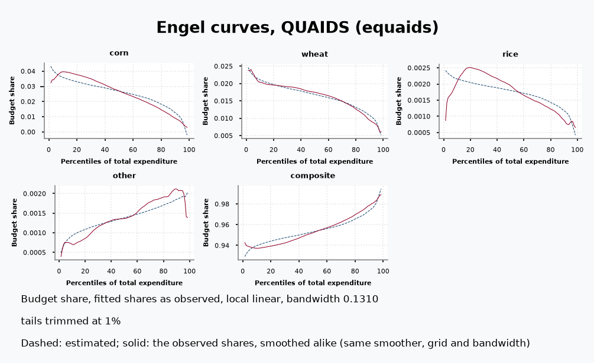
- \(\Phi\): the probability of buying the good
- \(\phi\): the standard normal density at the index of the probit of the good
- \(f\): the share of the good predicted by the model
- \(\delta\): the coefficient of the selection term of the good
The parabolas follow the observed shares over most of the
distribution. They part at the bottom for corn and rice, whose observed
shares rise among the poorest households before they fall, a hump that a
parabola in \(r\) cannot draw, and at
the very top for the other cereals. Under selection the
curves are those of the expected shares, \(\Phi f + \delta\phi\), at the means of the
variables of the probits too, and no turning point is marked; under
vce(bootstrap) the band comes from the curves of the
replications themselves, the delta method with the bootstrap variance of
the parameters failing near the boundary of Ray’s scaling.
lnx puts log expenditure on the horizontal axis,
noturn drops the turning points, noci the
bands, data() saves the curves as a dataset and
saving() the graph; the graph is a graph of the session,
which the Graph Editor opens.
5.9 Reporting the results
The reporting options of §1.4 apply: stars marks the
elasticities with significance stars, each table followed by its
standard errors; saveres() writes all the tables of the
display to one file, whose extension sets the format; dec()
sets the decimals (4 by default) and notable estimates
without displaying. snames() gives short names to the
goods, dislas(0) hides the last good from the tables, which
keep it in e(), dregres(1) adds the table of
the coefficients and noelastse skips the standard errors of
the elasticities. All of these can be given on replay, without a new
estimation:
. equaids, elasticities(reference)
. equaids, stars saveres(equaids_tables.rtf) notableThe matrices stay in e():
matrix list e(elas_uw) lists Table 3 of the households,
rows the goods and columns the prices. test and
lincom read e(b) and e(V), a
coefficient being named by its equation:
. test [lambda]lambda_1 [lambda]lambda_2tests that the first two goods have no quadratic term.
predict gives the fitted shares and the elasticities of
each household, with the syntax of §3.7:
predict eu*, uncompensated good(corn) creates the
elasticities of corn in each price, stdp their standard
errors; their weighted mean is the type hhmean.
5.10 The dialog box
Statistics ▸ DESYCO ▸ AIDS and QUAIDS demand systems
(equaids), or db equaids, opens the box;
db equaidsdiag opens it with Action set to the
diagnostic. Its Action selects the estimation
(equaids) or the diagnostic (equaidsdiag, the
controls of the estimation only greyed out), from the same fields. Its
tabs are those of the box of the Stata module, the Reporting tab
last:
- Model: the shares, the prices and total expenditure
— in levels or in logarithms —, the short names of the goods, QUAIDS or
AIDS, the demographics, \(\alpha_0\),
and the variables of
pimpute(); - Selection: the correction for the households that do not buy, the goods to correct, and the variables of the probits only, for every corrected good or good by good, each good chosen in the list of the shares of the Model tab;
- if/in and Weights;
- SE/Robust: the variance estimator, and the replications, seed and design of the bootstrap;
- Estimation: the tolerance and the number of iterations;
- Diagnostic:
sensitivityand the values of \(\alpha_0\), forequaidsdiag; - Reporting: the type of elasticities and the
household size, the confidence level, the decimals, the tables to add,
the stars, the file of
saveres()andnotable.
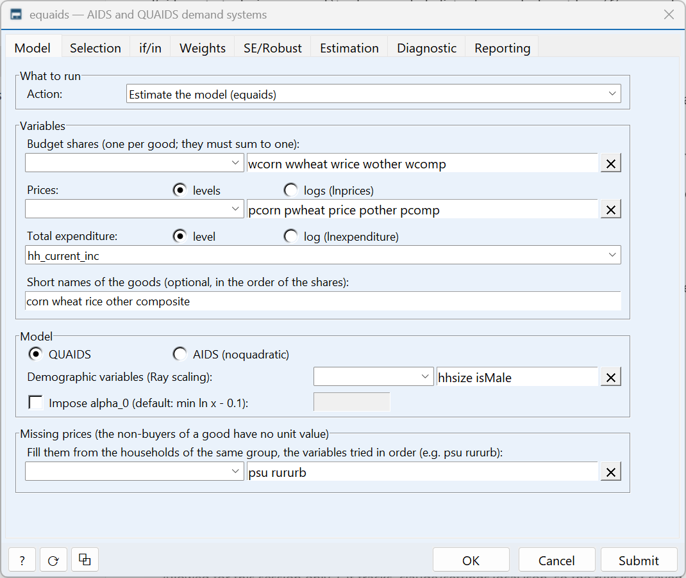
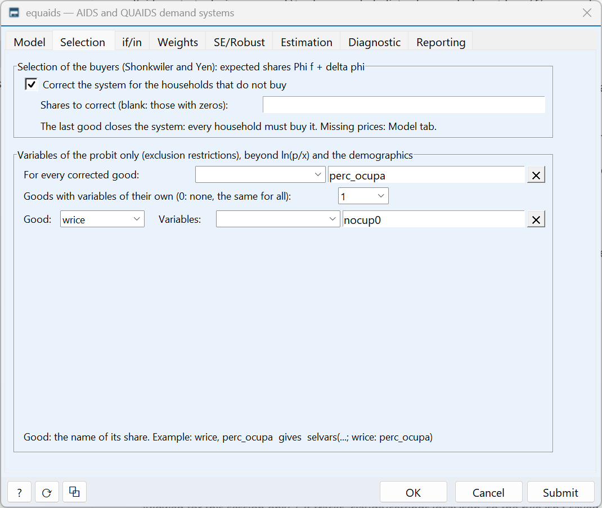
OK runs the command and closes the box;
Submit runs it and keeps the box open; the command
appears in the Review panel. From help equaids, run in
dialog box under an example opens the box filled with it.
5.11 Earlier programs
AIDS and QUAIDS have been estimated in Stata for about twenty years, by programs that each solved part of the problem (Araar 2026c):
| Program | Estimator | Elasticities and their standard errors |
|---|---|---|
an evaluator for nlsur (Poi 2002, 2008) |
written by the user | written by the user |
quaids (Poi 2012) |
nlsur, iterated FGNLS; AIDS, QUAIDS, Ray’s scaling |
at the means or for one observation; delta method with a numerical Jacobian; no weights |
aidsills (Lecocq and Robin 2015) |
iterated linear least squares (Blundell and Robin 1999), instruments for prices and expenditure | at the weighted means; a numerical Jacobian |
wquaids (Araar et al. 2018) |
quaids with analytic weights |
at the unweighted means, no standard errors |
demandsys (StataCorp 2023) |
nlsur, iterated FGNLS; eight systems; weights, robust
or cluster variance |
the mean of the household elasticities, unweighted, or at the means; delta method |
equaids estimates the same model as quaids
and demandsys, by the same estimator, and reproduces their
estimates: log likelihoods to about \(10^{-14}\) and coefficients to the
precision of their convergence, on Poi’s data, on the Mexican cereals
and on the data of Lecocq and Robin (2015). It adds what the use of
these systems on household surveys asks for: the survey design; summary
elasticities that are means over the households, with standard errors
that include the sampling of the households; the observed Jacobian in
the variance; the diagnostics; and, for the goods that many households
do not buy, the filling of their prices and the correction of Shonkwiler
and Yen (1999) with a good bought by all closing the budget. The
analytic Jacobian makes it 15 to 21 times faster than the programs built
on nlsur in the Stata module (Araar 2026c). Users of
wquaids replace hweight(w) by
[pw=w], model(2) by noquadratic
and xfil() by saveres().
5.12 Validation
equaids in AURA reproduces the Stata module
equaids 1.2.1, whose results are kept as references in
AURA’s tests: every matrix and scalar of e() on the twelve
specifications of its version lock and two more — AIDS and QUAIDS, the
demographics, the weights, the clusters, the survey design, the
individuals, pimpute(), selection, the
conventional variance, the prices in logarithms — the estimates to \(10^{-10}\) and the variances to \(10^{-9}\) in relative terms, but those that
the Stata module takes by central differences on the Mexican cereals
(§5.4), where AURA’s exact derivatives are checked against differences
of small steps, extrapolated; the replications of the bootstrap, drawn
as Stata draws them, to \(10^{-14}\);
the reports of equaidsdiag and their r() on
five specifications; and the Engel curves and their r() on
ten. The Stata module was itself validated against the influence
function computed by brute force, bootstraps of the whole procedure
under simple random sampling, sampling weights and a survey design, and
Monte Carlo experiments on populations generated by the model, with and
without non-buyers (Araar 2026c).
5.13 Stored results
equaids stores in e():
| Result | Content |
|---|---|
e(N), e(ngoods),
e(ndemos) |
households, goods, demographics |
e(ll), e(anot), e(converged),
e(iter) |
the log likelihood, \(\alpha_0\), the convergence |
e(rcond), e(m0_min),
e(m0_t) |
the conditioning of the information, the smallest \(m_0(z)\), its distance to zero in standard errors |
e(b), e(V) |
the coefficients, in the parameterization of Poi (2012), and their variance |
e(b_free), e(V_free),
e(Sigma) |
the free parameters \(\theta\) and their variance, the residual covariance |
e(elas_x), e(elas_u),
e(elas_c) |
the market expenditure, uncompensated and compensated elasticities;
e(V_elas_x)… their variances |
e(elas_xw)… |
the same for the households (or the individuals); _xm…
for the reference household, _xh… for the household
mean |
e(aggshare), e(shares_m),
e(shares_h) |
the aggregate shares, the shares at the means, the mean of the predicted shares |
e(sel_delta), e(se_sel_delta),
e(sel_alpha), e(sel_diag) |
with selection: \(\delta_i\) and its standard error, the
probits, their diagnostics |
e(N_reps), e(N_reps_ok),
e(boot_b_free) |
with vce(bootstrap): the replications, those that
succeeded, their parameters |
e(vce), e(model),
e(elasticities), e(pimpute),
e(selgoods) |
the variance, AIDS or QUAIDS, the type of elasticities, the options |
help equaids lists every result.
6 The exact affine Stone index demand system (EASI)
This chapter presents the EASI demand system of Lewbel and Pendakur
(2009), its estimation by easi, and the diagnostic
easidiag. It follows the technical note of the Stata module
easi (Araar 2026b), whose results the command reproduces.
The notation is that of §1.5: goods \(i, j =
1,\dots,J\), the last one closing the budget, log prices \(\ell_i\), total expenditure \(x\), budget shares \(w_i\) and demographics \(z_t\), \(t =
1,\dots,T\). The parameters keep the letters of Lewbel and
Pendakur (2009) but one, their \(h^j_t\), written \(d^i_t\) here, \(h\) being the household.
6.1 When to use it
Use EASI when the survey gives each household the budget shares of
goods that exhaust its budget — a group of goods and the rest of the
budget as the last good will do — and prices that vary across
households: regional or seasonal price indexes, or unit values,
completed by pimpute() for the households that do not buy.
It needs more of the prices than the unit-value model, which recovers
them from the clusters, and less of the Engel curves: EASI lets them
take the shape the data ask for, a polynomial of any order in real
expenditure, where AIDS has straight lines and QUAIDS parabolas
(§1.2.5). Use it when the shape of the Engel curves matters: welfare
effects that differ between the poor and the rich, goods whose share
rises and then falls with expenditure.
Two features of the data decide how far it goes. The number of
parameters grows fast — 120 coefficients for nine goods at power 3 with
three demographics, 576 with power 5, five demographics and all the
interactions — and the price parameters are identified off the variation
of relative prices: when the prices are regional or temporal indexes,
off the number of distinct price vectors, not off the number of
households. easidiag counts them before anything is
estimated (§6.6).
6.2 The model
Lewbel and Pendakur (2009) start from the cost function
\[\ln C(p,u,z,\varepsilon) = u + \sum_i m^i(u,z)\,\ell_i + \tfrac12\sum_i\sum_j a^{ij}(z)\,\ell_i\ell_j + \tfrac12\sum_i\sum_j b^{ij}\,\ell_i\ell_j\,u + \sum_i\varepsilon_i\ell_i ,\]6.1
\[m^i(u,z) = \sum_{r=1}^{R} b^i_r u^r + \sum_t g^i_t z_t + \sum_t d^i_t z_t u,\qquad a^{ij}(z) = a^{ij}_0 + \sum_t a^{ijt} z_t ,\]6.2
whose derivatives with respect to the log prices are the Hicksian budget shares (Shephard’s lemma):
\[w_i = m^i(u,z) + \sum_j a^{ij}(z)\,\ell_j + \sum_j b^{ij}\ell_j\,u + \varepsilon_i .\]6.3
The errors \(\varepsilon_i\) are
unobserved preference heterogeneity. The polynomial in \(u\), of order \(R\) (power(), 5 by default),
gives the Engel curves their shape; the other terms are optional:
py adds the price × utility terms \(b^{ij}\), pz the price ×
demographic terms \(a^{ijt}\)
(interpz() chooses the demographics, all by default), and
zy the demographic × utility terms \(d^i_t\).
6.2.1 Implicit utility
Setting \(\ln x = \ln C\) and eliminating \(\sum_i m^i\ell_i\) with the shares gives the utility level in terms of observed variables only:
\[y = \frac{\ln x - \sum_i w_i\ell_i + \tfrac12\sum_i\sum_j a^{ij}(z)\,\ell_i\ell_j} {1 - \tfrac12\sum_i\sum_j b^{ij}\ell_i\ell_j} .\]6.4
The numerator is an affine transformation of the Stone price index — whence the name of the model — and \(y\) is log real expenditure: when every price is one, every log price is zero and \(\ln C = u\), so that utility is measured by the log of the expenditure that reaches it at those prices. Substituting it for \(u\) gives the implicit Marshallian demands,
\[w_i = \sum_{r=1}^{R} b^i_r y^r + \sum_t g^i_t z_t + \sum_t d^i_t z_t y + \sum_j a^{ij}(z)\,\ell_j + \sum_j b^{ij}\ell_j\, y + \varepsilon_i ,\]6.5
which, with the equation of \(y\), form a fixed point in \((w, y)\). Given \(y\), the shares are linear in the parameters: that is what makes linear estimation possible.
6.2.2 Restrictions
Adding-up, homogeneity and Slutsky symmetry require
\[\textstyle\sum_i b^i_r = \sum_i g^i_t = \sum_i d^i_t = 0,\quad \sum_i a^{ij} = \sum_i b^{ij} = 0,\quad \sum_j a^{ij} = \sum_j b^{ij} = 0,\quad a^{ij} = a^{ji},\ b^{ij} = b^{ji}.\]6.6
Adding-up and homogeneity are imposed by construction: the equation of the last good is dropped and the prices are normalised, \(\mathrm{np}_j = \ell_j - \ell_J\), so that \(J-1\) equations and \(J-1\) relative prices enter; the last good is recovered from the restrictions. Symmetry is imposed as linear restrictions across equations. Curvature — the negativity of the Slutsky matrix — is not imposed.
6.2.3 The elasticities
The derivatives of the shares (§1.5) come in two steps. At constant \(y\) (Pendakur 2009),
\[\left.\frac{\partial w_i}{\partial\ell_j}\right|_y = a^{ij}(z) + b^{ij}y,\qquad w^y_i \equiv \frac{\partial w_i}{\partial y} = \sum_r r\,b^i_r y^{r-1} + \sum_t d^i_t z_t + \sum_j b^{ij}\ell_j,\qquad w^z_{it} = g^i_t + d^i_t y + \sum_j a^{ijt}\ell_j .\]6.7
Then \(y\) responds to prices and expenditure. Differentiating the identity \(\ln x = \ln C(p, y, z, \varepsilon)\), which holds at every price, gives it at once:
\[\frac{\partial y}{\partial\ell_j} = -\frac{w_j}{C_y},\qquad \frac{\partial y}{\partial\ln x} = \frac{1}{C_y}, \qquad C_y = \frac{\partial\ln C}{\partial y} = 1 + \sum_i m^i_y\ell_i + \tfrac12\sum_i\sum_j b^{ij}\ell_i\ell_j ,\]6.8
with \(m^i_y = \partial m^i/\partial y\). Hence the total derivatives
\[w^x_i = \frac{w^y_i}{C_y},\qquad w^p_{ij} = a^{ij}(z) + b^{ij}y - \frac{w^y_i\,w_j}{C_y},\]6.9
and the elasticities of household \(h\), as in every model of shares (§1.5): \(e_i = 1 + w^x_i/w_i\), \(e_{ij} = -\mathbf{1}\{i=j\} + w^p_{ij}/w_i\), and the compensated ones \(e^*_{ij} = e_{ij} + w_j e_i = \big(a^{ij}(z) + b^{ij}y + w_iw_j\big)/w_i - \mathbf{1}\{i=j\}\), which satisfy the Slutsky equation by construction. The demographic elasticities are the semi-elasticities \(w^z_{it}\), at constant \(y\). \(C_y = 1\) when all log prices are zero, at the base of the price normalisation, and departs from 1 with the dispersion of relative prices; a formula that omits it is exact at that point only (§6.11).
6.2.4 Which elasticity: household, individual or market
Each household has its own elasticities, at its own prices,
expenditure and demographics. easi reports their mean over
the households, each elasticity weighted by the budget share of the good
and by a weight \(\tilde\omega_h\) that
sets the type: \(\omega_h\) for
households, the default; \(\omega_h n_h\) for
individuals, the default when hhsize() gives
the size \(n_h\); \(\omega_h x_h\) for market. For
the expenditure elasticity, with \(w^x_{ih}\) the derivative of household
\(h\),
\[\hat e_i = \frac{\sum_h\tilde\omega_h w_{ih}\,e_{ih}}{\sum_h\tilde\omega_h w_{ih}} = 1 + \frac{\sum_h\tilde\omega_h w^x_{ih}}{\sum_h\tilde\omega_h w_{ih}},\]6.10
a ratio of two means, which never divides by the share of a single household — the plain mean of the household elasticities does, and explodes when some shares are near zero. With the weights \(\omega_h x_h\) the two means are totals of spending, and the ratio is exactly the elasticity of the total demand of the population. The price elasticities are formed the same way, the demographic semi-elasticities are plain weighted means, and Engel and Cournot aggregation hold exactly for every type. The compensated elasticities carry the mean over the households of the products of the shares \(w_iw_j\), and the Slutsky matrix reported is the mean of those of the households.
These are not the elasticities of a reference household at the means of prices, expenditure and demographics: such a household depends on which mean is taken — the mean of \(\ln x\) and the log of the mean of \(x\) differ by 17% of expenditure on the Canadian data of the examples and by 51% on the Mexican data — and, \(y\) being implicit and the model nonlinear in it, the elasticity at the mean is not the mean of the elasticities.
For the individuals, the whole estimation — coefficients, variance
and means — is weighted by \(\omega_h
n_h\), as in duvm. Unlike in duvm,
hhsize() does not enter the model: to let the size of the
household shift the shares, add it to demographics().
households and market come from the same
estimation, and easi, elasticities(market) displays the
second after the first. On the Mexican cereals of §6.5, with the survey
design (standard errors in parentheses):
| Good | Type | Expenditure | Own price |
|---|---|---|---|
| corn | households | 0.1217 (0.0385) | -0.9616 (0.0480) |
| individuals | 0.1633 (0.0440) | -0.9620 (0.0515) | |
| market | 0.0866 (0.1397) | -1.0170 (0.0813) | |
| wheat | households | 0.4758 (0.0374) | -0.7120 (0.0658) |
| individuals | 0.4501 (0.0407) | -0.6846 (0.0650) | |
| market | 0.4304 (0.0403) | -0.6164 (0.0919) | |
| other goods | households | 1.0276 (0.0013) | -1.0223 (0.0021) |
| individuals | 1.0294 (0.0016) | -1.0232 (0.0025) | |
| market | 1.0159 (0.0027) | -1.0135 (0.0023) |
The types differ most for corn, a necessity whose share falls fast with expenditure: its expenditure elasticity is 0.12 for the households, 0.16 for the persons and 0.09 for the market, whose mean gives the most weight to the households that spend most. The composite of the other goods, 96% of the budget, hardly moves. The standard errors differ as much: a mean weighted by expenditure rests on fewer households, and the market elasticity of corn has a standard error more than three times that of the households.
6.3 Estimation
6.3.1 Iterated linear three-stage least squares
Lewbel and Pendakur (2009) recommend iterated linear three-stage
least squares, which easi implements. The \(J-1\) equations share the same regressors
and instruments. With \(X\) the design,
\(Z\) the instruments, \(\Omega\) the diagonal matrix of the
weights, \(\hat X = Z(Z'\Omega
Z)^{-1}Z'\Omega X\), \(S = \hat
X'\Omega\hat X\), \(Y\) the
shares and \(Q\) the matrix of the
symmetry restrictions, one 3SLS fit is:
- restricted 2SLS: solve the bordered system \(\begin{pmatrix} I\otimes S & Q' \\ Q & 0\end{pmatrix}\begin{pmatrix}\beta\\ \mu\end{pmatrix} = \begin{pmatrix}\operatorname{vec}(\hat X'\Omega Y)\\ 0\end{pmatrix}\), \(\mu\) the multipliers;
- residual covariance: \(\hat\Sigma_{ij} = \hat\varepsilon_i'\Omega\hat\varepsilon_j/(n_{\text{eff}} - K)\), \(K\) the coefficients per equation;
- GLS step: replace \(I\otimes S\) by \(\hat\Sigma^{-1}\otimes S\) and solve again.
The outer loop updates the implicit utility from the current coefficients,
\[y \leftarrow \frac{y^{\text{stone}} + \tfrac12\,\ell'A(z)\ell}{1 - \tfrac12\,\ell'B\ell},\qquad y^{\text{stone}} = \ln x - \sum_i w_i\ell_i ,\]6.11
\(A(z) = [a^{ij}(z)]\) and \(B = [b^{ij}]\), until the change of the
coefficients — of \(y\) when there is
no interaction — falls below tolerance() (\(10^{-6}\) by default), or after
iterate() passes (100); a last fit is run at the converged
\(y\).
Two choices of the Stata module, kept in AURA, go beyond the
reference code. \(\hat\Sigma\)
is iterated to convergence within each fit: for a singular
system the estimator is invariant to the equation dropped only if it is
the maximum-likelihood one (Barten 1969); with a single step, as in the
R package and in reg3, dropping another good moves the
price elasticities of the Canadian data by up to 0.20. And the
restriction rows are scaled to the trace of the block before
solving: with small budget shares the bordered matrix mixes entries of
order \(10^7\) with the ±1 of the
restrictions, and an unscaled solve returns missing values; the scaling
changes neither the constraints nor the covariance. AURA solves the
bordered system by its Schur complement, \((\hat\Sigma^{-1}\otimes S)^{-1} =
\hat\Sigma\otimes S^{-1}\), which never forms the stacked system:
the reference specification of the examples, nine goods and 576
coefficients, is estimated with all its standard errors in less than a
second.
6.3.2 The instrument
\(y\) depends on the shares, hence
on the errors: it is endogenous. Following Pendakur (2009),
easi instruments it with \(\tilde
y = \ln x - \sum_i\bar w_i\ell_i\), the Stone index deflated by
the mean shares, in two passes: it iterates with instruments built from
\(\tilde y\), forms once \(\tilde y^* = (\tilde y + \tfrac12
\ell'A(z)\ell)/(1 - \tfrac12 \ell'B\ell)\) with its
powers and interactions, and iterates again with that instrument fixed.
The instruments are the demographics, the relative prices, their
interactions, the powers of \(\tilde
y^*\), its interactions with the demographics and the prices, and
a constant.
6.3.3 Weights and the sample
The weights enter every moment: \(\hat X\), \(S\), \(\hat\Sigma\) and all the means of the elasticities. Analytic and sampling weights are normalised to sum to the number of households; importance weights are used as they stand; frequency weights are refused (§1.4). A missing budget share is read as 0 when the other shares of the household sum to 1, a household that does not buy the good; otherwise the household leaves the sample, as one whose shares do not sum to 1. The data check at the head of the output says how many households each rule touches (§1.4).
6.3.4 Missing prices
Without pimpute(), a household with a missing price
leaves the sample — with unit values as prices, exactly the households
that do not buy, which makes any correction for them impossible.
pimpute(varlist) replaces a missing
log price by the weighted mean of the log prices of the households of
the same group of the first variable — the PSU, typically; where nobody
in the group has a price, the group of the next variable is used — the
stratum, or the urban or rural area — and so on. The households still
without a price leave the sample, and the means are computed again until
the sample no longer changes, so that the donors are the households of
the final sample. The notes of the data check count the prices filled at
each level.
The analytic standard errors include the imputation: a donor moves
the mean of its group, hence the prices it fills, and its influence
function carries that change through the system, the probits and the
elasticities. The term sums to zero within each group, so that it
cancels under vce(cluster) or vce(svy) at the
level of the first grouping variable. vce(bootstrap) fills
the prices again on every replication, and predict and
estat engel fill them the same way.
6.3.5 Households that do not buy
- \(R^2\): the uncentred R-squared of a regression, computed on sums of squares around zero
The finer the goods, the more households buy none of some of them
during the survey: a zero share is not a share of the model, whose
errors are normal. Option selection corrects the system by
the two-step method of Shonkwiler and Yen (1999), applied to EASI as by
Zhen et al. (2014). For each corrected good \(i\) — by default every good with zero
shares but the last, or those of selgoods() — the latent
share is the share of the model, \(w^*_i =
f_i(y, \ell, z) + \varepsilon_i\), and the household buys when
\(s_i'\pi_i + \upsilon_i > 0\),
with
\[s_i = (1,\ \ell_1 - \ln x,\ \dots,\ \ell_J - \ln x,\ z,\ z^e_i),\]6.12
\(z^e_i\) the variables of the
probit only (selvars(), the exclusion restrictions). With
\((\varepsilon_i, \upsilon_i)\) jointly
normal and \(\delta_i =
\operatorname{Cov}(\varepsilon_i, \upsilon_i)\),
\[\mathrm{E}[w_i\mid s_i, y] = \Phi(s_i'\pi_i)\,f_i + \delta_i\,\phi(s_i'\pi_i),\]6.13
and \(\delta_i = 0\) is the absence of selection. The last good closes the system, \(\mathrm{E}[w_J] = 1 - \sum_{i<J}\mathrm{E}[w_i]\): every household must buy it — place last the rest of the budget, or a good everybody buys. The probit is written in prices relative to expenditure, so that the expected shares are homogeneous of degree zero. A weighted probit is estimated for each corrected good, then the system on all the households, buyers or not, the regressors and instruments of a corrected equation being those of EASI times \(\Phi_i\), and \(\phi_i\). Symmetry is imposed on the latent shares \(f\).
\(y\) is computed from the shares.
For a non-buyer, the observed zero is not the latent share, and the
Stone index built on it is off by \(\ell_i
w^*_i\); easi replaces the zero by the expectation
of the latent share given no purchase, \(\tilde w_i = f_i - \delta_i\,\phi_i/(1 -
\Phi_i)\), the last good absorbing the difference — a fixed point
in \(y\), solved at each step. The
elasticities are those of the expected demand of all the households,
with the expected shares as denominators, so that Engel and Cournot
aggregation hold exactly again.
\(\delta_i\) is identified by the
variables of the probit only or, without them, by the nonlinearity of
the normal distribution alone: \(\phi_i\) is then close to a combination of
the other regressors of its equation. easi measures how
close by the variance inflation of \(\delta_i\),
\[\mathrm{VIF}(\delta_i) = \frac{1}{1 - R^2_i},\]6.14
\(R^2_i\) the uncentred \(R^2\) of \(\phi_i\) on the other regressors of the
equation. Above 10, \(\delta_i\) rests
on little more than the curvature of the probit, and easi
warns (§6.7). The selection options — selection,
selgoods(), selvars() and
pimpute() — have the names and the rules of those of
duvm.
6.4 Variance
6.4.1 The coefficients
\(\hat\beta\) is linear in the
moments, \(\hat\beta =
P\operatorname{vec}(\hat X'\Omega Y\hat\Sigma^{-1})\), with
\(P\) the leading block of the inverse
of the bordered matrix, and its sandwich variance is \(P\hat B P\), \(\hat B = \sum_h\xi_h\xi_h'\), \(\xi_h =
\omega_h(\hat\Sigma^{-1}\hat\varepsilon_h\otimes\hat X_h')\),
\(\hat\varepsilon_h\) the residuals of
household \(h\) and \(\hat X_h\) its row of \(\hat X\). vce(robust), the
default, applies \(n/(n-1)\), \(n\) the number of households;
vce(cluster clustvar) sums the scores
within clusters and applies \(n_c/(n_c-1)\), \(n_c\) the number of clusters;
vce(svy) reads the design declared with
svyset, sums the scores within PSUs, centres the PSU totals
on their stratum mean and weights stratum \(\mathcal S\) by \((1-f_{\mathcal S})\,n_{\mathcal S}/(n_{\mathcal
S}-1)\), \(n_{\mathcal S}\) its
number of PSUs and \(f_{\mathcal S}\)
its sampling fraction. vce(conventional) is the
homoskedastic covariance \(P\) of the R
package. A generated-regressor term completes the
Jacobian: the design contains \(y\),
itself a function of \(\beta\) through
\(\ell'A(z)\ell\) and \(\ell'B\ell\), and easi
adds \(\partial y/\partial\beta\) in
closed form.
The default matters. Against a bootstrap of the whole iterated procedure on the Canadian data, the bootstrap standard errors of the coefficients on \(y\), those that shape the Engel curves, are 1.23 times the conventional ones on average and up to 1.69 times; the robust ones are within 1% on average (Araar 2026b). On clustered survey data the design matters as much. On the Mexican cereals, the standard errors of the expenditure elasticities:
| Good | vce(robust) |
vce(svy) |
|---|---|---|
| corn | 0.0287 | 0.0385 |
| wheat | 0.0288 | 0.0374 |
| other goods | 0.0009 | 0.0013 |
Ignoring the PSUs and the strata understates them by a quarter.
Against a bootstrap of the PSUs within the strata, the standard errors
of the coefficients are 1.07 times those of vce(robust) on
average and up to 1.33 times; those of vce(svy) and
vce(cluster psu) are within 2% on average (Araar
2026b).
6.4.2 The elasticities: ratios of two estimators
Every reported elasticity is a ratio of two means over the households, \(\bar N/\bar M\), minus one on the diagonal of the price tables — \(\hat e_i - 1 = \overline{w^x_i}/\bar w_i\) for the expenditure elasticity — and both means are estimated twice over: the coefficients inside them are estimated, and the households they are taken over are a sample. Differentiating with respect to the coefficients alone keeps one term of the variance of three:
\[\operatorname{Var}\Big(\frac{\bar N}{\bar M}\Big) = \frac{\operatorname{Var}(\bar N)}{\bar M^2} + \frac{\bar N^2}{\bar M^4}\operatorname{Var}(\bar M) - \frac{2\bar N}{\bar M^3}\operatorname{Cov}(\bar N,\bar M),\]6.15
and the two others are not small: the numerator and the denominator
move together, and the first term alone overstates the standard error of
a good with a small share. easi gives each elasticity its
full influence function,
\[\mathrm{IF}_h(\hat e) = \frac{\tilde\omega_h}{\sum_h\tilde\omega_h}\Big[\frac{N_h - \bar N}{\bar M} - \frac{\bar N}{\bar M^2}(M_h - \bar M)\Big] + G\,\mathrm{IF}_h(\hat\beta),\]6.16
the bracket for the two sample means, \(G\) the analytic gradient of the elasticity
with respect to the coefficients — \(y\) moving with them — and \(\mathrm{IF}_h(\hat\beta) = P\xi_h\),
aggregated by the estimator of vce(). The last good is
treated like any other: its elasticity is a function of \(\beta\) through the restrictions, and the
covariances between equations enter as they should.
Under selection, the influence function stacks the
system and the probits: the moments of the system, plus their derivative
with respect to the probit coefficients times the influence functions of
the probits, which use the observed Hessian. e(V_sel) holds
the joint variance of the coefficients and of the probits.
These standard errors have been validated in the Stata module (Araar
2026b). Re-running the whole estimation with the weight of each
household perturbed in turn — the influence function computed by brute
force — gives the reported standard errors within 0.16%, and within 0.5%
under selection. On data generated by the model, the mean
standard error is 0.96 to 1.03 times the standard deviation of the
estimates over 700 samples, and the Wald test at 5% rejects 5.4% of the
time.
6.4.3 Bootstrap
- \(B\): the number of bootstrap replications
vce(bootstrap, reps(#) seed(#) strata() psu() svy)
estimates the full sample, then draws the households with replacement —
or the PSUs within the strata; svy takes the strata, the
PSUs and the weight from svyset — and runs the whole
procedure again on each replication: the prices filled by
pimpute(), the probits, the iterations on \(y\). The households keep their weights. The
point estimates are those of the full sample; the variance of the
coefficients and the standard errors of the elasticities are those of
the replications, 200 by default. A replication that does not converge
is dropped and counted (e(N_reps_ok)). The standard errors
carry the noise of a finite number of draws, about \(1/\sqrt{2B}\) of their value: 7% at 100
replications. The analytic standard errors are the reference when every
parameter is well identified; the bootstrap is the safer choice when one
is not, typically \(\delta\) without a
variable of the probit only.
6.5 A first estimation
The Canadian data of Lewbel and Pendakur (2009) have nine goods: food at home, food out, rent, household operation, furnishings, clothing, transport operation, recreation and personal care, the last one closing the budget. The prices and expenditure are in logarithms, normalised around a base period. A first model has power 3 and three demographics, the age of the respondent minus 40, its sex and car ownership:
. use "data/hixdata.dta", clear
. easi sfoodh sfoodr srent soper sfurn scloth stranop srecr spers, ///
lnprices(pfoodh pfoodr prent poper pfurn pcloth ptranop precr ppers) ///
lnexpenditure(log_y) demographics(age hsex carown) power(3) ///
snames(FoodHome FoodOut Rent Operation Furnishing Clothing Transport Recreation Personal)The shares are listed in the order of the prices, the last good last. The output begins with the data check:
Data check: 4,847 observations asked for
────────────────────────────┬──────────────────────────────────────────────────────────────────
│ N > 0 N < 0 N = 0 N missing Mean Min Max
────────────────────────────┼──────────────────────────────────────────────────────────────────
Budget shares │
sfoodh │ 4,840 0 7 0 0.1454 0.0000 0.6098
sfoodr │ 4,533 0 314 0 0.0736 0.0000 0.6261
srent │ 4,847 0 0 0 0.3668 0.0052 0.8895
soper │ 4,844 0 3 0 0.0712 0.0000 0.6066
sfurn │ 4,400 0 447 0 0.0397 0.0000 0.5235
scloth │ 4,811 0 36 0 0.0813 0.0000 0.4793
stranop │ 4,749 0 98 0 0.1145 0.0000 0.6020
srecr │ 4,847 0 0 0 0.0797 0.0001 0.5870
spers │ 4,832 0 15 0 0.0279 0.0000 0.2080
────────────────────────────┼──────────────────────────────────────────────────────────────────
Sum of budget shares - 1 │ 0 0 4,847 0 0.0000 -0.0000 0.0000
────────────────────────────┼──────────────────────────────────────────────────────────────────
Log prices │
pfoodh │ 2,971 1,876 0 0 -0.0479 -1.4099 0.3365
...
Log expenditure │
log_y │ 2,308 2,539 0 0 -0.1119 -2.7517 1.6649
────────────────────────────┼──────────────────────────────────────────────────────────────────
Demographics │
age │ 2,155 2,578 114 0 0.7105 -15.0000 24.0000
hsex │ 2,455 0 2,392 0 0.5065 0.0000 1.0000
carown │ 2,012 0 2,835 0 0.4151 0.0000 1.0000
────────────────────────────┴──────────────────────────────────────────────────────────────────
• All observations conform: none is recoded or dropped.The shares sum to one for every household, and the negative log
prices and expenditure are those of a normalisation around the base
period. Nine households in ten buy some furnishings; the zeros are left
in the model, which averages over them, unless selection
corrects for them (§6.3.5). Then the header:
EASI demand system Number of obs = 4,847
Goods = 9 Coef. per eq. = 15
y power = 3 Coefficients = 120
Interactions = none Mode = corrected
Elasticities = households (each household counts for its weight)
Variance = robust
Converged in 4 iteration(s), criterion = 3.669e-08 Execution time = 0.24 sEach of the eight equations has 15 coefficients — a constant, three powers of \(y\), three demographics and eight relative prices — and symmetry ties the price coefficients across equations. Mode corrected: the estimator of this chapter, not that of the R package (§6.11). The tables follow, each with its standard errors:
Table 02: Expenditure elasticities (households), d ln q / d ln x
────────────┬────────────
│ Elasticity
────────────┼────────────
FoodHome │ 0.5244
FoodOut │ 1.5396
Rent │ 0.7040
Operation │ 0.9792
Furnishing │ 1.9776
Clothing │ 1.6349
Transport │ 0.9110
Recreation │ 1.7101
Personal │ 1.0977
────────────┴────────────
Table 03: Uncompensated (Marshallian) price elasticities (households), d ln q / d ln p (rows: goods, columns: prices)
────────────┬──────────────────────────────────────────────────────────────────────────────────────────────────────
│ FoodHome FoodOut Rent Operation Furnishing Clothing Transport Recreation Personal
────────────┼──────────────────────────────────────────────────────────────────────────────────────────────────────
FoodHome │ -0.9462 0.2797 0.1795 -0.1194 0.4117 0.0740 -0.0902 -0.2359 -0.0777
FoodOut │ 0.4056 -1.5676 0.8210 0.6360 -0.4884 -1.0028 -0.8340 0.3780 0.1124
Rent │ 0.0365 0.2307 -0.9772 -0.0476 -0.0153 -0.0131 0.1824 -0.0662 -0.0343
Operation │ -0.3026 0.6945 -0.3302 -0.3592 -0.6474 -0.2230 -0.2532 0.6239 -0.1821
Furnishing │ 1.3191 -0.9500 -0.6020 -1.2266 -1.4040 0.8328 -0.1315 -0.8043 0.9888
Clothing │ -0.0171 -0.9213 -0.4005 -0.2376 0.4208 -0.1340 0.1203 0.1503 -0.6157
Transport │ -0.1754 -0.4864 0.4823 -0.1500 0.0031 0.1519 -0.7579 0.0007 0.0207
Recreation │ -0.5875 0.3279 -0.6720 0.5108 -0.3886 0.1470 -0.1048 -0.8739 -0.0690
Personal │ -0.4850 0.3282 -0.5971 -0.4725 1.4431 -1.7535 0.0601 -0.1482 0.5272
────────────┴──────────────────────────────────────────────────────────────────────────────────────────────────────Food at home, rent and transport operation are necessities, with expenditure elasticities of 0.52, 0.70 and 0.91; food out, furnishings, clothing and recreation are luxuries, furnishings most (1.98). The standard errors of Table 02-b run from 0.012 for rent to 0.049 for furnishings. A row of Table 03 is a quantity, a column a price: a 1% rise of the price of food at home lowers the quantity bought by 0.95%. Eight of the nine own-price elasticities are negative, from \(-0.13\) for clothing to \(-1.57\) for food out. The exception is personal care, the good recovered by adding-up, with \(+0.53\) and a standard error of 0.41: a 95% interval from \(-0.28\) to \(1.33\). Its price coefficients are minus the sum of those of the eight other goods, so that its variance accumulates all their covariances; it has the smallest share of the nine; and the price block is identified off 48 distinct price vectors (§6.6). EASI imposes symmetry, not curvature, and a point estimate can sit on the wrong side of zero when the data do not pin it down.
The other tables come on request, and the replay of the estimates needs no new estimation:
. easi, compensated demoelast checks starscompensated adds Table 04, the compensated price
elasticities, demoelast Table 05, the demographic
semi-elasticities, and checks the aggregation identities;
detail is the three together:
Table 05: Demographic elasticities (households), d w / d z, share semi-elasticities (rows: demographics, columns: goods)
─────────────┬────────────────────────────────────────────────────────────────────────────────────────────────────────────────────────────────
│ FoodHome FoodOut Rent Operation Furnishing Clothing Transport Recreation Personal
─────────────┼────────────────────────────────────────────────────────────────────────────────────────────────────────────────────────────────
age │ 0.0013*** -0.0005*** 0.0009*** -0.0001** -0.0001 -0.0004*** -0.0002*** -0.0008*** -0.0001***
hsex │ -0.0113*** -0.0320*** 0.0095*** 0.0177*** 0.0101*** 0.0271*** -0.0125*** -0.0254*** 0.0169***
carown │ 0.0189*** 0.0081*** 0.0355*** 0.0093*** 0.0091*** 0.0114*** -0.1060*** 0.0103*** 0.0034***
─────────────┴────────────────────────────────────────────────────────────────────────────────────────────────────────────────────────────────
* p<0.10, ** p<0.05, *** p<0.01
Aggregation identities (exact by construction)
Engel |sum_j w_j eta^x_j - 1| 2.097e-10
Cournot max_k |sum_j w_j eta^k_j + w_k| 3.664e-15The demographic elasticities are semi-elasticities of the shares: car
owners spend 10.6 points less of their budget on transport operation,
other things equal, at a standard error of 0.2 point. The two identities
hold to rounding: a residual above it would mean that the formulas are
wrong on the data at hand, and easi reports it whether or
not checks is given. The residual of Engel aggregation,
\(2\times10^{-10}\), is that of the
data: the mean departure from one of the sums of their shares.
The specification of Lewbel and Pendakur (2009) has power 5, five demographics — with a time trend and a dummy for social assistance — and all the interactions:
. easi sfoodh sfoodr srent soper sfurn scloth stranop srecr spers, ///
lnprices(pfoodh pfoodr prent poper pfurn pcloth ptranop precr ppers) ///
lnexpenditure(log_y) demographics(age hsex carown time tran) power(5) py zy pz notable ///
snames(FoodHome FoodOut Rent Operation Furnishing Clothing Transport Recreation Personal)
(easi: 4,847 households, 576 coefficients; results in e())It converges in three iterations and changes the expenditure elasticities little (food at home 0.575, furnishings 2.008); the own-price elasticities move more, furnishings from \(-1.40\) to \(-2.11\).
6.5.1 With the survey design
The Mexican cereals are a reduced ENIGH 2014: 2,477 households, 703 PSUs in 28 strata, three goods — corn, wheat and all the other goods — with the design declared:
. use "data/mex_bench.dta", clear
. easi w1 w2 w3, lnprices(lp1 lp2 lp3) lnexpenditure(lx) demographics(z1 z2) power(3) py vce(svy) ///
snames(corn wheat other)
EASI demand system Number of obs = 2,477
Goods = 3 Coef. per eq. = 10
y power = 3 Coefficients = 20
Interactions = py Mode = corrected
Weights = pweight = sweight
Elasticities = households (each household counts for its weight)
Variance = svy
Converged in 2 iteration(s), criterion = 1.485e-10 Execution time = 0.04 sThe weight comes from the design, as do the PSUs and the strata of the variance. Corn is a strong necessity (0.12), wheat a necessity (0.48), and the own-price elasticities are \(-0.96\) and \(-0.71\) (§6.2.4).
6.6 Diagnostics
- \(R^2\): the R-squared of the first-stage regression of the implicit utility, at its starting value, on a constant, the relative log prices and its instrument
Two things make an EASI system fail to converge, or converge to
something meaningless: a regressor with almost no variance, and a
near-linear dependency among the regressors. The iterations show a
criterion that will not fall, and nothing else. easidiag,
with the syntax of easi, computes everything from the data
and from the design evaluated at the starting point, \(y = y^{\text{stone}}\), and reports eight
sections, nine with selection: the admissibility of the
data; the standard deviation and variance inflation of every column of
the design, then the condition indexes of Belsley, Kuh and Welsch (1980)
and the columns of each near-dependency; the categorical demographics;
the centring of expenditure and prices and the conditioning of \(X'X\); the structural sources of a flat
objective — the conditioning of the polynomial in \(y\) by power, the distinct price vectors,
the first-stage \(R^2\) of \(y\); the scale of the shares and of the
relative prices; the convergence of the fixed point, predicted from two
steps; and the ranks of identification. A verdict closes the report.
The help of easidiag runs the Mexican cereals twice,
with the logarithms as they come from the survey, then centred:
. easidiag w1 w2 w3, lnprices(lp1_raw lp2_raw lp3) lnexpenditure(lx_raw) demographics(z1 z2) power(3) ///
snames(corn wheat other)
2. Screening of the design columns
(evaluated at the starting point y = Stone index; no estimation)
column sd VIF
y1 0.8662 11486.2 collinear
y2 14.3686 45596.7 collinear
y3 181.8343 11537.8 collinear
near-dependency, condition index 3928 :
_cons y1 y2 y3
4. Normalisation and conditioning
variable mean sd |mean|/sd
lnexpenditure 8.2438 0.8124 10.15 not centred
price of corn 2.7878 0.4868 5.73 not centred
price of wheat 3.8502 0.4282 8.99 not centred
price of other 0.0000 0.0000 0.00 flat
variables not centred (|mean|/sd > 2) 3 CENTRE
cond(X'X) as given 1.543e+07 ILL-COND
cond(X'X) if centred 2.383e+05
Verdict: 4 point(s) to look at.
1. 1 near-dependency(ies) among the design columns, named above
2. 3 variable(s) are not centred; subtract their means
3. ill-conditioned design; the cause is the near-dependency named above, not the scaling
4. the y polynomial is ill-conditioned at power(3); centre y or lower the powerEASI is written for prices and expenditure measured around a base period. In raw levels, \(y\) sits far from zero, the columns \(1, y, y^2, y^3\) are nearly collinear, and the report names them. With the means subtracted, the same model reads:
. easidiag w1 w2 w3, lnprices(lp1 lp2 lp3) lnexpenditure(lx) demographics(z1 z2) power(3) ///
snames(corn wheat other)
cond(X'X) as given 4.325e+01 ok
cond at the chosen power(3) 1.653e+01 ok
contraction factor |y2-y1|/|y1-y0| 0.0008 ok
iterations predicted to reach 1.0e-06 3
Verdict: nothing to flag. The specification should estimate cleanly
in about 3 iterations.On the Canadian data, the report of the model of §6.5 flags one point, which no table of the estimates shows:
distinct price vectors 48 / 4847 FEW
price parameters in the symmetric A block 36
Verdict: 1 point(s) to look at.
1. only 48 distinct price vectors for 36 price parametersThe prices of these data take 48 distinct values across the households: the 36 free price parameters are identified off 48 price vectors, not off 4,847 households. The report also predicted the convergence: 4 iterations, as observed. What to do with each finding:
| The report says | What it means | What to do |
|---|---|---|
| section 4: not centred; cond(X’X) large as given, small if centred | prices or expenditure in raw levels | subtract the means of log expenditure and of the log prices, or normalise to a base period |
| section 5: polynomial TOO HIGH at the chosen power, even centred | the polynomial in \(y\) is too long for its range | lower power(); each power costs a factor of about four
in conditioning when centred |
section 2: near-dependency with _cons and a set of
dummies |
an exhaustive set of dummies | drop one category |
| section 2: near-dependency with a finite index, a group of interactions | mild redundancy among interactions | a warning: if their standard errors are large, drop the interaction that carries no economics |
| section 3: rare, merge it | a binary demographic with a cell below 2%, whose price interactions rest on a few households | merge the category, or leave it out of interpz() |
| section 3: entered linearly (cardinal) | a variable with a few integer levels enters as a number | replace it by dummies, unless the effect is proportional to the code |
| section 5: distinct price vectors FEW | regional or temporal price indexes | keep the price block lean: no pz, or
interpz() on one or two demographics |
| section 6: mean share SMALL | every elasticity of the good divides by a share near zero | aggregate the good with a neighbour, or expect wide intervals |
| section 7: Phi \(\le 0\), or a contraction factor near one | the denominator of \(y\), \(1 - \tfrac12 \ell'B\ell\) (Phi in the report), approaches zero: the fixed point crawls | lower power() or drop py; look at the
households with extreme relative prices |
| section 8: rank DEFICIENT | a regressor is an exact function of the others | remove one column of the group named in section 2 |
easidiag accepts the weights, hhsize(),
pimpute() and the selection options of easi,
ignores the options of the estimation only, and says which. It stores
its counts and key scalars in r(): r(nprob),
r(cond_raw), r(cond_ctr),
r(ratio), r(iter), r(phimin),
r(wmin), the matrices r(var) and
r(good), and, with selection,
r(selgoods) and r(sel_diag).
6.7 The households that do not buy, in practice
- \(R^2\): the pseudo-R-squared of the probit of a good: one minus the ratio of its log likelihood to that of a probit with a constant only
- \(\phi\): the selection term of a good: the standard normal density at the index of its probit
In the Mexican cereals, 9% of the households buy no corn and 15% no wheat. The diagnostic runs the probits first, with the age and the sex of the head of the household in the probits only:
. easidiag w1 w2 w3 [pw = sweight], lnprices(lp1 lp2 lp3) lnexpenditure(lx) ///
demographics(z1 z2) power(3) selvars(age isMale) ///
snames(corn wheat other)
9. Selection of the buyers (Shonkwiler-Yen probits)
(the probits the estimation runs; VIF(delta) at y = Stone index)
good buyers % pseudo-R2 separated probit-only VIF(delta)
corn 91.3 0.1315 0 2 23.7 WEAK
wheat 84.7 0.0170 0 2 104.0 WEAKThe probit of wheat barely separates the buyers from the others (pseudo-\(R^2\) 0.017), and \(\phi\) stays close to a combination of the other regressors: \(\mathrm{VIF}(\delta)\) is 104 for wheat and 24 for corn, both above 10 — and 1,982 for wheat without the two variables of the probit only. The estimation says the same under its header:
. easi w1 w2 w3, lnprices(lp1 lp2 lp3) lnexpenditure(lx) demographics(z1 z2) power(3) ///
vce(svy) selvars(age isMale) ///
snames(corn wheat other)
Selection of the buyers (Shonkwiler and Yen 1999)
E[w_i] = Phi_i f_i + delta_i phi_i, one probit per corrected good
─────────────┬────────────────────────────────────────────────────────────────
│ Buyers % Pseudo R2 Perfect VIF(delta) delta z
─────────────┼────────────────────────────────────────────────────────────────
corn │ 91.3 0.132 0 23.7 0.0304 1.39
wheat │ 84.7 0.017 0 104.0 -0.0137 -0.89
─────────────┴────────────────────────────────────────────────────────────────
Probit-only variables: corn: age isMale; wheat: age isMale;
...
y completed for the non-buyers (the households with a zero share of a
corrected good): 23.5% of the households, mean |change| 0.0152, 0.019 sd of y
warning: corn wheat: delta is weakly identified; leave the good uncorrected
with selgoods(), add a variable of the probit only in selvars(), or use
vce(bootstrap)selvars() implies selection. Neither \(\delta\) differs from zero, and the
completion of \(y\) touches the 23.5%
of households that buy no corn or no wheat, moving their \(y\) by 0.019 standard deviations. The
correction moves the elasticities of the households less than their
standard errors, and those of the market more:
| Expenditure, uncorrected | Expenditure, corrected | Own price, uncorrected | Own price, corrected | ||
|---|---|---|---|---|---|
| households | corn | 0.1214 | 0.1136 (0.039) | -0.9647 | -0.9611 (0.042) |
| wheat | 0.4751 | 0.4794 (0.037) | -0.7106 | -0.7153 (0.064) | |
| market | corn | 0.0679 | 0.0984 | -0.9512 | -1.0102 |
| wheat | 0.4181 | 0.4277 | -0.5881 | -0.6227 |
With \(\delta\) weakly identified, a first-order variance may not be enough, and the bootstrap of the whole procedure is the safer choice:
. easi w1 w2 w3, lnprices(lp1 lp2 lp3) lnexpenditure(lx) demographics(z1 z2) power(3) ///
selvars(age isMale) vce(bootstrap, reps(50) seed(1) svy) ///
snames(corn wheat other)The estimates are those of the linearized run, the standard errors those of 50 replications of the PSUs within the strata: 0.046 for the expenditure elasticity of corn, against 0.039 linearized, 0.036 for its own-price elasticity, against 0.042, and a \(z\) of 1.76 for \(\delta\) of corn, against 1.39. In the Stata module, 500 replications put the survey standard errors of \(\delta\) 10% above the bootstrap ones on the median, and up to 29% (Araar 2026b). Take several hundred replications in an application.
Unit values as prices. When the prices are unit
values, the households that do not buy have none. The help of
easi removes them from the example data, then fills them
with pimpute():
. replace lp1 = . if w1 == 0
. replace lp2 = . if w2 == 0
. easi w1 w2 w3, lnprices(lp1 lp2 lp3) lnexpenditure(lx) demographics(z1 z2) power(3) ///
vce(svy) pimpute(psu strata) selection ///
snames(corn wheat other)The data check counts the missing prices in orange, households kept but recoded, and says how they were filled:
• Missing lp1 filled by pimpute(): 220 from psu, 10 from strata.
• Missing lp2 filled by pimpute(): 407 from psu, 10 from strata.The mean log price of the other households of the PSU fills most of
them; for ten households of each good, nobody in the PSU buys it, and
the price comes from the stratum. Without variables of the probit only,
\(\mathrm{VIF}(\delta)\) rises to 35
for corn and 2,721 for wheat, and easi warns again.
6.8 Engel curves
The Engel curve of a good is its budget share as a function of total expenditure. In EASI it is the model’s own function: given the prices and the demographics, the fixed point in \((w, y)\) gives the shares at any level of expenditure.
. easi sfoodh sfoodr srent soper sfurn scloth stranop srecr spers, ///
lnprices(pfoodh pfoodr prent poper pfurn pcloth ptranop precr ppers) ///
lnexpenditure(log_y) demographics(age hsex carown) power(3) notable ///
snames(FoodHome FoodOut Rent Operation Furnishing Clothing Transport Recreation Personal)
. estat engel
. estat engel, asobserved addobservedestat engel draws the curves of all the goods, one panel
per good, against the percentiles of total expenditure. By default,
atmeans, the demographics and the prices are held at their
weighted means, and the fixed point is solved at each point of the grid:
the curve is exact, and n(), the number of points, is a
resolution rather than a smoothing parameter. The band is the
delta-method confidence interval of the fitted share. A polynomial in
\(y\) bends near the ends of its range,
so trim() drops 1% of each tail of the grid by default.
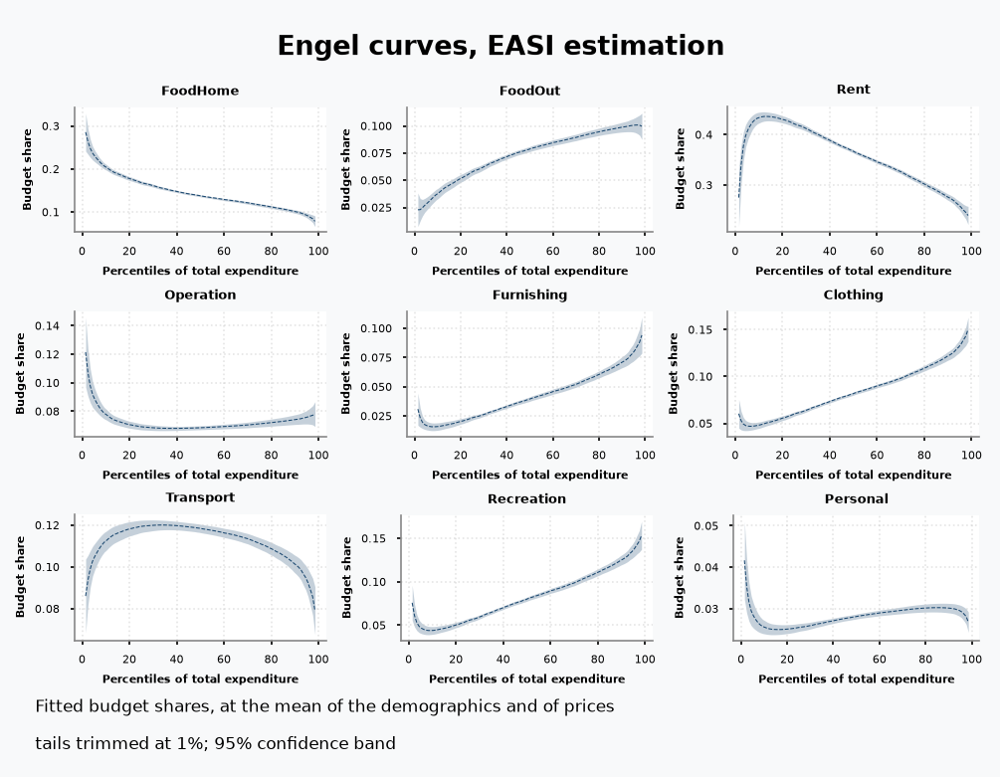
The share of food at home falls from 0.28 to 0.08 across the distribution, and the shares of food out, furnishings, clothing and recreation rise: the necessities and luxuries of Table 02. Rent and transport operation rise among the poorest households and fall beyond, curves that the straight lines of AIDS could not draw. The bands are narrow where the households are many and widen at the tails.
asobserved traces instead the fitted shares of the
households, their demographics and prices as observed, smoothed against
expenditure by a local linear regression, whose bandwidth follows the
rule of thumb of Fan and Gijbels (1996) unless bwidth() is
given; one bandwidth serves every panel. These curves carry the
covariation of the demographics and of the prices with expenditure.
addobserved adds, in each panel, the observed budget shares
smoothed by the same local linear regression on the same grid, a solid
curve; the estimated curve does not change. With
asobserved, the two curves share the bandwidth and compare
directly: where they part, the model does not fit the data.
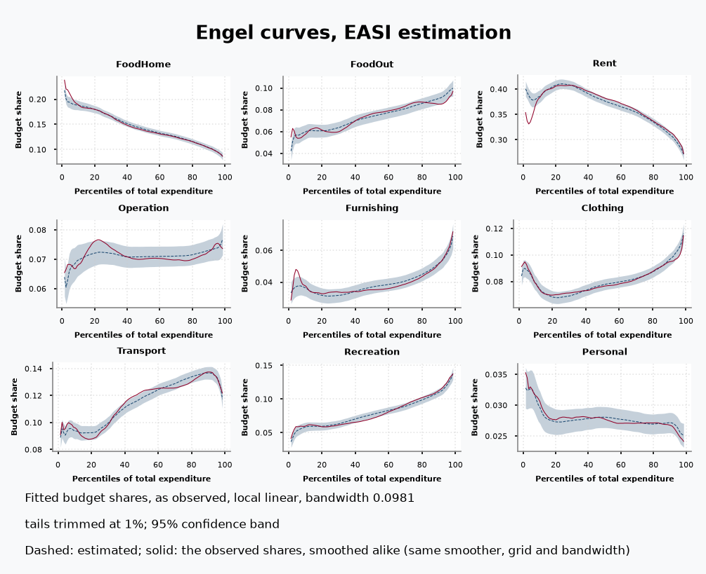
The fitted and observed curves agree over most of the distribution,
within the band for most goods. They part at the lowest percentiles —
rent, food at home, furnishings — at the boundary, where the polynomial
and the smoother are both least reliable, and the share of household
operation shows a hump near the 20th percentile that the power-3
polynomial smooths away. At the means, addobserved takes
the rule of thumb computed on the shares of the first good, or
bwidth(); the estimated curve then holds the demographics
and prices at their means and the observed one does not. After
selection, the curves are those of the expected shares, the
probits at the means too, the observed shares hold the zeros of the
non-buyers, and the band includes the estimation of the probits.
data() saves the curves as a dataset, saving()
the graph, noci removes the bands; the graph is a graph of
the session, which the Graph Editor opens.
Household by household, predict.
. predict double what*, shares
. predict double yhat, yshares, the default, gives the fitted share of each
good, one variable per good, the last one by adding-up, so that they sum
to one; residuals the observed minus the fitted shares;
y the implicit utility. Everything is recomputed from
e(b), and the predictions exist outside the estimation
sample. After selection, shares are the
expected shares, latent with shares gives the
latent shares \(f\), and y
is the completed implicit utility. expenditure,
uncompensated and compensated give the
elasticities of each household, with the syntax of §3.7: the
semi-elasticities of the model at its implicit utility, divided by its
fitted share, so that their mean weighted by the fitted shares is the
elasticity of the households of easi; stdp
gives their standard errors, \(y\) held
fixed. They are not yet available after selection.
6.9 Reporting the results
The reporting options of §1.4 apply: stars marks the
elasticities with significance stars, each table followed by its
standard errors; saveres() writes all the tables of the
display to one file, whose extension sets the format; dec()
sets the decimals (4 by default) and notable estimates
without displaying. snames() gives short names to the
goods, used to head the tables. dislas(0) hides the last
good from the tables, which keep it in e(), and
dregres(1) adds the table of the coefficients.
noelastse skips the standard errors of the elasticities and
their tables. All of these can be given on replay, without a new
estimation:
. easi, compensated notable
. easi, saveres(easi_tables.rtf) notable
. easi, stars saveres(easi_tables.xlsx) notableThe matrices stay in e():
matrix list e(elast_price_nc) lists Table 03, rows the
goods and columns the prices. test and lincom
read e(b) and e(V), a coefficient being named
by its equation, as in Stata:
. test [sfoodh]hsex [sfoodr]hsex
. lincom [sfoodh]hsex - [sfoodr]hsex6.10 The dialog box
Statistics ▸ DESYCO ▸ EASI demand system (easi), or
db easi, opens the box. Its Action selects 1 –
Estimation (easi) or 2 – Diagnostic
(easidiag, the controls of the estimation only greyed out),
from the same fields. Its tabs are those of the box of the Stata
module:
- Main: the shares, the prices and total expenditure — in levels or in logarithms —, the demographics and the short names of the goods; on the right, the type of elasticities and the household size, the power and the interactions, the variance estimator, and the replications, seed and design of the bootstrap;
- Non-buyers: the variables of
pimpute(), the correction for the households that do not buy, the goods to correct, and the variables of the probits only, for every corrected good or good by good; - Results: the decimals, the tables to add, the
stars, the file of
saveres(),notableandcompat.
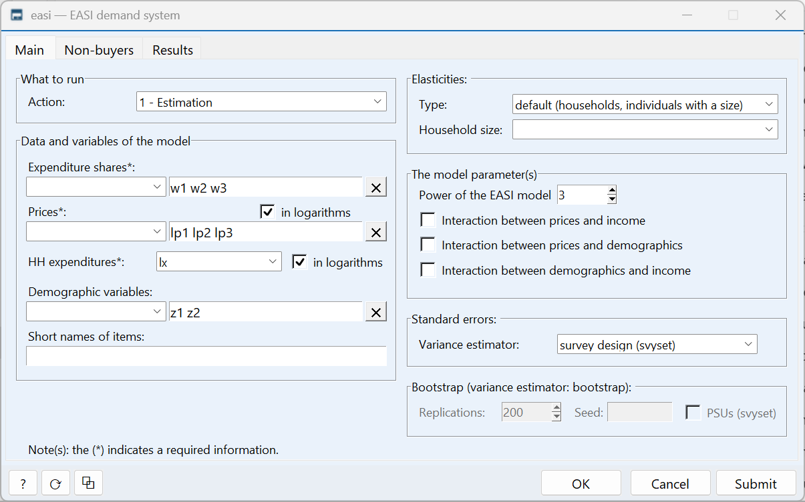
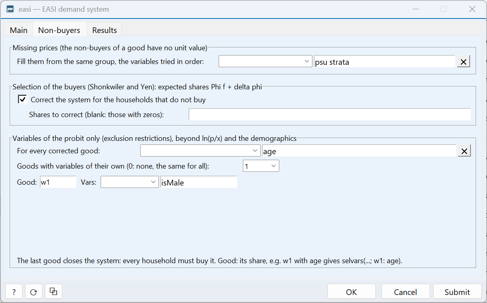
OK runs the command and closes the box;
Submit runs it and keeps the box open; the command
appears in the Review panel. From help easi, run in
dialog box under an example opens the box filled with it.
6.11 The R package
easi: compat
Hoareau et al. (2012) ported Pendakur’s Stata code to R, with
elasticities and Engel curves; version 0.21 of their package, archived
on CRAN in 2014, was for long the only packaged implementation of EASI.
The Stata module began as a port of it, and found defects that change
the results: interpz collapsed to its first element, so
that prices were only ever crossed with the first demographic;
instruments never refreshed; a mistranslated rounding of the price
quadratic forms; errors in the accumulator of the demographic
elasticities; the standard error of the last good returned with a minus
sign; and quantity elasticities derived with the shares held fixed,
missing that \(y\) responds to prices
and expenditure. It also had no weights, no survey design, a
homoskedastic covariance taken given \(y\), a single step on \(\hat\Sigma\), and standard errors of the
elasticities that are not those of the quantities reported.
easi corrects them; compat reproduces the
package, its defects included, so that published results can be
recovered:
. easi sfoodh sfoodr srent soper sfurn scloth stranop srecr spers, ///
lnprices(pfoodh pfoodr prent poper pfurn pcloth ptranop precr ppers) ///
lnexpenditure(log_y) demographics(age hsex carown time tran) power(5) py zy pz compat ///
snames(FoodHome FoodOut Rent Operation Furnishing Clothing Transport Recreation Personal)
EASI demand system Number of obs = 4,847
Goods = 9 Coef. per eq. = 40
y power = 5 Coefficients = 320
Interactions = py pz zy Mode = compat
prices x : age
Elasticities = households (each household counts for its weight)
Variance = conventional, conditional on y
...
Aggregation identities (exact by construction)
Engel |sum_j w_j eta^x_j - 1| 2.097e-10
Cournot max_k |sum_j w_j eta^k_j + w_k| 6.746e-04
The legacy elasticity formulas do not satisfy Cournot aggregation.
This is expected under compat and is one of the defects it reproduces.The same command without compat crosses the prices with
the five demographics and has 576 coefficients (§6.5). Under
compat, prices are crossed with the age alone, the standard
error of the expenditure elasticity of personal care is \(-1.019\), Cournot aggregation fails, and
the own-price elasticities differ from the corrected ones by up to 0.88
(furnishings, \(-1.24\) against \(-2.11\)). legacy() reproduces
the departures one at a time — interpz, instr,
quant, ez, lastse,
elast, elastse, sigma1 and
condse — which shows the effect of each;
help easi describes them. compat uses
vce(conventional), has the elasticities of the households
only, no weights and no selection. Use it to reproduce
published results, not for new work.
6.12 Validation
easi in AURA reproduces the Stata module
easi 2.0, whose results are kept as references in AURA’s
tests: every matrix and scalar of e() on the nine
specifications of its version lock — the reference specification of
Lewbel and Pendakur, compat, the survey design, clusters,
the individuals, pimpute() and selection — to
\(10^{-9}\), the variance to \(10^{-10}\) in relative terms, with the
variances under selection to the noise of the central
differences they are computed with; the reports of easidiag
and their r() on eight specifications; the predictions and
the Engel curves to \(10^{-9}\). The
Stata module reproduces the R package under compat to \(2\times10^{-11}\) on the coefficients, and
its standard errors were validated against the influence function
computed by brute force, a bootstrap of the whole procedure under simple
random sampling, sampling weights and a survey design, and Monte Carlo
experiments on data generated by the model, with and without non-buyers
(Araar 2026b).
6.13 Stored results
easi stores in e():
| Result | Content |
|---|---|
e(N), e(N_eff), e(ngoods),
e(neq), e(nsoc) |
households, the divisor of \(\hat\Sigma\), goods, equations, demographics |
e(power), e(k_eq), e(py),
e(pz), e(zy) |
the power, coefficients per equation, the interactions |
e(iter), e(crit),
e(converged), e(time) |
the convergence and the execution time |
e(chk_engel), e(chk_cournot) |
the residuals of Engel and Cournot aggregation; _mkt
for the market |
e(b), e(V) |
the coefficients and their variance |
e(elast_exp), e(elast_exp_se) |
the expenditure elasticities and their standard errors |
e(elast_price_nc), e(elast_price_c) |
the uncompensated and compensated price elasticities, [good, price];
also _se |
e(elast_demo) |
the demographic semi-elasticities, [demographic, good]; also
_se |
e(elast_exp_mkt)… |
the market elasticities, the names above followed by
_mkt |
e(semi_exp), e(semi_price),
e(slutsky), e(Sigma) |
the semi-elasticities, the mean Slutsky matrix, the residual covariance |
e(sel_alpha), e(sel_diag),
e(V_sel) |
with selection: the probits, their diagnostics, the
joint variance |
e(N_reps), e(N_reps_ok) |
with vce(bootstrap): the replications, those that
succeeded |
e(vce), e(elasticities),
e(mode), e(pimpute),
e(selgoods) |
the variance, the type of elasticities, the mode, the options |
help easi lists every result, the legacy matrices
included.
7 Unit values: Deaton’s model
This chapter presents the unit-value model of Deaton (1988, 1990,
1997) and its estimation by duvm. The model gives the price
elasticities of a group of goods from a survey that records expenditures
and quantities but no prices. The formulas are those of chapter 5 of
Deaton (1997), whose equation numbers — (5.55), (5.92)… — are kept in
the outputs of the commands and here.
7.1 When to use it
Use the unit-value model when the survey records, for each household and each good, the expenditure and the quantity, and when the households are sampled in clusters — villages, enumeration areas, primary sampling units — small enough for all their households to face the same prices, surveyed at about the same time. The prices then vary between clusters, and the model uses that variation.
It needs three things from the data. Enough clusters (several hundred), since each cluster is one observation of the prices. Enough buyers per cluster: the model corrects for measurement errors with the number of buyers, and a good bought by one household per cluster carries little information. And a group of goods that the household chooses in two steps, first how much to spend on the group, then on each good: weak separability, which the model uses to identify the quality response.
7.2 The model
Households \(h\) live in clusters \(c\), where all households face the same prices \(p_{jc}\) of the \(J\) goods. For each good \(i\), the household reports its budget share \(w_{ihc}\) and, when it buys the good, its unit value \(v_{ihc}\). Following Deaton (1997, eqs. 5.76–5.77),
\[w_{ihc} = \alpha^0_i + \beta^0_i \ln x_{hc} + \gamma^{0\prime}_i z_{hc} + \sum_{j=1}^{J} \theta_{ij} \ln p_{jc} + f_{ic} + u^0_{ihc},\]7.1
\[\ln v_{ihc} = \alpha^1_i + \beta^1_i \ln x_{hc} + \gamma^{1\prime}_i z_{hc} + \sum_{j=1}^{J} \psi_{ij} \ln p_{jc} + u^1_{ihc}.\]7.2
The share equation is the Working–Leser form with prices; it has a cluster effect \(f_{ic}\), uncorrelated with prices. The unit-value equation has none: given the price, the unit value reflects quality and measurement error only. \(\beta^1_i\) is the expenditure elasticity of quality — how much dearer the varieties bought by richer households are. \(\psi_{ij}\) is the response of the unit value to prices: unity on the diagonal if quality did not respond to price, less than one when households shade quality as the price rises. \(\theta_{ij}\) is the response of the budget share. The errors contain the measurement errors of quantities and unit values, and \(u^0\) and \(u^1\) are correlated within a household: an error on the quantity enters the share and, with the opposite sign, the unit value.
7.2.1 The elasticities
From \(w = qv/x\) and \(\ln v = \ln p + \ln \xi\), with \(\xi\) the quality, the expenditure elasticity of quantity is
\[e_i = 1 - \beta^1_i + \beta^0_i/\bar w_i ,\]7.3
and the matrix of price elasticities of quantity is (eqs. 5.88–5.89)
\[E = -\Psi + \mathrm{D}(\bar w)^{-1}\Theta .\]7.4
7.2.2 Identification: quality and weak separability
- \(\beta^1\): the vector of the expenditure elasticities of quality
- \(\zeta\): the vector of the quality parameters
- \(e\): the vector of the expenditure elasticities of quantity
Neither \(\Theta\) nor \(\Psi\) can be estimated from the data alone: the regression of shares on unit values between clusters identifies only \(B = (\Psi')^{-1}\Theta'\) (eq. 5.86). Deaton supplies the missing restriction from weak separability of preferences within the group: the quality of good \(i\) depends on the price of good \(j\) only through the quantity of \(i\) bought, so that
\[\psi_{ij} = \mathbf{1}\{i=j\} + \frac{\beta^1_i\, e_{ij}}{e_i}, \qquad \Psi = I + \mathrm{D}(\beta^1)\,\mathrm{D}(e)^{-1}E\]7.5
(eqs. 5.75 and 5.87). Combining the two expressions with \(\Theta = B'\Psi\) gives the chain from \(B\) to the elasticities (eqs. 5.90–5.92):
\[\Psi = \big[I - \mathrm{D}(\zeta)B' + \mathrm{D}(\zeta)\mathrm{D}(\bar w)\big]^{-1},\qquad \Theta = B'\Psi,\qquad E = \big[\mathrm{D}(\bar w)^{-1}B' - I\big]\Psi,\]7.6
\[\zeta_i = \frac{\beta^1_i}{(1-\beta^1_i)\bar w_i + \beta^0_i} = \frac{\beta^1_i}{\bar w_i\, e_i}.\]7.7
\(\zeta_i\) is the quality parameter. The product \(\zeta_i\bar w_i = \beta^1_i/e_i\) is the share of a price change absorbed by quality shading: when it is small, \(\Psi\) is close to the identity and the unit values behave as prices. When \(\beta^1_i\) is negative — a good whose unit value falls with income, which happens when richer households buy larger, cheaper packages — the correction goes the other way and raises the price elasticity.
7.2.3 Completing the system
The \(J\) goods do not exhaust the
budget. Adding-up and homogeneity extend \(\Theta\) to an \((J+1)\times(J+1)\) matrix \(\Theta^x\) whose last column is \(-\sum_j\theta_{ij} - \beta^0_i\) and whose
last row makes every column sum to zero (eqs. 5.93–5.94). The mean
shares and \(\beta^0\) extend by
adding-up, and the composite good receives an assumed quality elasticity
\(\beta^1_{J+1}\): 0.25 by default
(qother()), the value of Deaton’s code. With \(\zeta^x\) computed on the extended vectors
(eqs. 5.95–5.97),
\[\Psi^x = \big[I + \mathrm{D}(\zeta^x)\mathrm{D}(\bar w^x)\big]^{-1}\big[I + \mathrm{D}(\zeta^x)\Theta^x\big], \qquad E^x = \big[\mathrm{D}(\bar w^x)^{-1}B^{x\prime} - I\big]\Psi^x, \qquad B^{x\prime} = \Theta^x(\Psi^x)^{-1}.\]7.8
The \(J\times J\) block of \(E^x\) equals \(E\): completing the system adds the composite good without changing the others.
7.2.4 Symmetry
Slutsky symmetry requires \(\theta_{ij} + \beta^0_i\bar w_j = \theta_{ji} + \beta^0_j\bar w_i\) (eq. 5.71). Since it is nonlinear in \(B\) once quality enters, Deaton imposes it approximately on \(B + \bar w\beta^{0\prime}\), which coincides with the exact restriction when \(\Psi = I\). With \(Q\) the matrix that picks the \(J(J-1)/2\) pairs of \(\operatorname{vec}B\) and \(r = -Q(\beta^0\otimes\bar w)\), the restricted estimate is (eq. 5.102)
\[\operatorname{vec}\tilde B_R = \operatorname{vec}\tilde B + (I\otimes S_f)^{-1}Q'\big[Q(I\otimes S_f)^{-1}Q'\big]^{-1}\big(r - Q\operatorname{vec}\tilde B\big),\]7.9
with \(S_f = S -
\mathrm{D}(\hat\sigma^{11})\bar N_+^{-1}\) the corrected moment
matrix of the second stage (§7.3). duvm reports the
elasticities with and without the restriction; nosymmetry
leaves it out of the final matrix.
7.3 Estimation
7.3.1 First stage: within clusters
Within a cluster all prices are the same, so that the price terms and the cluster effect drop out once the variables are demeaned within clusters. Each of the \(2J\) equations is estimated by weighted least squares on the demeaned variables (the fixed-effect estimator): the share equations on all households, the unit-value equations on the households that report a unit value. The cluster mean of a variable is \(\sum_{h\in c}\omega_h y_h/\sum_{h\in c}\omega_h\). The first stage gives \(\hat\beta^0_i\), \(\hat\beta^1_i\), the coefficients of the characteristics, and the residuals \(\hat u^0_{ih}\), \(\hat u^1_{ih}\), from which come the variance of \(u^1\) and its covariance with \(u^0\) (eqs. 5.81–5.82):
\[\hat\sigma^{11}_i = \frac{\kappa_i}{n^+_i - K - C^+_i}\sum_h \omega_h m_{ih}\,(\hat u^1_{ih})^2, \qquad \hat\sigma^{01}_i = \frac{\kappa_i}{n^{+}_i - K - C^{+}_i}\sum_h \omega_h m_{ih}\, \hat u^0_{ih}\hat u^1_{ih},\]7.10
where \(m_{ih}\) marks the
reporters, \(n^+_i\) and \(C^+_i\) count the reporting households and
clusters, \(K\) the regressors, and
\(\kappa_i = n^+_i/\sum_h\omega_h
m_{ih}\) normalises the weights. The regressors are log
expenditure, log household size when hhsize() is given, and
the terms of demographics(). The purged
series
\[\hat y^0_{ih} = w_{ih} - X_h'\hat\beta^0_i,\qquad \hat y^1_{ih} = \ln v_{ih} - X_h'\hat\beta^1_i\]7.11
keep the cluster effects and the price terms (eqs. 5.78–5.79); \(X_h\) is the row of the first-stage regressors of household \(h\).
7.3.2 Second stage: between clusters
The cluster averages of the purged series — over all households for
the shares, over the reporters for the unit values — are residualised on
the region and survey-round dummies when region() and
subround() are given. Their covariances between
clusters,
\[S_{ij} = \operatorname{Cov}_c(\bar y^1_{ic}, \bar y^1_{jc}),\qquad R_{ij} = \operatorname{Cov}_c(\bar y^1_{ic}, \bar y^0_{jc}),\]7.12
computed over the clusters where both series are observed, still contain the averaged first-stage errors, \(\sigma^{11}_i/n^+_{ic}\) and \(\sigma^{01}_i/n_{ic}\), which do not vanish when clusters are small. Deaton’s errors-in-variables estimator removes them with the harmonic means of the cluster sizes (eqs. 5.55 and 5.85):
\[\tilde B = \big(S - \mathrm{D}(\hat\sigma^{11})\bar N_+^{-1}\big)^{-1}\big(R - \mathrm{D}(\hat\sigma^{01})\bar N^{-1}\big), \qquad \bar n_{i} = \Big(\tfrac{1}{C}\sum_c n_{ic}^{-1}\Big)^{-1}.\]7.13
With weights, the variance of a weighted cluster mean of \(n\) independent errors is \(\sigma^2\sum_h\omega_h^2/(\sum_h\omega_h)^2\), so that the size of a cluster is its effective size \((\sum_h\omega_h)^2/\sum_h\omega_h^2\) (Kish 1965), the number of households when the weight is constant within the cluster, as in the example data. This is the only place where the weights change the second stage, which treats each cluster as one observation: each cluster is one draw of the price vector.
From \(\tilde B\), the symmetry restriction, the quality parameter, the chain of §7.2.2 and the completion give the elasticities. Every step is closed-form.
7.3.3 Non-buyers
A household that does not buy a good has a zero share and no unit
value. duvm calls a household a buyer when its budget share
is positive, and reads a missing share as zero, so that the coding of
non-purchase does not decide who is in the model: no household is
dropped because it does not buy one of the goods. Each unit-value
equation has its own buyers and each covariance its own clusters.
Survey files often give a unit value to the non-buyers too, imputed
from the buyers of the cluster or of a wider area, or coded zero. For
the model these are not observations, and nonbuyers(drop),
the default, ignores them. Keeping imputed values
(nonbuyers(asis), or nonbuyers(average), which
imputes the mean of the buyers of the cluster) adds households whose
unit value does not vary within the cluster: the quality elasticity is
biased toward zero, the more so the rarer the good, the residual
variance is understated and the cluster sizes are inflated, so that the
measurement-error correction is too small. A code of zero is worse: a
log unit value of zero is a price of one, and the slope then measures
the rate of purchase. The example data give the non-buyers such values,
and duvm says so in a note under its data check.
7.3.4 Selection of the buyers
The share equation needs no correction: estimated on all households,
it averages over zero and positive purchases (Deaton 1997, pp. 304–305).
The unit value is observed for the buyers only. When the buyers of a
good differ, in the quality they would choose, from the non-buyers, the
unit-value equation estimated on the buyers mixes the quality response
to income with the selection of the buyers, and the bias passes from
\(\beta^1\) to \(\zeta\) and to the price elasticities.
Option selection corrects the unit-value equation by the
two-step estimator of Heckman (1979). For each good, a probit of
buying,
\[\Pr(w_{ih} > 0) = \Phi(s_h'\pi_i),\qquad s_h = (1,\ X_h,\ \bar X_c,\ z^e_h),\]7.14
is estimated on all households, where \(\bar X_c\) is the cluster mean of the
first-stage regressors and \(z^e_h\)
the variables of the probit only (selvars()). The cluster
means stand for the cluster effect, which a probit cannot absorb with
cluster dummies without an incidental-parameter bias: they let that
effect be correlated with the regressors (Mundlak 1978), the device of
Wooldridge (1995) for selection corrections with fixed effects. The
inverse Mills ratio \(\lambda_{ih} =
\phi(s_h'\hat\pi_i)/\Phi(s_h'\hat\pi_i)\) enters the
unit-value equation of the buyers,
\[\ln v_{ihc} = \alpha^1_{ic} + X_{hc}'\beta^1_i + \delta_i\lambda_{ih} + u^1_{ihc},\]7.15
estimated within clusters as before; the second stage is unchanged.
selgoods() restricts the correction to some goods;
selvars() gives the variables of the probit only, common to
all corrected goods or specific to some
(selvars(wheat: perc_ocupa ; rice: nocup0)).
Within a cluster \(\bar X_c\) is constant, so that \(\lambda\) varies with \(X_h\) and \(z^e_h\) only. Without a variable of the probit only, \(\delta_i\) is identified by the curvature of the probit alone, and what matters is the collinearity of \(\lambda\) with log expenditure, whose coefficient is the quality elasticity: with \(\rho_i\) their within-cluster correlation given the other regressors, the correction inflates the variance of \(\hat\beta^1_i\) by \(\mathrm{VIF}_i = 1/(1-\rho_i^2)\). The diagnostic reports it (§7.7) and warns above 10.
7.3.5 Which elasticity: household, individual or market
- \(\beta^0\): the coefficient of log expenditure in the share equation of a good
The elasticities are evaluated at the mean budget shares \(\bar w\), and option
elasticities() gives three answers with the same
formulas:
households, the default: each household counts for its weight, \(\bar w_i = \sum_h\omega_h w_{ih}/\sum_h\omega_h\) — the elasticities of the household, as in Deaton (1997);individuals: each household counts for its weight times its size, in the regressions, the cluster averages and the mean shares; it requireshhsize()— the elasticities of the individual;market: the estimation is that of the households, and the elasticities are evaluated at the aggregate shares \(W_i = \sum_h\omega_h x_h w_{ih}/\sum_h\omega_h x_h\), the share of the good in total spending. With shares linear in \(\ln x\), the expenditure elasticity of household \(h\) is \(1-\beta^1_i+\beta^0_i/w_{ih}\), and their mean weighted by each household’s share of the demand is \(1-\beta^1_i+\beta^0_i/W_i\): the formula at \(W_i\). These are the elasticities of market demand.
On the example data, with the model of §7.5 and the linearized standard errors in parentheses:
| Own-price HH | Own-price Ind. | Own-price Market | Expend. HH | Expend. Ind. | Expend. Market | Share HH (%) | Share Ind. (%) | Share Market (%) | |
|---|---|---|---|---|---|---|---|---|---|
| corn | -0.814 | -0.811 | -0.845 | 0.242 | 0.252 | -0.223 | 2.32 | 2.48 | 1.42 |
| (0.024) | (0.025) | (0.046) | (0.020) | (0.021) | (0.047) | ||||
| wheat | -0.820 | -0.823 | -0.758 | 0.458 | 0.471 | 0.254 | 1.50 | 1.57 | 1.08 |
| (0.026) | (0.027) | (0.037) | (0.019) | (0.021) | (0.033) | ||||
| rice | -1.572 | -1.463 | -1.892 | 0.582 | 0.561 | 0.379 | 0.15 | 0.17 | 0.10 |
| (0.229) | (0.210) | (0.392) | (0.039) | (0.043) | (0.061) | ||||
| other | -0.760 | -0.763 | -0.774 | 1.066 | 1.092 | 1.054 | 0.10 | 0.10 | 0.11 |
| (0.088) | (0.100) | (0.081) | (0.055) | (0.057) | (0.050) |
The individual changes little: larger households are poorer and spend a little more on staples. The market changes most. Total spending is dominated by the richer households, whose share of corn is small: the aggregate share of corn, 1.4%, is well below its mean share, 2.3%, and since \(\beta^0 < 0\) its expenditure elasticity becomes negative, \(-0.22\), against \(0.24\) for the household. The household elasticity describes the typical household; the market elasticity, the response of the total demand for corn, weighted toward the households that spend most.
7.4 Variance
7.4.1 Linearization
The estimator is a smooth function \(\tau = g(\eta)\) of a vector of moments,
\[\eta = \big(\operatorname{vec}S,\ \operatorname{vec}R,\ \hat\sigma^{11},\ \hat\sigma^{01},\ \hat\beta^0_{\cdot,1},\ \hat\beta^1_{\cdot,1},\ \bar w\big),\]7.16
where \(\hat\beta^0_{\cdot,1}\) and \(\hat\beta^1_{\cdot,1}\) are the coefficients of log expenditure. The reported parameters \(\tau\) are all the estimates displayed: the five price-elasticity matrices, the expenditure and quality elasticities, the shares and \(\zeta\) — 115 parameters for four goods. To the first order, \(\hat\tau - \tau \approx G(\hat\eta - \eta)\) with \(G = \partial g/\partial\eta'\), and \(\operatorname{Var}(\hat\tau) = G\,\operatorname{Var}(\hat\eta)\,G'\).
Influence functions. Each moment is written as a sum of contributions, one per cluster. The first-stage moments are sums over households: for the coefficients of an equation, \((\tilde X'\Omega\tilde X)^{-1}\tilde X_h'\omega_h\hat u_h\); for \(\hat\sigma^{11}_i\), \(\kappa_i\omega_h m_{ih}(\hat u^1_{ih})^2/\text{df} - \hat\sigma^{11}_i/n^+_i\); for \(\bar w_i\), \(\omega_h(w_{ih} - \bar w_i)/\sum_h\omega_h\). The second-stage covariances have their own contribution, \(\big[(\tilde y^1_{ic} - \bar{\tilde y}^1_i)(\tilde y^1_{jc} - \bar{\tilde y}^1_j) - S_{ij}\big]/(n_{ij} - 1)\), and a generated-regressor term: the purged averages depend on the first-stage coefficients through \(\bar y^1_{ic} = \overline{\ln v}_{ic} - \bar X_{ic}'\hat\beta^1_i\), so that
\[\frac{\partial S_{ij}}{\partial\beta^1_i} = -\frac{1}{n_{ij}-1}\sum_{c}\tilde X_{ic}\,(\tilde y^1_{jc} - \bar{\tilde y}^1_j),\]7.17
and likewise for the other derivatives; they multiply the cluster
sums of the household influence functions of the coefficients. Under
selection, the probit is one more first-stage estimator,
and the Mills ratio a generated regressor whose derivatives enter the
same way.
Aggregation. With clusters as the sampling units,
\(\operatorname{Var}(\hat\eta) =
\frac{C}{C-1}\sum_c(\mathrm{IF}_c -
\overline{\mathrm{IF}})'(\mathrm{IF}_c -
\overline{\mathrm{IF}})\), \(\mathrm{IF}_c\) the sum of the
contributions of cluster \(c\). Under
vce(svy), the contributions are summed within the PSUs of
the design, which must contain the price clusters, and
\[\operatorname{Var}(\hat\eta) = \sum_{\mathcal S}(1 - f_{\mathcal S})\frac{n_{\mathcal S}}{n_{\mathcal S} - 1} \sum_{\mathcal P\in\mathcal S}(\mathrm{IF}_{\mathcal P} - \overline{\mathrm{IF}}_{\mathcal S})' (\mathrm{IF}_{\mathcal P} - \overline{\mathrm{IF}}_{\mathcal S})\]7.18
over the strata \(\mathcal S\), with \(n_{\mathcal S}\) PSUs \(\mathcal P\) each, \(\mathrm{IF}_{\mathcal P}\) the sum of the contributions of PSU \(\mathcal P\), \(\overline{\mathrm{IF}}_{\mathcal S}\) their mean in the stratum and \(f_{\mathcal S}\) its sampling fraction.
Jacobian. \(G\) is computed analytically, by forward differentiation of the chain — the errors-in-variables estimator, the symmetry projection, \(\zeta\), \(\Psi\), \(\Theta\), \(E\) and the completion — along each of the \(2J^2 + 5J\) directions of \(\eta\): exact, and fast.
7.4.2 Bootstrap
vce(bootstrap) draws clusters — or the PSUs of the
svyset design, within strata, with svy — with
replacement, lets the households travel with their cluster and their
weights, and repeats both stages in every replication:
reps() sets their number and seed() the seed.
Deaton’s own programs bootstrapped the second stage only, holding the
first fixed to save computing time (Deaton 1997, p. 313); the sub-option
shortcut reproduces this. The shortcut gives no variance to
the expenditure and quality elasticities and omits the first stage from
that of the price elasticities: on the example data, it understates the
standard error of the own-price elasticity of corn by a quarter (Araar
2026a).
The linearized variance has been validated against the bootstrap of both stages, 400 replications, with clusters as the sampling units, with the sampling weights, and with a stratified design: over the 115 parameters, the ratio of the linearized to the bootstrap standard error lies between 0.92 and 1.13, the spread expected from 400 replications (Araar 2026a). With 50 replications, as in the example below, the bootstrap standard errors are within the expected noise of the linearized ones:
. duvm corn wheat rice other [aw=sweight], hhsize(hhsize) expend(hh_current_inc) cluster(psu) ///
region(rururb) demographics(age i.sex i.educ) vce(bootstrap, reps(50) seed(1))
Table 9: Standard errors of the price elasticities of Table 8 (Bootstrap)
───────────┬───────────────────────────────────────────
│ corn wheat rice other composite
───────────┼───────────────────────────────────────────
corn │ 0.026 0.013 0.011 0.012 0.028
wheat │ 0.021 0.029 0.024 0.019 0.040
rice │ 0.167 0.236 0.201 0.063 0.227
other │ 0.274 0.283 0.096 0.091 0.374
composite │ 0.001 0.000 0.000 0.000 0.001Take several hundred replications in an application.
7.5 A first estimation
The model of the example has the four cereal groups, log expenditure (current income), log household size, the age of the head and dummies for its sex and education, with the rural/urban region purged from the cluster averages; the sampling weight is an analytic weight:
. use "data/mexico_2014_cereals.dta", clear
. duvm corn wheat rice other [aw=sweight], hhsize(hhsize) expend(hh_current_inc) ///
cluster(psu) region(rururb) demographics(age i.sex i.educ)The goods are named after their variables: duvm reads
wcorn and luvcorn for corn, and so on.
expend() is total expenditure, the denominator of the
budget shares, and cluster() the cluster within which
prices are the same. The output begins with the data check of the sample
(§1.4):
Data check: 15,866 observations asked for
────────────────────────────────┬────────────────────────────────────────────────────────────────────────────
│ N > 0 N < 0 N = 0 N missing Mean Min Max
────────────────────────────────┼────────────────────────────────────────────────────────────────────────────
Budget shares │
wcorn │ 13,607 0 2,259 0 0.0239 0.0000 0.1101
wwheat │ 12,584 0 3,282 0 0.0148 0.0000 0.0668
wrice │ 4,481 0 11,385 0 0.0015 0.0000 0.0131
wother │ 2,600 0 13,266 0 0.0011 0.0000 0.0148
────────────────────────────────┼────────────────────────────────────────────────────────────────────────────
Sum of budget shares │ 15,136 0 730 0 0.0413 0.0000 0.1736
────────────────────────────────┼────────────────────────────────────────────────────────────────────────────
Log unit values │
luvcorn │ 15,375 0 0 491 2.7945 0.7221 5.3636
luvwheat │ 15,340 0 0 526 3.8481 1.4733 7.2096
luvrice │ 13,171 0 1 2,694 2.6962 0.0000 4.8249
luvother │ 12,164 2 0 3,700 4.0030 -0.6931 5.8663
────────────────────────────────┼────────────────────────────────────────────────────────────────────────────
...
• Non-buyers with a unit value in the data (imputed or coded 0), the value ignored (see nonbuyers()): corn
1,768, wheat 2,756, rice 8,691, other 9,566 households.The four goods take 4% of the budget on average, and 730 households buy none of them. The missing unit values are those of non-buyers: no buyer lacks one. Then the header:
Deaton's unit-value model Number of obs = 15,866
Goods: corn wheat rice other Number of clusters = 2,622
Cluster variable: psu Weights = aweight = sweight
Symmetry: imposed (Deaton's approximation) Quality elast., other goods = 0.250
Elasticities: households (each household counts for its weight)
Household size: hhsize (its log is a regressor of the first stage)
Std. err.: linearized, clustered by psuThe example data give a unit value to many households that did not
buy (§7.3.3): duvm ignores them, and the note under the
data check counts them.
7.5.1 The first stage: shares, expenditure and quality
- \(\bar w\): the mean budget share of a good
Table 1: Average budget shares (in %)
─────────────┬───────────────────────────────
│ corn wheat rice other
─────────────┼───────────────────────────────
Share (%) │ 2.317 1.497 0.153 0.100
std. err. │ 0.038 0.020 0.005 0.003
─────────────┴───────────────────────────────
Table 2: Expenditure elasticities of quantity, e = 1 - b1 + b0/wbar
─────────────┬───────────────────────────────
│ corn wheat rice other
─────────────┼───────────────────────────────
Elasticity │ 0.242 0.458 0.582 1.066
std. err. │ 0.020 0.019 0.039 0.055
─────────────┴───────────────────────────────
Table 3: Quality elasticities, b1 = dln(unit value)/dln(expenditure)
─────────────┬────────────────────────────────
│ corn wheat rice other
─────────────┼────────────────────────────────
Elasticity │ 0.019 0.007 -0.022 0.094
std. err. │ 0.005 0.004 0.015 0.025
─────────────┴────────────────────────────────Corn and wheat take 2.3% and 1.5% of the budget, rice and other
cereals 0.15% and 0.10%. The expenditure elasticities of quantity run
from 0.24 for corn, a strong necessity, to 1.07 for other cereals, a
luxury. Richer households pay more per unit for corn (\(\beta^1 = 0.019\)), a little more for wheat
(0.007) and much more for other cereals (0.094), a group of
heterogeneous products. For rice the quality elasticity is negative,
\(-0.022\), with a standard error of
0.015: no quality upgrading — rice is a homogeneous product, and richer
households may buy it in larger, cheaper packages.
estat quality gathers the quality parameters:
. estat quality
Quality: the expenditure elasticity of the unit value (b1), the quality parameter zeta of (5.92), and zeta x wbar = b1 / e, the share of a price change absorbed by quality shading
────────────────────────┬──────────────────────────────────
│ corn wheat rice other
────────────────────────┼──────────────────────────────────
b1, quality elasticity │ 0.019 0.007 -0.022 0.094
std. err. │ 0.005 0.004 0.015 0.025
zeta │ 3.418 1.010 -24.996 88.435
std. err. │ 0.959 0.525 16.055 25.568
zeta x wbar = b1 / e │ 0.079 0.015 -0.038 0.089
e, expenditure elast. │ 0.242 0.458 0.582 1.066
std. err. │ 0.020 0.019 0.039 0.055
────────────────────────┴──────────────────────────────────
Unit-value response to own price (diagonal of Psi):
───────────┬───────────────────────────────
│ corn wheat rice other
───────────┼───────────────────────────────
Own price │ 0.936 0.988 1.060 0.933
───────────┴───────────────────────────────Quality shading absorbs 8% of a price change for corn and 9% for other cereals (\(\zeta\bar w\)), 1.5% for wheat; the unit values respond to their own price almost one for one (\(\psi_{ii}\) from 0.93 to 1.06). The large values of \(\zeta\) itself are not a concern: \(\zeta\) is divided by a small share.
7.5.2 The price elasticities
Tables 4 to 8 follow the price elasticities through the steps of the model: Table 4 takes the unit values as prices, Tables 5 and 6 correct them for quality without and with symmetry, Tables 7 and 8 complete the system with the composite good. Table 8 is the final matrix, and Table 9 its standard errors:
Table 8: Price elasticities of quantity, quality corrected, symmetry restricted, completed system
───────────┬───────────────────────────────────────────────
│ corn wheat rice other composite
───────────┼───────────────────────────────────────────────
corn │ -0.814 0.054 -0.006 -0.007 0.531
wheat │ 0.079 -0.820 0.102 -0.003 0.183
rice │ -0.099 1.001 -1.572 -0.159 0.248
other │ -0.178 -0.051 -0.244 -0.760 0.167
composite │ -0.003 -0.004 -0.000 0.000 -0.770
───────────┴───────────────────────────────────────────────
Table 9: Standard errors of the price elasticities of Table 8 (Linearized)
───────────┬───────────────────────────────────────────
│ corn wheat rice other composite
───────────┼───────────────────────────────────────────
corn │ 0.024 0.013 0.012 0.013 0.030
wheat │ 0.020 0.026 0.021 0.017 0.038
rice │ 0.187 0.202 0.229 0.058 0.266
other │ 0.309 0.250 0.088 0.088 0.363
composite │ 0.001 0.000 0.000 0.000 0.001
───────────┴───────────────────────────────────────────A row is a quantity, a column a price: a 1% rise of the price of corn lowers the quantity of corn bought by 0.81%. The own-price elasticities are \(-0.81\) for corn and \(-0.82\) for wheat, precisely estimated, \(-1.57\) for rice and \(-0.76\) for other cereals, less precisely. The cross-price elasticities of rice and other cereals, whose shares are a tenth of a percent of the budget, carry standard errors of 0.06 to 0.36: small shares divide small coefficients. The composite of all other goods, 96% of the budget, has an own-price elasticity of \(-0.77\), close to minus its expenditure elasticity.
How each step moves the own-price elasticities:
| Treatment | corn | wheat | rice | other |
|---|---|---|---|---|
| Unit values as prices (Table 4) | -0.870 | -0.838 | -1.355 | -0.845 |
| Quality corrected (Table 5) | -0.814 | -0.829 | -1.428 | -0.787 |
| Symmetry restricted (Table 6) | -0.814 | -0.820 | -1.572 | -0.760 |
| Completed system (Table 8) | -0.814 | -0.820 | -1.572 | -0.760 |
The quality correction lowers the elasticities of corn and other
cereals, in proportion to their quality shares; for rice, whose quality
elasticity is negative, it raises it. Symmetry moves rice, and
completion changes nothing, as it should.
estat elasticities displays any of the matrices with its
standard errors: estat elasticities, noquality Table 4,
unrestricted without symmetry, uncompleted the
\(J\times J\) system.
7.5.3 With the survey design
. svyset psu [pweight=sweight], strata(strata)
. duvm corn wheat rice other, hhsize(hhsize) expend(hh_current_inc) cluster(psu) ///
region(rururb) demographics(age i.sex i.educ) vce(svy)The weights come from the design, and the standard errors follow its PSUs and strata. Here the strata change the standard errors little (corn 0.024, rice 0.229, other cereals 0.087).
7.6 Diagnostics
The model lives on the between-cluster variation of the unit values
that remains after the measurement-error correction.
duvmdiag, with the syntax of duvm, runs both
stages without the variance and reports what the method has to work
with; estat diagnostics gives the same report after
estimation.
. duvmdiag corn wheat rice other [aw=sweight], hhsize(hhsize) expend(hh_current_inc) ///
cluster(psu) region(rururb) demographics(age i.sex i.educ)
Table D0: Buyers (positive share) and the coding of the non-buyers; non-buyers treated by nonbuyers(drop)
───────┬───────────────────────────────────────────────────────────────────────────────
│ Buyers Buyers Shares Non-buyers of which Buyers Clusters UV,
│ (%) missing with a UV coded 0 without UV no buyer
───────┼───────────────────────────────────────────────────────────────────────────────
corn │ 13,607 86 0 1,768 0 0 22
wheat │ 12,584 79 0 2,756 0 0 16
rice │ 4,481 28 0 8,691 0 0 206
other │ 2,600 16 0 9,566 0 0 328
───────┴───────────────────────────────────────────────────────────────────────────────
UV: unit value. Shares missing: budget shares coded . (read as 0);
non-buyers with a UV: a unit value in the data although the share is zero;
clusters UV, no buyer: clusters with a unit value but no buyer.
Table D1: Households whose unit value enters the model, clusters, and the harmonic cluster sizes of (5.55)
───────┬────────────────────────────────────────────────────────────────────────────────────────
│ Share Reporters Reporters Clusters Cluster size Cluster size Clusters with
│ (%) (%) reporters all another good
───────┼────────────────────────────────────────────────────────────────────────────────────────
corn │ 2.32 13,607 85.8 2,591 3.45 4.15 1,487
wheat │ 1.50 12,584 79.3 2,589 3.12 4.15 1,494
rice │ 0.15 4,481 28.2 1,808 1.58 4.15 1,105
other │ 0.10 2,600 16.4 1,499 1.33 4.15 1,105
───────┴────────────────────────────────────────────────────────────────────────────────────────
Reporters: households whose unit value enters the model; cluster size: harmonic mean
of the cluster sizes, among the reporters (n+) and among all households (n); clusters with
another good: the fewest clusters where the good and another good both have a unit value.
Table D2: Between-cluster SD of the purged log unit value, the share of it removed by the measurement-error correction, the corrected variance, and the quality parameters
───────┬────────────────────────────────────────────────────────────────────────────
│ SD of Removed by Corrected Quality Expenditure b1 / e
│ unit value correction (%) variance elast. b1 elast. e
───────┼────────────────────────────────────────────────────────────────────────────
corn │ 0.448 3.856 0.193 0.019 0.242 0.079
wheat │ 0.402 3.220 0.156 0.007 0.458 0.015
rice │ 0.302 46.231 0.049 -0.022 0.582 -0.038
other │ 0.549 17.359 0.249 0.094 1.066 0.089
───────┴────────────────────────────────────────────────────────────────────────────
b1 / e = zeta x wbar, the share of a price change absorbed by quality.
Corrected moment matrix Sf: condition number = 5.4, smallest eigenvalue = 0.04738
Symmetry restriction: relative change of B, ||B_sym - B|| / ||B|| = 0.671Read the tables in order.
- Table D0 counts the buyers and says how the non-buyers are coded: shares coded missing, unit values held by non-buyers (imputed, or coded zero), and clusters with a unit value but no buyer, whose price can only come from outside the cluster. Corn and wheat are bought by 86% and 79% of the households, rice by 28%, other cereals by 16%.
- Table D1 gives, for each good, the households and clusters whose unit value enters the model, and the harmonic cluster sizes \(\bar n^+\) (the reporters) and \(\bar n\) (all households) of eq. (5.55). The buyers of a cluster number 3.4 and 3.1 in harmonic mean for corn and wheat, but 1.6 and 1.3 for rice and other cereals: for these two goods the measurement-error correction rests on one or two households per cluster.
- Table D2 gives the between-cluster standard deviation of the purged unit value, the share of its variance that the correction removes, the corrected variance, and the quality parameters. The correction removes 4% of the variance for corn and wheat, 17% for other cereals and 46% for rice: the price signal of rice is half noise.
- Then the condition number of the corrected moment matrix — 5.4, far from singular — and the relative move that symmetry imposes on \(B\): 67%, large, which the elasticities of rice, moved by symmetry from \(-1.43\) to \(-1.57\), reflect.
The warnings follow, thirteen here: the coding of the non-buyers (ignored, as they should be), the small clusters of rice and other cereals, the negative quality elasticity of rice (the quality correction then raises its price elasticity instead of lowering it), and the move of symmetry. The thresholds: fewer than 20% of reporters, \(\bar n^+ < 2\), a correction above half of the variance or that makes it non-positive, \(\beta^1 < 0\), an expenditure elasticity near zero (\(\zeta\) is then unstable), an ill-conditioned moment matrix, and a move of symmetry above half. A warning is not an error: it says where the estimates are fragile, and which ones to read with care.
7.7 The selection correction in practice
Under selection, the diagnostic adds Table D3, on the
probit of purchase and the Mills ratio:
. duvmdiag corn wheat rice other [aw=sweight], hhsize(hhsize) expend(hh_current_inc) ///
cluster(psu) region(rururb) demographics(age i.sex i.educ) selection
Table D3: Selection of the buyers, the probit of purchase and the Mills ratio lambda
───────┬─────────────────────────────────────────────────────────────────────
│ Buyers Pseudo Perfectly VIF of b1 Probit-only theta z
│ (%) R2 predicted variables
───────┼─────────────────────────────────────────────────────────────────────
corn │ 85.2 0.110 0 1.1 0 -0.3920 .
wheat │ 80.6 0.029 0 1.9 0 -0.2816 .
rice │ 28.6 0.039 0 1.1 0 0.5101 .
other │ 15.0 0.053 17 155.8 0 -2.0607 .
───────┴─────────────────────────────────────────────────────────────────────
Pseudo R2: McFadden, of the probit of purchase; perfectly predicted: households predicted
with probability 0 or 1; VIF of b1: variance inflation of the quality elasticity due to
lambda, 1/(1-rho^2), rho the within-cluster correlation of lambda and ln x given the other
regressors, among the reporters (above 10: collinear); probit-only variables: their number
(selvars()); theta: coefficient of lambda in the unit-value equationFor other cereals, bought by 15% of households, the Mills ratio is almost collinear with log expenditure within clusters: \(\mathrm{VIF} = 156\), against 1.1 to 1.9 for the other goods. The correction would then rest on the curvature of the probit alone, multiply the standard error of the quality elasticity of other cereals by about 12 and turn it negative — a first-order variance is not enough there. The diagnostic says so, and advises to leave other cereals uncorrected, unless a variable of the probit only separates \(\lambda\) from \(\ln x\). The correction of the three other goods, with a variable of the probit only for wheat (the number of employed income recipients) and for rice (no income recipient):
. duvm corn wheat rice other [aw=sweight], hhsize(hhsize) expend(hh_current_inc) ///
cluster(psu) region(rururb) demographics(age i.sex i.educ) ///
selgoods(corn wheat rice) selvars(wheat: perc_ocupa ; rice: nocup0)
Table 3: Quality elasticities, b1 = dln(unit value)/dln(expenditure)
─────────────┬──────────────────────────────────
│ corn wheat rice other
─────────────┼──────────────────────────────────
Elasticity │ 0.028 0.012 -0.022 0.094
std. err. │ 0.006 0.006 0.015 0.025
Mills ratio │ -0.392 -0.281 0.024 .
std. err. │ 0.087 0.159 0.424 .
─────────────┴──────────────────────────────────selection alone corrects every good;
selgoods() names the goods to correct, and implies
selection. The Mills-ratio row of Table 3 is \(\hat\delta_i\), the covariance of the
unit-value error with that of the probit, with its standard error. The
buyers of corn and wheat are selected on a lower quality than the
non-buyers would choose (\(\hat\delta_i <
0\)): corrected, the quality elasticity of corn rises from 0.019
to 0.028, and its own-price elasticity moves from \(-0.814\) to \(-0.789\). The others hardly move.
7.8 Engel curves
The first stage is linear in \(\ln x\) within clusters. Holding the other regressors at their weighted means and prices at their common level, it traces three Engel curves for each good:
\[w_i(\ln x) = \bar w_i + \hat\beta^0_i\,(\ln x - \overline{\ln x}),\qquad \ln v_i(\ln x) = \overline{\ln v}_i + \hat\beta^1_i\,(\ln x - \overline{\ln x}^+_i),\]7.19
\[\ln q_i(\ln x) = \ln w_i(\ln x) + \ln x - \ln v_i(\ln x),\]7.20
where \(\bar w_i\) and \(\overline{\ln x}\) are the weighted means of the share and of \(\ln x\), and \(\overline{\ln v}_i\), \(\overline{\ln x}^+_i\) the same means over the households that report a unit value. The first is the Engel curve of the budget share; the second shows how richer households buy dearer varieties, with slope \(\beta^1_i\); the third is the quantity bought, whose slope \(1 + \beta^0_i/w_i - \beta^1_i\) is the expenditure elasticity of quantity, now varying along the curve with the share.
. duvm corn wheat rice other [aw=sweight], hhsize(hhsize) expend(hh_current_inc) ///
cluster(psu) region(rururb) demographics(age i.sex i.educ) notable
. estat engel
. estat engel, quality
. estat engel, quantity normalizeestat engel draws the curves of all goods, one panel per
good, against the percentiles of total expenditure (against \(\ln x\) with lnx), with a 95%
confidence band; share (the default), quality
and quantity choose the curve. The curves are straight
lines in \(\ln x\); against the
percentiles they bend, because \(\ln
x\) is not spread evenly over the population.
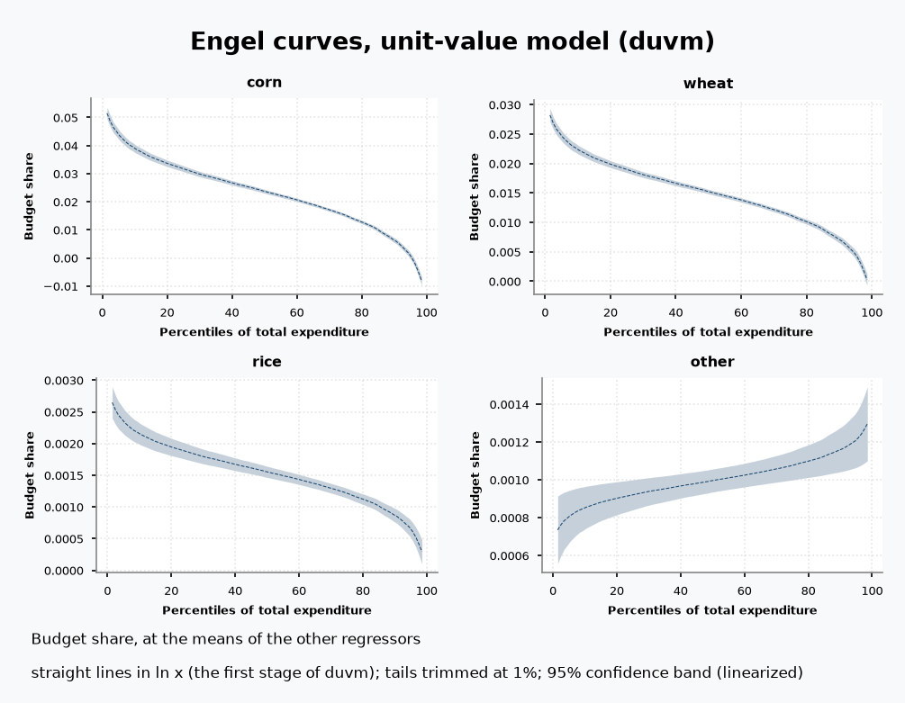
The budget shares of corn, wheat and rice fall as expenditure rises: they are necessities, and the share of corn falls by two thirds between the 10th and the 80th percentile. The share of other cereals rises: a luxury. The bands are narrow for corn and wheat and wider for the two rare goods, whose slopes rest on fewer buyers. The limit of the linear form shows at the top: the share of corn reaches zero near the 96th percentile. A share that flattens toward zero as expenditure grows is a curve a straight line cannot follow; the Engel curves of a rank-three system can bend there (§1.2.5).
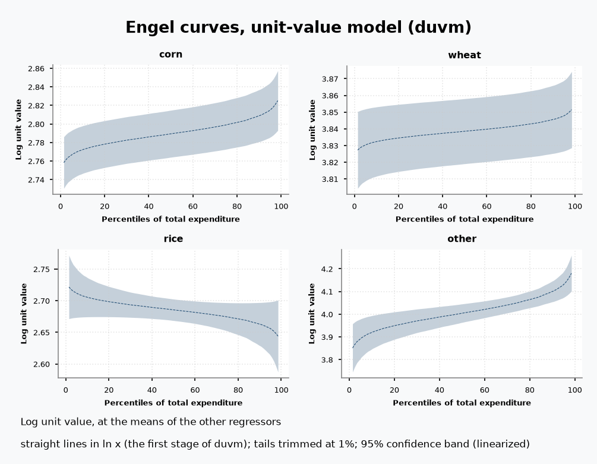
The unit value of other cereals rises by about 0.33 log points across the distribution, about 40%, against 7% for corn and 2% for wheat. The unit value of rice falls slightly, but its band contains a flat line. The bands are wide because they carry the uncertainty on the mean level of the unit value, which varies a lot between clusters; the slopes, which drive the quality correction, are known much more precisely (Table 3).
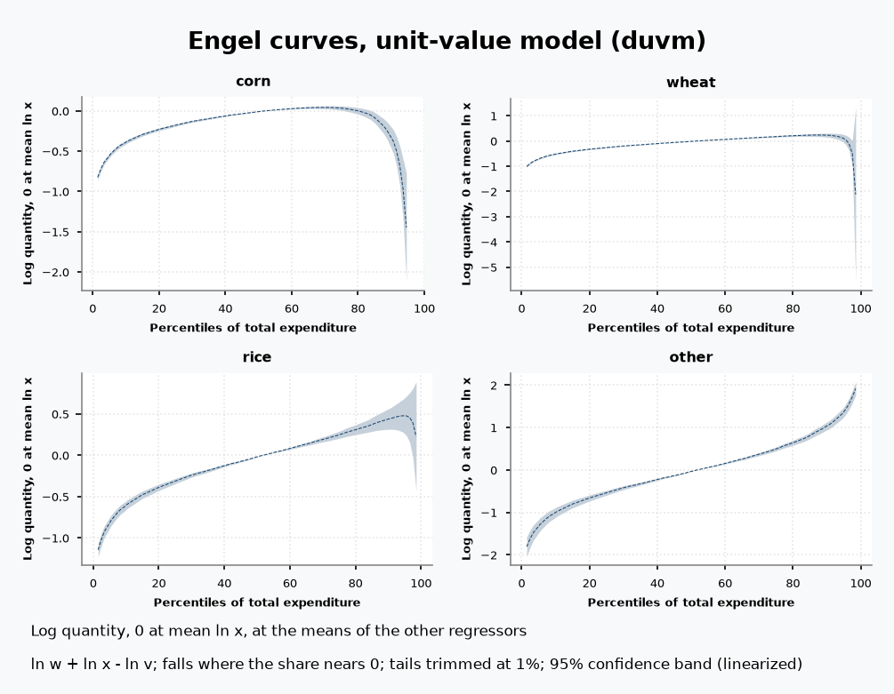
The quantity curve combines the two. Its level has a unit only if the
unit value has one: \(q = wx/v\) is the
household’s expenditure on the good divided by its unit value, a
quantity in kilograms if \(v\) is a
price per kilogram — but a quantity index when, as here, the unit value
of a group is an index. Option normalize sets the log
quantity to zero at mean expenditure, so that the curve reads as the
percentage difference in quantity from the household at mean
expenditure, and the goods share one scale. From the 5th to the 90th
percentile the quantity is multiplied by 1.3 for corn, 2.6 for wheat,
3.5 for rice and 10.6 for other cereals. Corn peaks near the 70th
percentile and falls beyond: not a finding, but the linear share
approaching zero, whose logarithm drops without bound. The log quantity
is left missing where the fitted share is not positive.
Household curves with predict.
predict gives the curves household by household:
. predict w_corn, share good(corn)
. predict se_w_corn, share good(corn) stdp
. predict q_*, quantity normalizegood() names the good; with a stub and *,
one variable is created per good. At the default, atmeans,
the curve is evaluated at the household’s \(\ln x\), the other regressors at their
means; asobserved keeps the household’s own regressors and
the effect of its cluster — the fitted value of the first stage.
stdp gives the standard error of the curve.
estat engel, asobserved smooths the fitted values against
expenditure by a local linear regression, whose bandwidth follows the
rule of thumb of Fan and Gijbels (1996), and data() saves
the plotted curves. addobserved adds, in each panel, the
observed budget shares smoothed by a local linear regression on the same
grid; the estimated curve does not change. With asobserved
the two share the bandwidth and compare directly: where the solid
observed curve leaves the dashed estimated one, the model does not fit
the data. At the means, the estimated curve holds the other variables at
their means and the observed one does not.
Standard errors. Each curve depends on six
statistics per good: two means of the variable, two means of \(\ln x\), and two slopes. Their influence
functions are those of §7.4, aggregated on the design of the estimates;
under selection, those of the probit enter the slope of the
unit value. The covariances so obtained are those of
e(V).
7.9 Groups of households
hgroup(varname) re-estimates the
model within each group and reports the own-price elasticities by group
in Table 10, with the method of Table 8:
. label define ldecile 1 "Decile 1" 2 "Decile 2" 3 "Decile 3" 4 "Decile 4" 5 "Decile 5" ///
6 "Decile 6" 7 "Decile 7" 8 "Decile 8" 9 "Decile 9" 10 "Decile 10", replace
. duvm corn wheat rice other [aw=sweight], hhsize(hhsize) expend(hh_current_inc) ///
cluster(psu) region(rururb) demographics(age i.sex i.educ) hgroup(decile)
Table 10: Own-price elasticities by decile (the model re-estimated within each group; method of Table 8)
───────────┬──────────────────────────────────────────────────────────────────────
│ corn s.e. wheat s.e. rice s.e. other s.e.
───────────┼──────────────────────────────────────────────────────────────────────
Decile 1 │ -0.995 0.599 -1.070 0.266 10.183 33.340 -4.974 10.318
Decile 2 │ -2.698 12.824 -0.996 1.869 -6.100 31.431 -2.506 21.301
Decile 3 │ -1.029 0.142 -1.167 0.212 -0.714 0.544 -1.073 0.932
Decile 4 │ -0.863 0.533 -0.274 5.070 -1.196 2.748 -1.686 2.803
Decile 5 │ -3.904 14.193 -0.734 0.461 -0.924 1.246 4.057 11.297
Decile 6 │ -1.060 0.357 -0.921 0.543 0.236 1.628 -0.334 0.891
Decile 7 │ -1.085 0.266 -0.736 0.143 -4.401 9.433 -0.247 0.661
Decile 8 │ -1.223 0.303 -0.855 0.149 -0.292 0.610 1.258 0.769
Decile 9 │ -1.228 0.428 -0.328 1.383 -1.846 2.765 -1.145 0.480
Decile 10 │ -0.730 0.201 -0.402 0.121 0.439 2.547 -0.939 0.636
───────────┴──────────────────────────────────────────────────────────────────────The example shows the limit of the method more than the response of the poor. A decile keeps a tenth of the households of each cluster: one or two households per cluster, often no buyer of rice or other cereals, and the measurement-error correction, which divides by the number of buyers, becomes large and imprecise. The standard errors say so, and so does the diagnostic of each group. A group analysis of the unit-value model needs groups that keep the clusters whole — regions, rural and urban areas — or a system without the rarest goods. To compare the poor and the rich, the market and individual elasticities of §7.3.5, or the Engel curves, are more informative.
7.10 Reporting the results
stars displays the tables with significance stars, each
followed by its standard errors:
. duvm corn wheat rice other [aw=sweight], hhsize(hhsize) expend(hh_current_inc) ///
cluster(psu) region(rururb) demographics(age i.sex i.educ) stars
Table 2: Expenditure elasticities of quantity, e = 1 - b1 + b0/wbar
────────────┬───────────────────────────────────────────
│ corn wheat rice other
────────────┼───────────────────────────────────────────
Elasticity │ 0.242*** 0.458*** 0.582*** 1.066***
────────────┴───────────────────────────────────────────
* p<0.10, ** p<0.05, *** p<0.01
Table 2-b: Expenditure elasticities of quantity, e = 1 - b1 + b0/wbar (standard errors)
────────────┬───────────────────────────────
│ corn wheat rice other
────────────┼───────────────────────────────
Elasticity │ 0.020 0.019 0.039 0.055
────────────┴───────────────────────────────The stars come from two-sided tests with the normal distribution.
saveres() writes the same tables to a file, after or
without stars; the replay of the last results needs no new
estimation:
. duvm, saveres(duvm_results.rtf) notableThe Word document holds every table, one after the other, with its
notes. seall shows the standard errors after every matrix,
not only after Table 8, and dec() sets the decimals. The
results stay in e() for the rest of AURA:
matrix list e(elast_price) lists the final matrix, and
estimates store keeps the results.
7.11 The dialog box
Statistics ▸ DESYCO ▸ Unit-value model of Deaton
(duvm), or db duvm, opens the box. Its tabs follow
the options:
- Model: the goods, the household size, total
expenditure and the cluster, the household characteristics in the
notation of
demographics(), the region and survey round removed from the cluster averages, the quality elasticity of the composite good, symmetry, the treatment of the non-buyers, andcompat; - Selection: the correction for the selection of the buyers, the goods to correct, and the variables of the probit only, common to all corrected goods or specific to some;
- if/in and Weights: the sample and the weights;
- SE/Robust: the variance — clustered, survey design, bootstrap with its sub-options, or none;
- Reporting: the confidence level, the decimals, the
stars, the standard errors of every matrix,
notable, the groups ofhgroup(), the file ofsaveres(), and the type of elasticity.
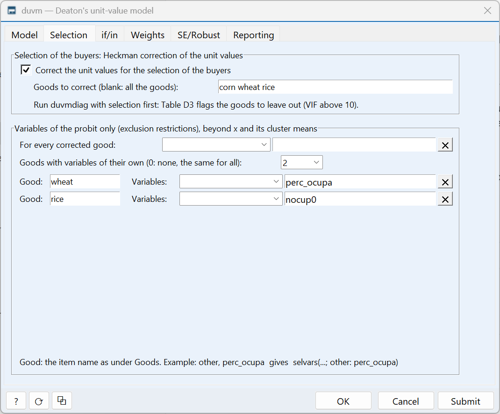
OK runs the command and closes the box;
Submit runs it and keeps the box open. The command
appears in the Review panel, so that a session built with the box can be
replayed as a script. From help duvm, run in dialog
box under an example opens the box filled with it.
7.12 Deaton’s published code:
compat
The Stata programs published with Deaton (1997) for the Maharashtra
data (allindia.do, mkmats.do) implement
chapter 5 with three departures from the book’s equations:
- The quality parameter. The code computes \(\zeta_i = \beta^1_i/(\beta^0_i + 1 - \beta^1_i\bar w_i)\), with a 1 where eq. (5.92) has \(\bar w_i\). Since \(\bar w_i\) is a few percent, this makes \(\zeta_i \approx \beta^1_i\), and the quality correction almost vanishes.
- The completed system. The extended \(\zeta^x\) is computed as the reciprocal of
(5.92), through
syminv(diag(b1)), which also drops the correction of any good with a negative quality elasticity. - The last row of \(\Theta^x\) is the column sum of the matrix where eq. (5.94) has its negative, so that the columns of the completed matrix do not add to zero.
The code also follows two conventions — the covariance of the
first-stage residuals from an auxiliary regression, and the region of a
cluster from its first household — and it is unweighted.
duvm follows the book; compat reproduces the
code, so that results computed with it can be recovered:
. duvm corn wheat rice other, hhsize(hhsize) expend(hh_current_inc) cluster(psu) ///
region(rururb) demographics(age i.sex i.educ) compat
Table 8: Price elasticities of quantity, quality corrected, symmetry restricted, completed system
───────────┬───────────────────────────────────────────────
│ corn wheat rice other composite
───────────┼───────────────────────────────────────────────
corn │ -0.846 0.054 -0.017 -0.002 0.541
wheat │ 0.081 -0.809 0.067 0.007 0.179
rice │ -0.285 0.667 -1.151 -0.108 0.277
other │ -0.073 0.089 -0.152 -0.716 -0.255
composite │ 0.001 0.001 0.000 0.000 -0.255
───────────┴───────────────────────────────────────────────Unweighted and with the book’s formulas, the same model gives \(-0.827\) for corn, \(-1.545\) for rice, \(-0.775\) for other cereals and \(-0.769\) for the composite good. The
composite good shows the third departure most: \(-0.255\) against \(-0.769\). Under compat the
non-buyers keep the unit values of the file, as in the code
(nonbuyers(asis)); this matters most for rice, as §7.3.3
explains. compatflags() reproduces only some of the
departures — among zeta, completion,
sign, chi and region,
compat being all five — which shows the effect of each.
compat requires hhsize(), gives no analytic
variance (the bootstrap works) and excludes selection.
7.13 Validation
duvm in AURA reproduces the Stata module
duvm 1.2.1, whose results are kept as references in AURA’s
tests: the point estimates and every matrix of e() to \(10^{-10}\) in relative terms, under the
default, the survey design, the selection correction, groups and
compat; the linearized variance to \(10^{-10}\); the diagnostics word for word;
the predictions and Engel curves to \(10^{-11}\). The Stata module was itself
validated against the bootstrap (§7.4.2), and compat
against a line-by-line transcription of Deaton’s published programs, to
\(10^{-9}\) (Araar 2026a). The
technical note of the Stata module gives the details, with its
replication files.
7.14 Stored results
duvm stores in e():
| Result | Content |
|---|---|
e(N), e(N_clust) |
households, clusters |
e(b), e(V) |
the estimates — the five price-elasticity matrices row by row, the expenditure and quality elasticities, the shares and \(\zeta\) — and their variance |
e(elast_price) |
the final matrix (Table 8); e(elast_price_ns),
e(elast_price_M), e(elast_price_M_ns),
e(elast_price_noqual) the others |
e(se_elast_price) |
its standard errors; e(se_name)
for the other matrices |
e(elast_exp), e(elast_qual) |
expenditure and quality elasticities |
e(shares_mean), e(zeta) |
mean shares, quality parameters |
e(b0), e(b1), e(beta0),
e(beta1) |
first-stage slopes of log expenditure, all first-stage coefficients |
e(S), e(R), e(Sf),
e(Rf), e(B), e(B_sym) |
the second-stage moments, corrected, and \(B\) |
e(Psi), e(Theta), e(Psi_x),
e(Theta_x) |
\(\Psi\) and \(\Theta\), and their completed versions |
e(omega), e(chi), e(n0),
e(n1) |
residual variance and covariance, harmonic cluster sizes |
e(sel_theta), e(sel_gamma) |
under selection: the coefficients of the Mills ratio
and of the probits |
e(elast_price_own_group) |
with hgroup(): Table 10 |
help duvm lists every result.
List of symbols
Common to all the chapters
| Symbol | Meaning |
|---|---|
| \(h\) | a household |
| \(n\) | the number of households |
| \(c\) | a cluster: the sampling unit within which all households face the same prices |
| \(i\) | a good of the system |
| \(j\) | a good of the system |
| \(J\) | the number of goods of the system |
| \(p\) | the vector of the prices |
| \(p_i\) | the price of good \(i\) |
| \(\ell_i\) | the log price of good \(i\), \(\ln p_i\) |
| \(\ell\) | the vector of the log prices |
| \(x\) | total expenditure |
| \(w_i\) | the budget share of good \(i\) |
| \(\bar w_i\) | the mean budget share of good \(i\) |
| \(W_i\) | the share of good \(i\) in total spending |
| \(q_i\) | the quantity of good \(i\) bought, \(w_i x/p_i\) |
| \(v_i\) | the unit value of good \(i\) |
| \(z\) | the household characteristics (demographics) |
| \(z_t\) | a household characteristic |
| \(T\) | the number of household characteristics |
| \(t\) | the index of the household characteristics, \(t = 1,\dots,T\) |
| \(\omega_h\) | the weight of household \(h\) |
| \(n_h\) | the size of household \(h\) |
| \(w^x_i\) | the derivative of the share of good \(i\) with respect to \(\ln x\) |
| \(w^p_{ij}\) | the derivative of the share of good \(i\) with respect to \(\ell_j\) |
| \(w^z_{it}\) | the derivative of the share of good \(i\) with respect to \(z_t\) |
| \(e_i\) | the expenditure elasticity of the quantity of good \(i\) |
| \(e_{ij}\) | the uncompensated price elasticity of the quantity of good \(i\) with respect to the price of good \(j\) |
| \(e^*_{ij}\) | the compensated price elasticity of the quantity of good \(i\) with respect to the price of good \(j\) |
| \(E\) | the matrix of the uncompensated price elasticities, a row per quantity and a column per price |
| \(E^*\) | the matrix of the compensated price elasticities, a row per quantity and a column per price |
| \(\Phi\) | the standard normal distribution function |
| \(\phi\) | the standard normal density |
| \(s\) | the regressors of the probit of purchase, in a correction for the households that do not buy |
| \(z^e\) | the variables of the probit of purchase only |
| \(\pi_i\) | the coefficients of the probit of purchase of good \(i\) |
| \(\upsilon_i\) | the error of the probit of purchase of good \(i\) |
| \(\delta_i\) | the coefficient of the selection term of good \(i\) |
| \(n_c\) | the number of clusters |
| \(\mathcal S\) | a stratum of the survey design |
| \(\mathcal P\) | a primary sampling unit (PSU) of the survey design |
| \(n_{\mathcal S}\) | the number of PSUs of stratum \(\mathcal S\) |
| \(f_{\mathcal S}\) | the sampling fraction of stratum \(\mathcal S\) |
| \(\mathrm{IF}_h(\cdot)\) | the influence function of an estimator: the contribution of household \(h\) |
| \(\mathrm{D}(a)\) | the diagonal matrix with the vector in parentheses on its diagonal |
| \(I\) | the identity matrix |
| \(\mathbf{1}\{\cdot\}\) | the indicator function |
Indices and marks (common to all the chapters)
| Index or mark | Meaning |
|---|---|
| \(_h\) | a household |
| \(_i\) | a good |
| \(_j\) | a good |
| \(_k\) | a good, in a sum over the goods |
| \(_l\) | a good, in a sum over the goods |
| \(_c\) | a cluster |
| \(_t\) | a household characteristic |
| \(^x\) | the derivative with respect to log expenditure, \(\ln x\) |
| \(^p\) | the derivative with respect to a log price |
| \(^z\) | the derivative with respect to a household characteristic |
| \(^*\) | compensated: utility held constant |
| \(\hat{\ }\) | an estimate, computed from the sample |
Single-equation demand models (Chapter 2)
| Symbol | Meaning |
|---|---|
| \(g\) | a group of households |
| \(G\) | the number of groups |
| \(q_{ih}\) | the quantity of good \(i\) bought by household \(h\) |
| \(q\) | the quantity of the good bought by a household |
| \(w_{ih}\) | the budget share of good \(i\) of household \(h\) |
| \(\ell_{ih}\) | the log price of good \(i\) for household \(h\) |
| \(x_h\) | the total expenditure of household \(h\) |
| \(z_h\) | the characteristics of household \(h\) |
| \(e_{ii}\) | the own-price elasticity of the quantity of good \(i\) |
| \(w^p_{ii}\) | the derivative of the share of good \(i\) with respect to its own log price \(\ell_i\) |
| \(w^x_{ih}\) | the derivative of the share of good \(i\) of household \(h\) with respect to \(\ln x\) |
| \(e^g_i\) | the expenditure elasticity of group \(g\) |
| \(e^g_{ii}\) | the own-price elasticity of group \(g\) |
| \(e^g_{ii,\text{log-log}}\) | the own-price elasticity of the buyers of group \(g\), from the log-log model |
| \(a_g\) | the intercept of group \(g\) |
| \(\gamma_g\) | the coefficient of the log price of good \(i\) for group \(g\), in the Working–Leser model |
| \(\beta_g\) | the coefficient of log expenditure for group \(g\), in the Working–Leser model |
| \(\beta\) | the coefficient of log expenditure common to the groups, in the Working–Leser model |
| \(\lambda\) | the coefficient of the square of log expenditure, in the Working–Leser model |
| \(\eta\) | the coefficients of the characteristics |
| \(u_h\) | the error of household \(h\) |
| \(f_i\) | the share of good \(i\) predicted by the model |
| \(f_{ih}\) | the share of good \(i\) predicted for household \(h\) |
| \(\tilde\omega_h\) | the weight of household \(h\) in a mean elasticity, set by the type of elasticity |
| \(s_h\) | the regressors of the probability of buying, for household \(h\) |
| \(\pi\) | the coefficients of the probability of buying |
| \(\pi_g\) | the coefficient of the log price of good \(i\) for group \(g\), in the probability of buying |
| \(F\) | the distribution function of the probability of buying |
| \(F'\) | the density of \(F\) |
| \(\bar\ell_{ic}\) | the weighted mean of the log unit values of the buyers of cluster
\(c\), given by
pcluster() |
| \(\Omega_c\) | the total weight of the households of cluster \(c\) that have a unit value |
| \(h'\) | a household of cluster \(c\) that has a unit value |
| \(\omega_{h'}\) | the weight of household \(h'\) |
| \(\ell_{ih'}\) | the log unit value of good \(i\) of household \(h'\) |
| \(A\) | minus the Jacobian of the estimating equations with respect to the coefficients |
| \(N\) | the numerator of an elasticity |
| \(M\) | the denominator of an elasticity |
| \(k\) | the number of coefficients |
| \(d\) | the degrees of freedom of the design |
| \(\chi^2\) | the Wald statistic of the test of equal elasticities across the groups |
| \(\beta^1_i\) | the expenditure elasticity of quality, in Deaton’s model |
The LES and the Cobb-Douglas demands (Chapter 3)
| Symbol | Meaning |
|---|---|
| \(\beta_i\) | the marginal budget share of good \(i\), in the LES |
| \(\beta_J\) | the marginal budget share of the last good, \(1 - \sum_{i<J}\beta_i\) |
| \(\alpha_i\) | the budget share of good \(i\), in the Cobb-Douglas demands |
| \(q^0_i\) | the committed quantity of good \(i\) |
| \(\mu_i\) | the committed quantity of good \(i\) of a household with \(z = 0\) |
| \(\nu_i\) | the effects of the characteristics on the committed quantity of good \(i\) |
| \(\tau_i\) | the effects of the characteristics on the share of good \(i\), in the Cobb-Douglas demands |
| \(\tilde x\) | the supernumerary expenditure, \(x - \sum_j p_j q^0_j\) |
| \(a_i\) | the committed share of good \(i\), \(p_i q^0_i/x\) |
| \(s\) | the supernumerary share of expenditure, \(\tilde x/x\) |
| \(u_i\) | the error of the share of good \(i\) |
| \(q_i\) | the quantity of good \(i\) predicted by the model, \(f_i x/p_i\) |
| \(f_i\) | the share of good \(i\) predicted by the model |
| \(f_{ih}\) | the share of good \(i\) predicted for household \(h\) |
| \(\tilde\omega_h\) | the weight of household \(h\) in a mean elasticity, set by the type of elasticity |
| \(\Sigma\) | the covariance matrix of the residuals |
The translog demand system (Chapter 4)
| Symbol | Meaning |
|---|---|
| \(V\) | the indirect utility, a function of the prices relative to the supernumerary expenditure |
| \(\alpha_i\) | the share of the supernumerary expenditure spent on good \(i\) when every price equals the supernumerary expenditure |
| \(\gamma_{ij}\) | the parameter of goods \(i\) and \(j\) in the quadratic term of the log indirect utility, symmetric: \(\gamma_{ij} = \gamma_{ji}\) |
| \(\tilde\ell_j\) | the log price of good \(j\) relative to the supernumerary expenditure, \(\ell_j - \ln\tilde x\) |
| \(\phi_i\) | the share of the supernumerary expenditure spent on good \(i\) |
| \(b_j\) | the sum of the parameters of good \(j\), \(\sum_i\gamma_{ij}\) |
| \(\phi_{ij}\) | the derivative of \(\phi_i\) with respect to \(\tilde\ell_j\) |
| \(\psi_i\) | the share of an additional unit of supernumerary expenditure spent on good \(i\), \(\partial(\tilde x\phi_i)/\partial\tilde x\) |
| \(\beta_i\) | the marginal budget share of good \(i\), in the LES |
| \(q^0_i\) | the committed quantity of good \(i\) |
| \(\mu_i\) | the committed quantity of good \(i\) of a household with \(z = 0\) |
| \(\nu_i\) | the effects of the characteristics on the committed quantity of good \(i\) |
| \(\tilde x\) | the supernumerary expenditure, \(x - \sum_j p_j q^0_j\) |
| \(a_i\) | the committed share of good \(i\), \(p_i q^0_i/x\) |
| \(s\) | the supernumerary share of expenditure, \(\tilde x/x\) |
| \(u_i\) | the error of the share of good \(i\) |
| \(\Sigma\) | the covariance matrix of the residuals |
AIDS and QUAIDS (Chapter 5)
| Symbol | Meaning |
|---|---|
| \(V\) | the indirect utility, a function of the prices, the expenditure and the characteristics |
| \(a(p)\) | the translog price index |
| \(b(p)\) | the Cobb-Douglas price aggregator, \(\prod_k p_k^{\beta_k}\) |
| \(m_0(z)\) | the equivalence scale of a household with the characteristics \(z\), \(1 + \rho'z\) |
| \(\kappa(p,z)\) | the factor of the scaling that changes the composition of spending with the characteristics, equal to one when every price is one, \(\prod_k p_k^{\eta_k'z}\) |
| \(\alpha_0\) | the constant of the translog price index \(\ln a(p)\) |
| \(\alpha_i\) | the intercept of the share of good \(i\) |
| \(\gamma_{ij}\) | the coefficient of the log price of good \(j\) in the share of good \(i\), symmetric: \(\gamma_{ij} = \gamma_{ji}\) |
| \(\beta_i\) | the coefficient of log deflated expenditure in the share of good \(i\) of the reference household, \(z = 0\) |
| \(\eta_i\) | the effects of the characteristics on the coefficient of log deflated expenditure in the share of good \(i\) |
| \(\lambda_i\) | the parameter of the quadratic term in log deflated expenditure of the share of good \(i\) |
| \(\rho\) | the effects of the characteristics on the equivalence scale \(m_0(z)\) |
| \(r\) | the log of expenditure deflated by the price index and the equivalence scale, \(\ln x - \ln m_0(z) - \ln a(p)\) |
| \(u_i\) | the error of the share of good \(i\) |
| \(f\) | the shares predicted by the model, as a function of the parameters |
| \(f_i\) | the share of good \(i\) predicted by the model |
| \(f_{ih}\) | the share of good \(i\) predicted for household \(h\) |
| \(f_h\) | the shares predicted for household \(h\), one for each good but the last |
| \(w_h\) | the budget shares of household \(h\), one for each good but the last |
| \(u_h\) | the residuals of household \(h\), one for each good but the last, \(w_h - f_h\) |
| \(w_J\) | the budget share of the last good, good \(J\) |
| \(\ell_J\) | the log price of the last good, good \(J\) |
| \(x_h\) | the total expenditure of household \(h\) |
| \(z_h\) | the characteristics of household \(h\) |
| \(\ell_h\) | the vector of the log prices of household \(h\) |
| \(w^x_{ih}\) | the derivative of the share of good \(i\) of household \(h\) with respect to log expenditure |
| \(w^p_{ijh}\) | the derivative of the share of good \(i\) of household \(h\) with respect to the log price of good \(j\) |
| \(e_{ih}\) | the expenditure elasticity of good \(i\) of household \(h\) |
| \(\tilde\omega_h\) | the weight of household \(h\) in the mean of an elasticity, set by the type of elasticity |
| \(\theta\) | the vector of the free parameters |
| \(G_h\) | the Jacobian of the shares of household \(h\), \(\partial f_h/\partial\theta'\) |
| \(\Sigma\) | the covariance matrix of the residuals |
| \(A\) | the Gauss–Newton information, \(\sum_h\omega_h G_h'\Sigma^{-1}G_h\) |
| \(g\) | the left-hand side of the estimating equations, \(\sum_h\omega_h G_h'\Sigma^{-1}u_h(\theta)\) |
| \(\chi_h\) | the estimating equations of household \(h\), in \((\theta, \Sigma)\) |
| \(H\) | the observed Jacobian of the estimating equations with respect to \((\theta, \operatorname{vech}\Sigma)\) |
| \(R\) | the term of the observed Jacobian in the residuals and the second derivatives of the shares |
| \(N_i\) | the numerator of the expenditure elasticity, \(\sum_h\tilde\omega_h w^x_{ih}\) |
| \(M_i\) | the denominator of the expenditure elasticity, \(\sum_h\tilde\omega_h f_{ih}\) |
| \(s_i\) | the regressors of the probit of purchase of good \(i\) |
| \(z^e_i\) | the variables of the probit of good \(i\) only |
| \(\Phi_i\) | the probability of buying good \(i\), \(\Phi(s_i'\pi_i)\) |
| \(\phi_i\) | the selection term of good \(i\): the standard normal density at the index of its probit |
| \(\pi_{ij}\) | the coefficient of the log price of good \(j\) relative to expenditure in the probit of good \(i\) |
| \(\varrho_i\) | the correlation of the selection term of good \(i\) with the column of its expenditure coefficient in the Jacobian of its share, given the other columns |
| \(R^2\) | the pseudo-R-squared of the probit of a good: one minus the ratio of its log likelihood to that of a probit with a constant only |
| \(\mathrm{se}(\cdot)\) | the standard error of an estimate |
| \(B\) | the number of bootstrap replications |
The EASI demand system (Chapter 6)
| Symbol | Meaning |
|---|---|
| \(C\) | the cost function: the expenditure needed to reach a utility level at given prices and characteristics |
| \(u\) | the utility level |
| \(y\) | the implicit utility, measured as log real expenditure: the log of the expenditure that would reach the household’s utility if every price were one |
| \(C_y\) | the derivative of the log cost function with respect to the implicit utility |
| \(y^{\text{stone}}\) | log expenditure deflated by the Stone price index, \(\ln x - \sum_i w_i\ell_i\) |
| \(\tilde y\) | the instrument of the implicit utility: log expenditure deflated by the Stone index at the mean shares, \(\ln x - \sum_i\bar w_i\ell_i\) |
| \(\tilde y^*\) | the refined instrument of the implicit utility |
| \(R\) | the order of the polynomial in the implicit utility |
| \(r\) | a power of the implicit utility in the polynomial |
| \(b^i_r\) | the coefficient of good \(i\) for a power of the implicit utility |
| \(g^i_t\) | the effect of characteristic \(t\) on the share of good \(i\) |
| \(d^i_t\) | the effect of characteristic \(t\) times the implicit utility on the share of good \(i\) |
| \(h^j_t\) | the effect of characteristic \(t\) times utility on the share of good \(j\), in the notation of Lewbel and Pendakur (2009) |
| \(a^{ij}(z)\) | the coefficient of the log price of good \(j\) in the share of good \(i\), a function of the characteristics, symmetric: \(a^{ij} = a^{ji}\) |
| \(a^{ij}_0\) | the coefficient of the log price of good \(j\) in the share of good \(i\) of the reference household, \(z = 0\) |
| \(a^{ijt}\) | the effect of characteristic \(t\) on the coefficient of the log price of good \(j\) in the share of good \(i\) |
| \(A(z)\) | the matrix of the coefficients of the log prices in the shares, a function of the characteristics |
| \(b^{ij}\) | the coefficient of the log price of good \(j\) times utility in the share of good \(i\), symmetric: \(b^{ij} = b^{ji}\) |
| \(B\) | the matrix of the coefficients of the log prices times utility in the shares |
| \(\hat B\) | the sum over the households of the products of their contributions to the estimating equations, \(\sum_h\xi_h\xi_h'\) |
| \(m^i\) | the coefficient of the log price of good \(i\) in the log cost function, a function of utility and the characteristics |
| \(m^i_y\) | the derivative with respect to the implicit utility of the coefficient of the log price of good \(i\) in the log cost function |
| \(\varepsilon_i\) | the error of the share of good \(i\), unobserved heterogeneity of preferences |
| \(\varepsilon\) | the vector of the errors of the shares |
| \(\hat\varepsilon_i\) | the residuals of the share of good \(i\), one per household |
| \(\hat\varepsilon_h\) | the residuals of household \(h\), one for each good but the last |
| \(w\) | the vector of the budget shares |
| \(w^y_i\) | the derivative of the share of good \(i\) with respect to the implicit utility |
| \(\mathrm{np}_j\) | the log price of good \(j\) relative to that of the last good, \(\ell_j - \ell_J\) |
| \(\ell_J\) | the log price of the last good, good \(J\) |
| \(w_J\) | the budget share of the last good, good \(J\) |
| \(w_{ih}\) | the budget share of good \(i\) of household \(h\) |
| \(w^x_{ih}\) | the derivative of the share of good \(i\) of household \(h\) with respect to log expenditure |
| \(\overline{w^x_i}\) | the weighted mean over the households of the derivative of the share of good \(i\) with respect to log expenditure |
| \(e_{ih}\) | the expenditure elasticity of good \(i\) of household \(h\) |
| \(e\) | an elasticity reported in the tables |
| \(\tilde\omega_h\) | the weight of household \(h\) in the mean of an elasticity, set by the type of elasticity |
| \(X\) | the design: the regressors of the shares |
| \(\hat X\) | the projection of the design on the instruments |
| \(\hat X_h\) | the row of household \(h\) in the projection of the design on the instruments |
| \(Z\) | the instruments |
| \(Y\) | the matrix of the budget shares, one column for each good but the last |
| \(\Omega\) | the diagonal matrix of the weights |
| \(S\) | the weighted cross product of the projected design, \(\hat X'\Omega\hat X\) |
| \(Q\) | the matrix of the symmetry restrictions |
| \(\mu\) | the multipliers of the symmetry restrictions |
| \(\beta\) | the vector of the coefficients |
| \(K\) | the number of coefficients per equation |
| \(P\) | the leading block of the inverse of the bordered matrix |
| \(\hat\Sigma\) | the estimated covariance matrix of the residuals |
| \(n_{\text{eff}}\) | the sum of the weights of the households |
| \(\xi_h\) | the contribution of household \(h\) to the estimating equations |
| \(N_h\) | the numerator of an elasticity for household \(h\) |
| \(M_h\) | the denominator of an elasticity for household \(h\) |
| \(\bar N\) | the weighted mean over the households of the numerator of an elasticity |
| \(\bar M\) | the weighted mean over the households of the denominator of an elasticity |
| \(G\) | the gradient of an elasticity with respect to the coefficients |
| \(f\) | the latent shares of the model |
| \(f_i\) | the share of good \(i\) predicted by the model |
| \(w^*_i\) | the latent share of good \(i\), \(f_i + \varepsilon_i\) |
| \(\tilde w_i\) | the expected latent share of good \(i\) of a household that does not buy it |
| \(s_i\) | the regressors of the probit of purchase of good \(i\) |
| \(z^e_i\) | the variables of the probit of good \(i\) only |
| \(\Phi_i\) | the probability of buying good \(i\), \(\Phi(s_i'\pi_i)\) |
| \(\phi_i\) | the selection term of good \(i\): the standard normal density at the index of its probit |
| \(\delta\) | the coefficient of the selection term of a good |
| \(\mathrm{VIF}(\delta_i)\) | the variance inflation of the coefficient of the selection term of good \(i\), \(1/(1 - R^2_i)\) |
| \(R^2_i\) | the uncentred R-squared of the weighted regression of the selection term of good \(i\) on the other regressors of its equation |
The unit-value model (Chapter 7)
| Symbol | Meaning |
|---|---|
| \(p\) | the price of a good |
| \(p_{ic}\) | the price of good \(i\) in cluster \(c\), not observed |
| \(v\) | the unit value of a good: its expenditure divided by its quantity |
| \(w\) | the budget share of a good |
| \(q\) | the quantity of a good bought |
| \(q_i\) | the quantity of good \(i\) bought, \(w_i x/v_i\) |
| \(\xi\) | the quality of a good: its unit value divided by its price |
| \(w_{ihc}\) | the budget share of good \(i\) of household \(h\) in cluster \(c\) |
| \(v_{ihc}\) | the unit value of good \(i\) paid by household \(h\) in cluster \(c\) |
| \(x_{hc}\) | the total expenditure of household \(h\) in cluster \(c\) |
| \(z_{hc}\) | the characteristics of household \(h\) in cluster \(c\) |
| \(w_{ih}\) | the budget share of good \(i\) of household \(h\) |
| \(v_{ih}\) | the unit value of good \(i\) paid by household \(h\) |
| \(x_h\) | the total expenditure of household \(h\) |
| \(y_h\) | a variable of household \(h\) |
| \(\alpha^0_i\) | the intercept of the share equation of good \(i\) |
| \(\beta^0_i\) | the coefficient of log expenditure in the share equation of good \(i\) |
| \(\gamma^0_i\) | the effects of the characteristics in the share equation of good \(i\) |
| \(\alpha^1_i\) | the intercept of the unit-value equation of good \(i\) |
| \(\alpha^1_{ic}\) | the intercept of the unit-value equation of good \(i\) in cluster \(c\) |
| \(\beta^1_i\) | the expenditure elasticity of quality of good \(i\): the coefficient of log expenditure in its unit-value equation |
| \(\gamma^1_i\) | the effects of the characteristics in the unit-value equation of good \(i\) |
| \(\beta^0\) | the vector of the coefficients of log expenditure in the share equations |
| \(\beta^1\) | the expenditure elasticity of quality of a good |
| \(\theta_{ij}\) | the effect of the log price of good \(j\) on the share of good \(i\) |
| \(\Theta\) | the matrix of the effects of the log prices on the shares |
| \(\psi_{ij}\) | the effect of the log price of good \(j\) on the log unit value of good \(i\) |
| \(\Psi\) | the matrix of the effects of the log prices on the log unit values |
| \(f_{ic}\) | the cluster effect of good \(i\) in cluster \(c\), in the share equation |
| \(u^0_{ihc}\) | the error of the share equation of good \(i\) for household \(h\) in cluster \(c\) |
| \(u^1_{ihc}\) | the error of the unit-value equation of good \(i\) for household \(h\) in cluster \(c\) |
| \(u^0\) | the error of the share equation |
| \(u^1\) | the error of the unit-value equation |
| \(\hat u^0_{ih}\) | the first-stage residual of the share equation of good \(i\) for household \(h\) |
| \(\hat u^1_{ih}\) | the first-stage residual of the unit-value equation of good \(i\) for household \(h\) |
| \(\hat u_h\) | the first-stage residual of household \(h\) in an equation |
| \(\bar w\) | the vector of the mean budget shares |
| \(\zeta_i\) | the quality parameter of good \(i\), eq. (5.92) |
| \(\zeta\) | the quality parameter of a good |
| \(B\) | the matrix that the between-cluster regression of the shares on the unit values identifies, \((\Psi')^{-1}\Theta'\) |
| \(\tilde B\) | the errors-in-variables estimate of the matrix identified between clusters |
| \(\tilde B_R\) | the errors-in-variables estimate of the matrix identified between clusters, under the symmetry restriction |
| \(\Theta^x\) | the matrix of the effects of the log prices on the shares, completed by the composite good |
| \(\Psi^x\) | the matrix of the effects of the log prices on the log unit values, completed by the composite good |
| \(E^x\) | the matrix of the price elasticities of quantity, completed by the composite good |
| \(B^x\) | the matrix identified between clusters, completed by the composite good, \(\Theta^x(\Psi^x)^{-1}\) transposed |
| \(\zeta^x\) | the vector of the quality parameters, completed by the composite good |
| \(\bar w^x\) | the vector of the mean budget shares, completed by the composite good |
| \(\beta^1_{J+1}\) | the expenditure elasticity of quality assumed for the composite good |
| \(Q\) | the matrix that picks the pairs of coefficients that the symmetry restriction ties |
| \(r\) | the right-hand side of the symmetry restriction, \(-Q(\beta^0\otimes\bar w)\) |
| \(X_h\) | the first-stage regressors of household \(h\) |
| \(X_{hc}\) | the first-stage regressors of household \(h\) in cluster \(c\) |
| \(\bar X_c\) | the cluster mean of the first-stage regressors |
| \(\bar X_{ic}\) | the mean of the first-stage regressors over the reporters of good \(i\) in cluster \(c\) |
| \(\tilde X\) | the first-stage regressors demeaned within the clusters |
| \(\tilde X_h\) | the row of household \(h\) of the first-stage regressors demeaned within the clusters |
| \(\Omega\) | the diagonal matrix of the weights |
| \(\tilde X_{ic}\) | the mean of the first-stage regressors over the reporters of good \(i\) in cluster \(c\), residualised on the region and survey-round dummies |
| \(K\) | the number of first-stage regressors |
| \(\hat y^0_{ih}\) | the share of good \(i\) of household \(h\) purged of the effects of the first-stage regressors |
| \(\hat y^1_{ih}\) | the log unit value of good \(i\) of household \(h\) purged of the effects of the first-stage regressors |
| \(\bar y^0_{ic}\) | the cluster average of the purged share of good \(i\) in cluster \(c\) |
| \(\bar y^1_{ic}\) | the average of the purged log unit value of good \(i\) over the reporters of cluster \(c\) |
| \(\tilde y^1_{ic}\) | the average of the purged log unit value of good \(i\) over the reporters of cluster \(c\), residualised on the region and survey-round dummies |
| \(\bar{\tilde y}^1_i\) | the mean over the clusters of the residualised averages of the purged log unit value of good \(i\) |
| \(S\) | the between-cluster covariance matrix of the averages of the purged log unit values |
| \(S_{ij}\) | the between-cluster covariance of the averages of the purged log unit values of goods \(i\) and \(j\) |
| \(R\) | the between-cluster covariance matrix of the averages of the purged log unit values with those of the purged shares |
| \(R_{ij}\) | the between-cluster covariance of the average of the purged log unit value of good \(i\) with that of the purged share of good \(j\) |
| \(S_f\) | the between-cluster covariance matrix of the averages of the purged log unit values, corrected for the averaged first-stage errors |
| \(\sigma^{11}_i\) | the variance of the error of the unit-value equation of good \(i\) |
| \(\sigma^{01}_i\) | the covariance of the errors of the share and unit-value equations of good \(i\) |
| \(\hat\sigma^{11}_i\) | the estimated variance of the error of the unit-value equation of good \(i\) |
| \(\hat\sigma^{01}_i\) | the estimated covariance of the errors of the share and unit-value equations of good \(i\) |
| \(\hat\sigma^{11}\) | the vector of the estimated variances of the errors of the unit-value equations |
| \(\hat\sigma^{01}\) | the vector of the estimated covariances of the errors of the share and unit-value equations |
| \(\sigma^2\) | the variance of an error |
| \(m_{ih}\) | the indicator that household \(h\) reports a unit value of good \(i\) |
| \(\kappa_i\) | the normalisation of the weights of the reporters of good \(i\), \(n^+_i/\sum_h\omega_h m_{ih}\) |
| \(n^+_i\) | the number of households that report a unit value of good \(i\) |
| \(C^+_i\) | the number of clusters with a household that reports a unit value of good \(i\) |
| \(C\) | the number of clusters |
| \(n_{ic}\) | the number of households of cluster \(c\), its effective size with weights |
| \(n^+_{ic}\) | the number of households of cluster \(c\) that report a unit value of good \(i\) |
| \(\bar n_i\) | the harmonic mean over the clusters of the number of households |
| \(\bar N\) | the diagonal matrix of the harmonic means of the numbers of households of the clusters |
| \(\bar N_+\) | the diagonal matrix of the harmonic means of the numbers of reporters of the clusters |
| \(\bar n\) | the harmonic mean of the number of households of a cluster |
| \(\bar n^+\) | the harmonic mean of the number of reporters of a good in a cluster |
| \(n_{ij}\) | the number of clusters where the averages of goods \(i\) and \(j\) are both observed |
| \(s_h\) | the regressors of the probit of purchase, for household \(h\) |
| \(z^e_h\) | the variables of the probit only, for household \(h\) |
| \(\lambda_{ih}\) | the inverse Mills ratio of good \(i\) for household \(h\) |
| \(\lambda\) | the inverse Mills ratio of a good |
| \(\rho_i\) | the within-cluster correlation of the inverse Mills ratio of good \(i\) with log expenditure, given the other regressors |
| \(\mathrm{VIF}_i\) | the variance inflation of the estimated expenditure elasticity of quality of good \(i\) due to the selection term, \(1/(1-\rho_i^2)\) |
| \(\mathrm{VIF}\) | the variance inflation of the estimated expenditure elasticity of quality of a good due to the selection term |
| \(\eta\) | the vector of the moments |
| \(\tau\) | the vector of the reported parameters |
| \(g\) | the function that gives the reported parameters from the moments |
| \(G\) | the Jacobian of the reported parameters with respect to the moments |
| \(\hat\beta^0_{\cdot,1}\) | the vector of the coefficients of log expenditure in the share equations |
| \(\hat\beta^1_{\cdot,1}\) | the vector of the coefficients of log expenditure in the unit-value equations |
| \(\mathrm{IF}_c\) | the sum of the contributions of cluster \(c\) to the moments |
| \(\overline{\mathrm{IF}}\) | the mean over the clusters of their contributions to the moments |
| \(\mathrm{IF}_{\mathcal P}\) | the sum of the contributions of a primary sampling unit to the moments |
| \(\overline{\mathrm{IF}}_{\mathcal S}\) | the mean of the contributions of the primary sampling units of a stratum |
References
Araar, A. (1998). Le bien-être des ménages et la transition économique en Pologne. Doctoral thesis, chapter 5. Département d’économique, Université Laval.
Araar, A. (2026a). Estimating Deaton’s unit-value model: the duvm Stata module. Zenodo. doi:10.5281/zenodo.22938872.
Araar, A. (2026b). Estimating the exact affine Stone index demand system: the easi Stata module, version 2.0.0. Zenodo. doi:10.5281/zenodo.23042262.
Araar, A. (2026c). Estimating AIDS and QUAIDS demand systems with survey data: the equaids Stata module. Zenodo. doi:10.5281/zenodo.22959991.
Araar, A., E. Malasquez, S. Olivieri and C. Rodriguez-Castelan (2018). Introducing WELCOM: a tool to simulate the welfare impacts of competition, version 2.1. User manual. Washington, DC: World Bank.
Banks, J., R. Blundell and A. Lewbel (1997). Quadratic Engel curves and consumer demand. Review of Economics and Statistics 79(4), 527–539.
Barten, A. P. (1964). Consumer demand functions under conditions of almost additive preferences. Econometrica 32(1/2), 1–38.
Barten, A. P. (1969). Maximum likelihood estimation of a complete system of demand equations. European Economic Review 1(1), 7–73.
Belsley, D. A., E. Kuh and R. E. Welsch (1980). Regression Diagnostics: Identifying Influential Data and Sources of Collinearity. New York: Wiley.
Blundell, R. and J.-M. Robin (1999). Estimation in large and disaggregated demand systems: an estimator for conditionally linear systems. Journal of Applied Econometrics 14(3), 209–232.
Christensen, L. R., D. W. Jorgenson and L. J. Lau (1975). Transcendental logarithmic utility functions. American Economic Review 65(3), 367–383.
Cragg, J. G. (1971). Some statistical models for limited dependent variables with application to the demand for durable goods. Econometrica 39(5), 829–844.
Crawford, I., F. Laisney and I. Preston (2003). Estimation of household demand systems with theoretically compatible Engel curves and unit value specifications. Journal of Econometrics 114(2), 221–241.
Deaton, A. (1974). A reconsideration of the empirical implications of additive preferences. Economic Journal 84(334), 338–348.
Deaton, A. (1987). Estimation of own- and cross-price elasticities from household survey data. Journal of Econometrics 36(1–2), 7–30.
Deaton, A. (1988). Quality, quantity, and spatial variation of price. American Economic Review 78(3), 418–430.
Deaton, A. (1990). Price elasticities from survey data: extensions and Indonesian results. Journal of Econometrics 44(3), 281–309.
Deaton, A. (1997). The Analysis of Household Surveys: A Microeconometric Approach to Development Policy. Baltimore: Johns Hopkins University Press for the World Bank.
Deaton, A. and J. Muellbauer (1980a). An almost ideal demand system. American Economic Review 70(3), 312–326.
Deaton, A. and J. Muellbauer (1980b). Economics and Consumer Behavior. Cambridge: Cambridge University Press.
Duan, N. (1983). Smearing estimate: a nonparametric retransformation method. Journal of the American Statistical Association 78(383), 605–610.
Engel, E. (1857). Die Productions- und Consumtionsverhältnisse des Königreichs Sachsen. Zeitschrift des Statistischen Bureaus des Königlich Sächsischen Ministeriums des Innern 8–9.
Engel, E. (1895). Die Lebenskosten belgischer Arbeiter-Familien früher und jetzt. Bulletin de l’Institut International de Statistique 9, 1–124.
Fan, J. and I. Gijbels (1996). Local Polynomial Modelling and Its Applications. London: Chapman & Hall.
Fuchs Tarlovsky, A., and F. J. Meneses (2017). Are tobacco taxes really regressive? Evidence from Chile. Policy Research Working Paper 7988. Washington, DC: World Bank.
Geary, R. C. (1950–51). A note on “A constant-utility index of the cost of living”. Review of Economic Studies 18(1), 65–66.
Gibson, J. and B. Kim (2019). Quality, quantity, and spatial variation of price: back to the bog. Journal of Development Economics 137, 66–77.
Gorman, W. M. (1981). Some Engel curves. In A. Deaton (ed.), Essays in the Theory and Measurement of Consumer Behaviour in Honour of Sir Richard Stone, 7–29. Cambridge: Cambridge University Press.
Heckman, J. J. (1979). Sample selection bias as a specification error. Econometrica 47(1), 153–161.
Heien, D. and C. R. Wessells (1990). Demand systems estimation with microdata: a censored regression approach. Journal of Business & Economic Statistics 8(3), 365–371.
Hoareau, S., G. Lacroix, M. Hoareau and L. Tiberti (2012). Exact affine Stone index demand system in R: the easi package. Working paper, CIRPÉE, Université Laval.
Ito, K. (2014). Consumers respond to marginal or average price? Evidence from nonlinear electricity pricing. American Economic Review 104(2), 537–563.
Kish, L. (1965). Survey Sampling. New York: Wiley.
Klein, L. R. and H. Rubin (1947–48). A constant-utility index of the cost of living. Review of Economic Studies 15(2), 84–87.
Lecocq, S. and J.-M. Robin (2015). Estimating almost-ideal demand systems with endogenous regressors. Stata Journal 15(2), 554–573.
Leser, C. E. V. (1963). Forms of Engel functions. Econometrica 31(4), 694–703.
Lewbel, A. (1991). The rank of demand systems: theory and nonparametric estimation. Econometrica 59(3), 711–730.
Lewbel, A. and K. Pendakur (2009). Tricks with Hicks: the EASI demand system. American Economic Review 99(3), 827–863.
Muellbauer, J. (1976). Community preferences and the representative consumer. Econometrica 44(5), 979–999.
Mundlak, Y. (1978). On the pooling of time series and cross section data. Econometrica 46(1), 69–85.
Nadaraya, E. A. (1964). On estimating regression. Theory of Probability and Its Applications 9(1), 141–142.
Pendakur, K. (2009). EASI made easier. In D. Slottje (ed.), Quantifying Consumer Preferences, Contributions to Economic Analysis 288, 179–206. Bingley: Emerald.
Poi, B. P. (2002). From the help desk: demand system estimation. Stata Journal 2(4), 403–410.
Poi, B. P. (2008). Demand-system estimation: update. Stata Journal 8(4), 554–556.
Poi, B. P. (2012). Easy demand-system estimation with quaids. Stata Journal 12(3), 433–446.
Pollak, R. A. and T. J. Wales (1981). Demographic variables in demand analysis. Econometrica 49(6), 1533–1551.
Pollak, R. A. and T. J. Wales (1992). Demand System Specification and Estimation. New York: Oxford University Press.
Prais, S. J. and H. S. Houthakker (1955). The Analysis of Family Budgets. Cambridge: Cambridge University Press.
Ray, R. (1983). Measuring the costs of children: an alternative approach. Journal of Public Economics 22(1), 89–102.
Samuelson, P. A. (1947–48). Some implications of “linearity”. Review of Economic Studies 15(2), 88–90.
Shonkwiler, J. S. and S. T. Yen (1999). Two-step estimation of a censored system of equations. American Journal of Agricultural Economics 81(4), 972–982.
Silverman, B. W. (1986). Density Estimation for Statistics and Data Analysis. London: Chapman & Hall.
StataCorp (2023). Stata 18 Base Reference Manual: demandsys. College Station, TX: Stata Press.
Stone, R. (1954). Linear expenditure systems and demand analysis: an application to the pattern of British demand. Economic Journal 64(255), 511–527.
Theil, H. (1965). The information approach to demand analysis. Econometrica 33(1), 67–87.
Watson, G. S. (1964). Smooth regression analysis. Sankhyā, Series A 26(4), 359–372.
Wooldridge, J. M. (1995). Selection corrections for panel data models under conditional mean independence assumptions. Journal of Econometrics 68(1), 115–132.
Working, H. (1943). Statistical laws of family expenditure. Journal of the American Statistical Association 38(221), 43–56.
Zhen, C., E. A. Finkelstein, J. M. Nonnemaker, S. A. Karns and J. E. Todd (2014). Predicting the effects of sugar-sweetened beverage taxes on food and beverage demand in a large demand system. American Journal of Agricultural Economics 96(1), 1–25.